生成时间：2026-08-03T11:30:18+08:00
今日保留论文数：7
内容构成：今日新文 7 篇；补充推荐 0 篇；经典旧文精读 0 篇
数据源警告
- 本次有 1 个数据源访问异常；完整错误已保留在运行日志中，日报只显示摘要。
- arXiv API：1 个分类访问异常，候选池可能不完整；程序会基于已成功获取的数据继续兜底。
- 主要错误类型：超时 1 次。
高能天体物理重点
1. Gamma-ray emission from particle illumination and shock-cloud interaction in the W51 Complex
- 来源：arXiv / astro-ph.HE
- 链接：https://arxiv.org/abs/2607.29488v1
- 作者：Alan Sunny, Martina Cardillo
- 评分：novelty 8/10，importance 9/10，relevance 10/10，final 10.00/10
- 推荐理由：直接针对W51复合体的Fermi-LAT GeV与LHAASO UHE伽马辐射、PeVatron和强子云照亮情景，主题高度契合且结果清楚地区分冲击-云相互作用与历史粒子照亮模型，值得重点阅读。
中文题目：W51 复合体中粒子照明与激波—分子云相互作用产生的伽马射线辐射
做了什么：这篇文章讨论 W51 复合体中 GeV 到超高能伽马射线的起源，重点比较两类强子模型：一类是超新星遗迹 W51C 的激波正在撞击 W51B 附近分子云，包含新鲜粒子加速、绝热压缩和银河宇宙线再加速；另一类是“照明”模型，即分子云长期囚禁过去某个加速器注入的高能质子，当前伽马射线主要来自这些质子与云气体的碰撞。作者发现，直接激波—云相互作用能较好解释 Fermi-LAT 看到的 GeV 发射，但无法延伸到 LHAASO 报告的超高能能段；相反，照明模型可以自然给出超高能谱，提示 W51B 这类稠密分子环境可能是保存历史 PeVatron 活动痕迹的关键结构。
为什么重要：W51 是银河系中少数同时包含年轻/中年超新星遗迹、恒星形成区、致密分子云和 TeV–PeV 能段伽马射线信号的复合系统。若 LHAASO 超高能辐射确实来自强子过程，它将直接指向过去或现在能把质子加速到接近 PeV 的源。本文的重要性在于，它不只问“哪个源在发光”，而是把问题改写为“致密云是否能作为历史 PeVatron 的记忆介质”。这对理解银河宇宙线源、PeVatron 寿命以及源区扩散都有直接意义。
理论 / 观测 / 仪器方法价值：理论上，本文把激波—云相互作用模型与源无关的粒子照明模型放在同一对象上比较，说明 GeV 与 UHE 伽马射线不一定由同一时期、同一物理过程主导。观测上，它给出了检验 W51 LHAASO 源的方向：不仅要看伽马射线谱形，还要看分子云柱密度、空间重合、扩散长度和能量相关形态。方法上，它强调在复杂星际环境中，单区或单源解释很容易误判，必须把云的粒子囚禁能力、历史注入和当前激波作用分开建模。
为什么应该关注：如果你关注银河 PeVatron，W51 是一个很好的警告案例：当前可见的超新星遗迹激波未必就是超高能光子的直接发动机，致密分子云可能在很长时间内保存早期注入的高能质子。如果你关注 Fermi-LAT、H.E.S.S.、MAGIC、HAWC、LHAASO 等多波段数据的联合解释，本文展示了为什么 GeV 拟合成功并不保证 PeV 能段外推可靠。如果你做源区扩散或分子云辐射，这篇文章提供了一个把宇宙线传播、云质量和伽马射线谱形联系起来的具体案例。
展开详细解读：文章讲解、背景、理论、重点章节、图表与相关工作
文章详细讲解
科学问题：W51 复合体是银河盘内一个结构复杂、气体丰富、恒星形成活跃的区域，其中包含超新星遗迹 W51C、分子云 W51B 以及多个可能的粒子加速器。Fermi-LAT 已经在 GeV 能段看到与 W51C/W51B 区域相关的伽马射线，地面切伦科夫和空气簇射阵列也报告了更高能发射。LHAASO 把问题进一步推向超高能能段：如果 W51 的伽马射线能延伸到 \(\mathrm{PeV}\) 粒子对应的能量，那么到底是当前 W51C 激波还在加速粒子，还是过去某个加速器留下的高能强子正在照亮分子云？这是本文要解决的核心问题。
作者怎么做：文章建立并比较两个强子辐射场景。第一个是直接激波—云相互作用模型，假定 W51C 激波撞上 W51B 附近的高密度云，伽马射线来自三部分粒子群：当前激波新鲜加速的宇宙线、被激波压缩的原有宇宙线、以及进入激波区后被再加速的银河背景宇宙线。第二个是加速器无关的照明模型，不指定当前可见的哪一个源负责加速，而是假定较早时期有高能粒子注入并在 W51B 这样的致密云中长期滞留，通过 \(\mathrm{p}\mathrm{p}\) 碰撞产生中性介子衰变伽马射线。两类模型都围绕强子相互作用、气体密度、云质量、粒子谱和传播时间来解释多能段谱能量分布。
关键结果：激波—云相互作用模型能解释 Fermi-LAT 的 GeV 谱段，这说明 W51C 与附近分子云的相互作用确实是低能伽马射线的重要来源，也支持 W51C 是经典的分子云相互作用型超新星遗迹。然而，该模型在超高能端变得吃力：无论是当前激波最大能量、再加速效率，还是压缩后的粒子谱，都难以同时满足 GeV 数据和 LHAASO 的 UHE 辐射。照明模型则表现相反：只要云能在足够长时间内限制高能粒子，并且注入历史允许较硬、较高截止能的强子谱，它就能自然解释 UHE 光子，而不必把 PeV 加速要求强加给当前可见的 W51C 激波。
局限和下一步：本文的结论依赖于 W51 区域气体分布、源距离、LHAASO 源的空间归属、粒子扩散系数以及云内囚禁时间等假设。W51 不是一个简单孤立源，射电、红外、\(\mathrm{CO}\) 分子线、GeV–TeV–UHE 伽马射线的角分辨率和视线混叠都会影响解释。下一步最关键的是用更高角分辨率的 TeV–UHE 形态、能量相关源大小、分子云速度分量分解，以及 Fermi-LAT 低能端空间模板来区分“当前激波照亮云”和“历史粒子库照亮云”。如果未来能在 W51B 的高柱密度区域看到与 UHE 光子更强的空间重合，同时缺乏相应的 X 射线同步辐射电子证据，强子照明解释会更有说服力。
关键结果是怎么做出来的
本文最重要的证据链是：同一组 W51 区域的伽马射线观测不能由一个简单的当前激波—云模型从 GeV 一直解释到 UHE。作者把 Fermi-LAT 的 GeV 发射作为低能锚点，把 LHAASO 报告的超高能谱作为高能约束，并在 W51B 分子云环境中计算强子 \(\mathrm{p}\mathrm{p}\) 相互作用产生的伽马射线。样本不是天体统计样本，而是针对一个空间复杂的命名复合体做多能段谱拟合；因此关键不是事件总数的泊松统计，而是不同能段通量点、上限、谱形和模型自由度之间能否同时一致。
在直接激波—云相互作用场景中，作者把粒子成分拆为新鲜加速、绝热压缩和再加速的银河宇宙线。这个处理的强点是物理上贴近 W51C 这类中年超新星遗迹与分子云相撞的已知图像：低能宇宙线在高密度气体中有足够大的靶物质密度，因而很容易产生明亮的 GeV 辐射。拟合 GeV 谱时，模型主要受气体密度、粒子总能量、谱指数和低/中能谱弯曲控制。文章的结论是，这一模型可以再现 Fermi-LAT 数据，说明 W51C 激波与云的相互作用对 GeV 发射有充分解释力。
但是当同一个场景被推到 LHAASO 能段时，问题出现了。要产生 UHE 伽马射线，母质子能量通常需要比光子能量高一个数量级左右；这要求当前激波或再加速机制能提供接近 \(\mathrm{PeV}\) 的质子，并且这些质子还要在高密度气体附近保留足够的数量。对于一个已与分子云相互作用、激波速度可能已经降低的中年超新星遗迹而言，这很难做到。模型比较的实质是谱形外推失败：能解释 GeV 的粒子谱在 UHE 端不够硬或截止过早，而强行提高最高能量又会破坏其他能段或能量预算。
照明模型的统计含义不是“多加一个源就拟合更好”这么简单，而是改变了时间维度：当前看到的云可以是过去注入粒子的辐射靶和储存器。作者让 W51B 云作为长期囚禁区域，计算早期注入强子在云内或云附近保持高能尾部后产生的 \(\gamma\) 射线。这个模型更容易解释 LHAASO 超高能谱，因为它不要求当前 W51C 激波仍处在最高加速效率阶段，而允许年轻时期的超新星遗迹、恒星团风或其他隐藏加速器曾经注入更高能粒子。
支持结论的图表应包括多能段谱能量分布图、两种模型各成分分解图、粒子谱或注入历史参数图，以及与分子云参数相关的可接受区域。显著性或置信度在这类工作中通常通过通量点残差、\(\chi^2\) 或似然等效统计量、以及模型是否满足观测上限来体现；读者需要看的是 UHE 点是否由模型自然穿过，还是依赖极端参数。系统误差主要来自 LHAASO 源关联、分子云质量和距离、\(\mathrm{CO}\)-到-\(\mathrm{H}_2\) 转换因子、背景扣除、Fermi-LAT 空间模板，以及强子相互作用截面的模型差异。稳健性方面，最应检查的是改变云密度、扩散系数、源年龄和注入截止能后，照明模型是否仍能优于激波—云模型。
展开背景、理论、公式、模型、章节和图表导读
背景知识
W51 是银河系内最著名的大质量恒星形成复合体之一，距离通常取几千秒差距量级，包含电离氢区、分子云、年轻恒星族以及超新星遗迹 W51C。W51C 长期以来被认为是与分子云相互作用的超新星遗迹，射电壳层、红外/分子线迹象以及 GeV–TeV 伽马射线都支持这一点。这种环境天然适合强子伽马射线产生，因为只要有加速质子进入高密度气体，\(\mathrm{p}\mathrm{p}\) 碰撞就会高效地产生 \(\pi^0\)，随后衰变成伽马光子。
历史上，W51C 的 GeV–TeV 发射常被用作“超新星遗迹加速宇宙线并照亮分子云”的经典例子。Fermi-LAT 在 GeV 能段给出了相对清晰的谱，MAGIC 和 H.E.S.S. 等在 TeV 能段提供了高能延伸。但这些早期数据通常还不能单独证明 PeVatron 活动，因为 TeV 光子对应的母质子能量远低于 \(\mathrm{PeV}\)。LHAASO 的加入改变了问题尺度：如果同一区域确实存在 UHE 伽马射线，那么母质子能量可能接近或超过 \(\mathrm{PeV}\) 量级，这将把 W51 从普通相互作用型超新星遗迹推向银河 PeVatron 候选体。
为什么现在值得重新看？一方面，LHAASO、HAWC 这类广视场阵列让银河平面 UHE 源的数量迅速增加，许多源位于复杂分子云和恒星形成区域内。另一方面，传统的“一张伽马射线图对应一个加速器”的解释在角分辨率有限、视线重叠严重的银河盘内经常过于简单。W51 正好提供了一个检验场：同一区域内既有可见的超新星遗迹，也有大质量分子云，还可能有其他加速器，因而可以比较当前加速、历史注入和云内传播三种因素的相对重要性。
该领域常见误区之一是把伽马射线与某个可见壳层或脉冲星风云的空间接近直接等同为因果关系。对于强子辐射，真正重要的是高能质子分布与气体靶分布的乘积，而不是单独的加速器位置。另一个误区是认为 GeV 谱拟合成功就自动支持 PeV 加速；事实上，GeV 辐射可由 \(\mathrm{GeV}\)–\(\mathrm{TeV}\) 质子产生，不能保证谱在 \(\mathrm{PeV}\) 附近仍有足够粒子。还有一个误区是忽视分子云的时间记忆：云不只是被动靶，它的磁湍动和高密度结构可能改变高能粒子的扩散、滞留和逃逸。
基础理论 / 方法脉络
基本物理图像从强子伽马射线开始。若高能质子进入密度为 \(n_{\mathrm{H}}\) 的气体，质子—质子非弹性碰撞会产生带电和中性介子，其中 \(\pi^0\) 很快衰变为两个伽马光子。伽马射线体发射率近似与宇宙线质子谱 \(N_p(E_p)\)、气体密度 \(n_{\mathrm{H}}\) 和相互作用截面 \(\sigma_{pp}\) 成正比。因此分子云在强子辐射中扮演放大器：相同宇宙线密度下，气体越密、云质量越大，伽马射线越亮。
在超新星遗迹激波模型中，粒子通过扩散激波加速获得近似幂律能谱。年轻、快速、磁场放大的激波更容易达到高最大能量；中年遗迹进入稠密环境后，激波速度下降，最高可达能量往往降低。W51C 与分子云相互作用时，低能到中能强子辐射可以很强，但这并不自动意味着当前激波能把质子加速到 \(\mathrm{PeV}\)。本文的第一个模型正是利用这一物理图像，把当前激波新加速、压缩和再加速成分组合起来解释 GeV 辐射。
照明模型的基本想法不同：先前某个时期的加速器释放高能质子，之后这些粒子扩散到或被困在 W51B 云中，当前的伽马射线只是粒子与气体继续碰撞的结果。这里的关键量不只是源功率，还包括扩散系数 \(D(E)\)、传播时间 \(t\)、云半径 \(R_{\mathrm{cl}}\)、云质量 \(M_{\mathrm{cl}}\) 和粒子逃逸时间 \(t_{\mathrm{esc}}\)。如果云内扩散显著慢于银河平均值，高能质子可以在云中停留足够久，使得 UHE 辐射仍然可见。
观测方法上，文章实质上是在比较多能段谱能量分布与模型预测。Fermi-LAT 给出 GeV 光子通量和谱形，地面观测提供 TeV 到 UHE 约束。拟合时，模型需要把母质子谱转换为伽马射线谱，再乘以距离和云质量等几何/环境因子。常见退化包括 \(W_p\) 与 \(n_{\mathrm{H}}\) 的乘积退化、距离 \(d\) 与云质量 \(M_{\mathrm{cl}}\) 的退化、扩散系数 \(D(E)\) 与源年龄 \(t\) 的退化，以及注入谱指数与高能截止 \(E_{\mathrm{cut}}\) 的退化。
系统误差也必须从基础图像里理解。若气体柱密度被低估，所需宇宙线能量会被高估；若 LHAASO 源位置与 W51B 的关联只是投影重合，照明解释会变弱；若存在未建模的脉冲星风云或恒星团源，单一强子模型可能吸收了其他成分。反过来，若电子模型需要极强的低密度环境或会产生过量 X 射线同步辐射，强子模型就更有优势。本文的重点是证明，在合理强子框架下，UHE 发射更像历史注入粒子在云中的存留，而不是当前 W51C 激波的直接外推。
公式与推导
第一步是写出强子辐射的基本源项。设 \(N_p(E_p)\) 为源区内单位能量的质子数谱，\(n_{\mathrm{H}}\) 为靶气体数密度，则伽马射线产生率可写成
这里 \(c\) 是光速，\(E_p^{\mathrm{thr}}\) 是产生介子的阈值，\(d\sigma_{pp\}\)
ightarrow \gamma}/dE_\gamma) 是微分产生截面。这一式子说明伽马射线亮度由“粒子数 \(\times\) 气体密度 \(\times\) 截面”控制。
第二步，把体发射率转为观测通量。若发射区距离为 \(d\)，总体伽马射线光度谱为 \(Q_\gamma(E_\gamma)=\int q_\gamma(E_\gamma)dV\)，则
若宇宙线密度在云内近似均匀，云质量 \(M_{\mathrm{cl}}\) 可用来替代体积积分中的气体项，因为 \(\int n_{\mathrm{H}}dV\simeq M_{\mathrm{cl}}/m_p\)，其中 \(m_p\) 是质子质量。
第三步，设定激波加速或注入的母质子谱。常用形式为
其中 \(A_p\) 是归一化，\(s\) 是谱指数，\(E_{\mathrm{cut}}\) 是高能截止。本文两个场景的关键差别之一就在于：直接激波—云模型给出的有效 \(E_{\mathrm{cut}}\) 和高能尾部难以支撑 LHAASO UHE 数据，而照明模型允许过去注入的粒子具有更高截止或更硬的残余谱。
第四步，粒子总能量给出能量预算约束：
这里 \(E_{\min}\) 和 \(E_{\max}\) 是积分下限和上限。若拟合要求 \(W_p\) 超过典型超新星动能 \(E_{\mathrm{SN}}\sim 10^{51}\\,\mathrm{erg}\) 的合理加速效率，例如超过 \(\eta_{\mathrm{CR}}E_{\mathrm{SN}}\) 且 \(\eta_{\mathrm{CR}}\) 远大于 \(0.1\)，模型就会变得不自然。
第五步，激波最高能量可用扩散激波加速时间估计。若扩散系数为 \(D(E)\)，激波速度为 \(u_s\)，加速时间量级为
要求 \(t_{\mathrm{acc}}(E_{\max})\lesssim t_{\mathrm{age}}\) 才能在年龄 \(t_{\mathrm{age}}\) 内加速到 \(E_{\max}\)。当 W51C 进入稠密云环境后 \(u_s\) 下降，\(t_{\mathrm{acc}}\) 变长，达到 \(\mathrm{PeV}\) 的难度显著增加。
第六步，照明模型需要粒子传播。若过去瞬时注入 \(Q(E)\)，在各向同性扩散、忽略连续损失的近似下，距离源 \(r\)、时间 \(t\) 后的粒子密度为
这里 \(D(E)=D_0(E/E_0)^{\delta}\) 描述能量相关扩散。该式连接了源年龄、源—云距离、扩散系数和云中高能粒子密度。
第七步，云内囚禁可用逃逸时间估计。若云半径为 \(R_{\mathrm{cl}}\)，云内扩散系数为 \(D_{\mathrm{cl}}(E)\)，则
当 \(t_{\mathrm{esc}}(E)\) 大于或接近系统年龄时，高能粒子能在云内长期维持；若 \(D_{\mathrm{cl}}(E)\) 接近银河平均值，粒子会更快逃逸，UHE 发射会衰减。
第八步，把模型与数据比较通常可用通量点的高斯近似统计量：
其中 \(F_i\) 和 \(\sigma_i\) 是第 \(i\) 个能量点的观测通量与误差，\(\boldsymbol{\theta}\) 是模型参数，例如 \(A_p\)、\(s\)、\(E_{\mathrm{cut}}\)、\(D_0\)、\(\delta\)、\(t\) 和 \(M_{\mathrm{cl}}\)。若包含上限或低计数事件，更严格做法应回到泊松似然。
第九步，模型比较可用似然比或信息准则诊断。对于两个嵌套或近似可比模型，可定义
其中 \(\mathcal{L}_{\mathrm{illum}}\) 和 \(\mathcal{L}_{\mathrm{shock}}\) 分别是照明模型与激波—云模型的似然。物理上，这个量不是单纯奖励参数更多，而是检验高能数据是否迫使我们引入历史注入和云内囚禁这一额外图像。
模型拟合 / 应用方法
这类工作的拟合对象通常是多仪器谱能量分布：Fermi-LAT 的 GeV 通量点、TeV 仪器的高能点或上限、以及 LHAASO 的 UHE 通量约束。直接拟合量包括伽马射线通量归一化、谱指数、截止能和各成分相对贡献；间接物理参数包括宇宙线总能量 \(W_p\)、云密度 \(n_{\mathrm{H}}\)、云质量 \(M_{\mathrm{cl}}\)、源距离 \(d\)、扩散系数 \(D(E)\) 和注入时间 \(t\)。读者应关注模型是否只是在某个能段拟合得好，还是能同时穿过 GeV、TeV 和 UHE 数据并满足上限。
激波—云相互作用模型的参数空间有明显退化。伽马射线强度主要依赖 \(W_p n_{\mathrm{H}}/d^2\) 或等价的 \(W_p M_{\mathrm{cl}}/d^2\)，因此如果云质量或距离不确定，所需的宇宙线能量会随之变化。谱形则由新鲜加速成分、再加速成分和压缩成分共同决定；这些成分在 GeV 能段可能互相补偿，使得 Fermi-LAT 拟合看起来不错，但在 UHE 能段暴露出最高能量不足的问题。因此残差图中最关键的是高能尾部是否系统性低估 LHAASO 点。
照明模型的拟合更依赖时间和传播参数。若注入较早，低能粒子可能尚未有效到达云或已发生不同程度的空间扩散；高能粒子扩散更快，但也更容易逃逸。源—云距离、年龄和 \(D_0\) 之间存在强退化：较远的源可以由较大的扩散系数或更长的传播时间补偿。云内囚禁时间 \(t_{\mathrm{esc}}\) 与 UHE 谱形直接相关，因为它决定高能尾部是否还能保留足够粒子数。
似然处理上，如果论文使用谱点拟合，常见做法是最小化 \(\chi^2\) 或等效残差；如果从计数图像直接拟合，则应使用泊松似然并包含背景模板、源空间模板和仪器响应。对于 W51 这种扩展且混杂的区域，空间模板系统误差不比统计误差小。Fermi-LAT 的弥散背景模型、分子云模板选择、邻近源处理和能量依赖点扩散函数都会影响 GeV 谱；LHAASO 的源关联、角扩展、背景估计和能量标定会影响 UHE 端。
模型可能失败的方式也很具体。激波—云模型若要解释 UHE，可能需要不合理高的 \(E_{\mathrm{cut}}\)、过硬的谱或过大的能量预算；照明模型若要成立，则需要证明云能提供足够长的囚禁时间，并且历史加速器的注入能量不离谱。实际应用中，最稳健的策略不是只报告一组最佳拟合参数，而是展示在云质量、距离、扩散系数、年龄和高能截止变化下，哪一类模型仍能保持对 UHE 数据的解释力。
重点章节 / 结果段落怎么读
数据/观测背景部分应先看作者如何整理 W51 的多能段伽马射线谱，包括 Fermi-LAT、TeV 观测和 LHAASO UHE 数据是否被视为同一空间区域的发射。这里要特别注意各仪器角分辨率不同带来的区域匹配问题，以及作者是否把 W51C、W51B 和周边源的空间混合风险说清楚。
激波—云相互作用模型部分是理解 GeV 结论的关键。读者应检查作者如何定义新鲜加速、绝热压缩和再加速银河宇宙线三类成分，以及这些成分各自的谱形、归一化和物理限制。重点不是模型是否能画出一条穿过 GeV 点的曲线，而是所需参数是否符合一个中年超新星遗迹撞击分子云的动力学条件。
照明模型部分是理解 UHE 结论的核心。读者应看作者如何设定历史注入、云内囚禁、扩散和粒子能量损失，尤其是是否把加速器身份刻意弱化为源无关框架。这里的关键参数是注入谱、注入时间、扩散系数和云质量；这些参数决定模型是否真的“自然”解释 LHAASO，而不是靠任意调节高能尾部。
结果比较部分应重点阅读两类模型对同一谱能量分布的拟合差异。若文章给出模型成分分解图，要看 GeV、TeV 和 UHE 分别由哪些成分主导；若给出残差或参数表，要看激波—云模型在哪些能段偏离最大，照明模型是否同时满足低能数据和高能数据。
讨论和稳健性部分应关注作者如何处理替代加速器。W51 复合体内可能存在年轻恒星团、脉冲星风云或其他未完全分辨的高能源，因此照明模型“源无关”既是优点也是弱点：它避免把 UHE 发射强行归给 W51C，但也要求后续观测进一步定位历史注入源。附录或方法细节若涉及强子截面、云参数和扩散假设，应优先检查。
建议重点查看的图表
-
多能段谱能量分布图：看 Fermi-LAT、TeV 仪器和 LHAASO 数据点是否在同一图上，以及激波—云模型与照明模型在 UHE 端的差异是否明显。
-
激波—云模型成分分解图：检查新鲜加速、绝热压缩、再加速银河宇宙线各自在 GeV–TeV 的贡献，确认 GeV 拟合是否由物理合理的成分主导。
-
照明模型谱图：看历史注入粒子产生的强子伽马射线是否自然穿过 LHAASO 点，同时不超过 Fermi-LAT 或 TeV 约束。
-
母质子能谱或粒子分布图：重点看谱指数、高能截止和高能尾部粒子数；这直接决定是否需要 PeVatron 级母质子。
-
参数表或可信区间图：检查 \(W_p\)、\(n_{\mathrm{H}}\)、\(M_{\mathrm{cl}}\)、\(D_0\)、\(t\)、\(E_{\mathrm{cut}}\) 是否落在合理范围，是否存在明显参数退化。
-
空间关联或气体模板图：若有 \(\mathrm{CO}\)、红外或柱密度图，应看 UHE 源位置是否更贴近 W51B 高密度云，而不是简单贴近 W51C 壳层。
-
残差或模型比较诊断：看各能段残差是否随机分布，还是某个模型在 UHE 端系统性低估；若有 \(\chi^2\)、似然或信息准则，检查改进是否主要来自高能数据。
关键图表逐图导读
图 1：通常应是 W51 区域的多波段空间图或示意图。横纵轴多为银经、银纬或赤经、赤纬，底图可能是 \(\mathrm{CO}\)、射电、红外或伽马射线强度，叠加 W51C 壳层、W51B 分子云和 LHAASO 源定位区域。读图时不要只看中心位置重合，还要看角分辨率、误差圈大小和分子云速度分量是否可能造成视线混叠。
图 2：多能段谱能量分布图应是本文最重要的图之一。横轴为光子能量 \(E_\gamma\)，纵轴常为 \(E_\gamma^2F_\gamma\) 或 \(\nu F_\nu\) 等能量通量；数据点来自 Fermi-LAT、TeV 观测和 LHAASO。模型线若显示激波—云相互作用，读者应看它在 GeV 区是否贴合，同时在 UHE 区是否低于 LHAASO 点。陷阱是纵轴对数尺度会弱化高能端系统偏差，最好结合残差或误差条判断。
图 3：激波—云模型成分分解图可能展示新鲜加速、压缩和再加速成分。横轴仍为 \(E_\gamma\)，纵轴为通量或能量通量，不同线型代表不同粒子群。主要结论应是这些成分能解释 GeV 发射，但无法产生足够硬、足够高截止的 UHE 伽马射线。读图陷阱是多个成分叠加后可在低能端拟合很好，但每个成分的物理能量预算和最高能量仍需单独检查。
图 4：照明模型谱图应显示历史注入强子在 W51B 云内产生的伽马射线。关键是模型线是否在 LHAASO 能段自然延伸，并且没有在 Fermi-LAT 或 TeV 能段超出数据。若图中有不同注入时间、扩散系数或云囚禁假设的曲线，应看 UHE 通量对这些参数的敏感性；如果只有少数组合可行，模型的稳健性就较弱。
图 5：母质子谱或参数空间图能帮助判断 PeVatron 性质。横轴可能为 \(E_p\)，纵轴为 \(E_p^2N_p(E_p)\) 或粒子能量密度；也可能是 \(D_0\)–\(t\)、\(E_{\mathrm{cut}}\)–\(s\) 的置信区域。主要结论应是 UHE 数据要求母质子谱延伸到很高能量，而照明模型比当前激波模型更容易满足这一点。读图时要注意 \(W_p\) 与 \(M_{\mathrm{cl}}\) 的归一化退化。
图 6：如果有稳健性检验或残差图，横轴为能量，纵轴为标准化残差或数据/模型比值。理想情况下，照明模型残差在 UHE 端不应系统偏负，激波—云模型若在高能端连续低估则说明外推失败。陷阱是不同仪器的系统误差可能不是独立高斯误差，不能把所有偏差都简单解释为统计涨落。
论文原图 / 可嵌入图片
Fig02
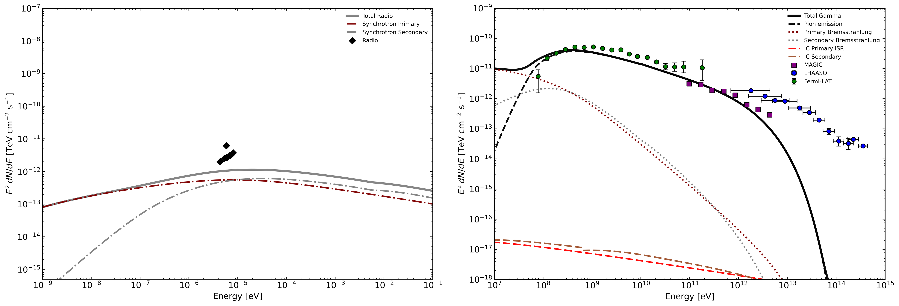
图注：Radio spectral energy distribution of the W51C-B region (left) and $\gamma$-ray spectral energy distribution of the interaction region (right). The $\gamma$-ray data are from \(\emph{Fermi-LAT},\) \(\emph{MAGIC},\) and \(\emph{LHAASO}.\) Radio flux measurements are extracted from the VLA THOR Galactic survey for the region encompassing the W51C-B interaction. This fit is attained by considering an SNR of age 18 kyrs interacting with the medium for $\sim 11$ kyrs. We consider a shock velocity of 360 km/s propagating into a medium of an initial ambient density $n_{0} = 20\, \text{cm}^{-3}$. A filling factor of 0.01 (1\%) and a Kolmogorov perturbation spectrum with $ k_T = 2/3$ is considered. The emission components include pion decay (thick black dashed line), as well as primary and secondary contributions from bremsstrahlung (dotted lines), inverse Compton scattering (dashed lines), and synchrotron radiation (dot–dashed lines).
对应解读：“建议重点查看的图表”第1、2、7项；“关键图表逐图导读”图2；模型拟合段落关于多仪器SED和激波—云模型在UHE端失败的讨论。
入选理由：这是最核心的多能段谱能量分布图，明确包含Fermi-LAT、MAGIC和LHAASO伽马射线数据，并展示相互作用区的辐射成分。它直接检验日报强调的关键结论：激波—云相互作用模型能否同时解释GeV、TeV和UHE数据，尤其是是否在LHAASO能段系统性不足。相比其他候选图，它最直接支撑全文主要模型比较和高能端失配判断。
来源与置信度：\(arxiv_source\)；high；\(arxiv_source\) / main.tex:figure[2]
Fig05
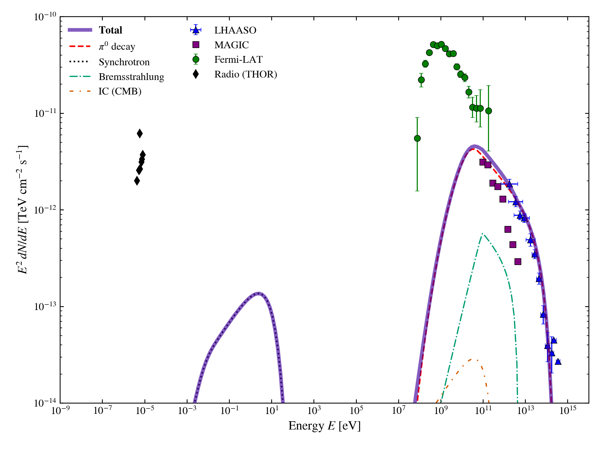
图注：Total emission from the W51B GMC resulting from the illumination scenario. The cloud is modeled with an average density of $n_{MC} = 105\, \mathrm{cm}^{-3}$ and a magnetic field strength of $B_{MC} = 7\, \mu\mathrm{G}$. The parameters of the injected particle spectrum are listed in Table~\(\ref{tab:Inj_Particle},\) with particles injected into the cloud over a duration of 420 years. The resulting emission spectrum is computed after evolving the particle population within the MC for 18 kyr.
对应解读：“建议重点查看的图表”第3、4、5项；“关键图表逐图导读”图4和图5；模型拟合段落关于照明模型、云内囚禁时间和历史注入粒子的讨论。
入选理由：该图展示W51B巨分子云在照明场景下的总辐射谱，并给出云密度、磁场、注入持续时间和18 kyr演化等关键物理设定。它是判断历史注入强子是否能自然解释LHAASO UHE谱、同时不超过低能数据约束的关键图，比单纯示意图更能支撑论文最重要的替代解释。
来源与置信度：\(arxiv_source\)；high；\(arxiv_source\) / main.tex:figure[5]
Fig04
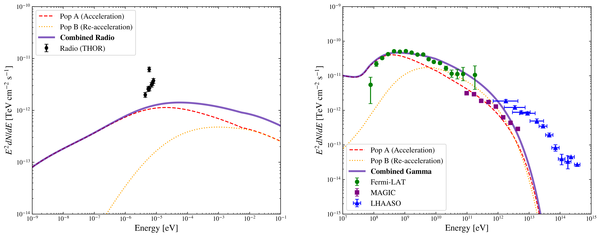
图注：Combined spectral energy distribution of the W51 SNR-MC interaction region. The total emission is modeled as the sum of two particle populations: (A) freshly accelerated particles at the interaction site (red dashed line; for details refer Fig. \ref{fig:Acc-CC-W51}), and (B) the per-existing Galactic CR population (yellow dotted lines; for details refer Fig. \ref{fig:Reacc-CC-W51}). Left: Radio emission. Right: $\gamma$-ray emission.
对应解读：“建议重点查看的图表”第2项；“关键图表逐图导读”图3；模型拟合段落关于新鲜加速粒子与既有银河宇宙线成分叠加的讨论。
入选理由：该图把相互作用区的总发射分解为新鲜加速粒子和预先存在的银河宇宙线成分，直接对应日报中要求检查的成分分解问题。它有助于判断GeV段拟合是否由物理合理的成分主导，以及多成分叠加为何仍难以延伸到UHE。
来源与置信度：\(arxiv_source\)；high；\(arxiv_source\) / main.tex:figure[4]
Fig03
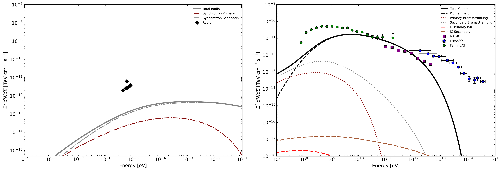
图注：Multiwavelength spectral energy distribution of the W51 region considering initial contributions from Galactic CR reacceleration and compression of MCs: radio emission (left) and $\gamma$-ray emission (right). The model adopts the same physical parameters as in the acceleration + compression case shown in the Fig \(\ref{fig:Acc-CC-W51},\) as both scenarios describe the same interaction region. The particle population is based on the Voyager 1 local interstellar spectra, following \(\citet{cardillo2016supernova}\) and as characterized by \(\citet{Potgieter2014_VoyagerLISM}.\)
对应解读：“建议重点查看的图表”第2项；“关键图表逐图导读”图3；模型拟合段落关于银河宇宙线再加速和分子云压缩成分的讨论。
入选理由：该图专门展示银河宇宙线再加速与分子云压缩初始贡献下的多波段SED，是理解激波—云模型中非新鲜加速成分的关键补充。它能帮助读者区分低能GeV拟合中各物理成分的作用，而不是只看总谱线。
来源与置信度：\(arxiv_source\)；high；\(arxiv_source\) / main.tex:figure[3]
Fig07
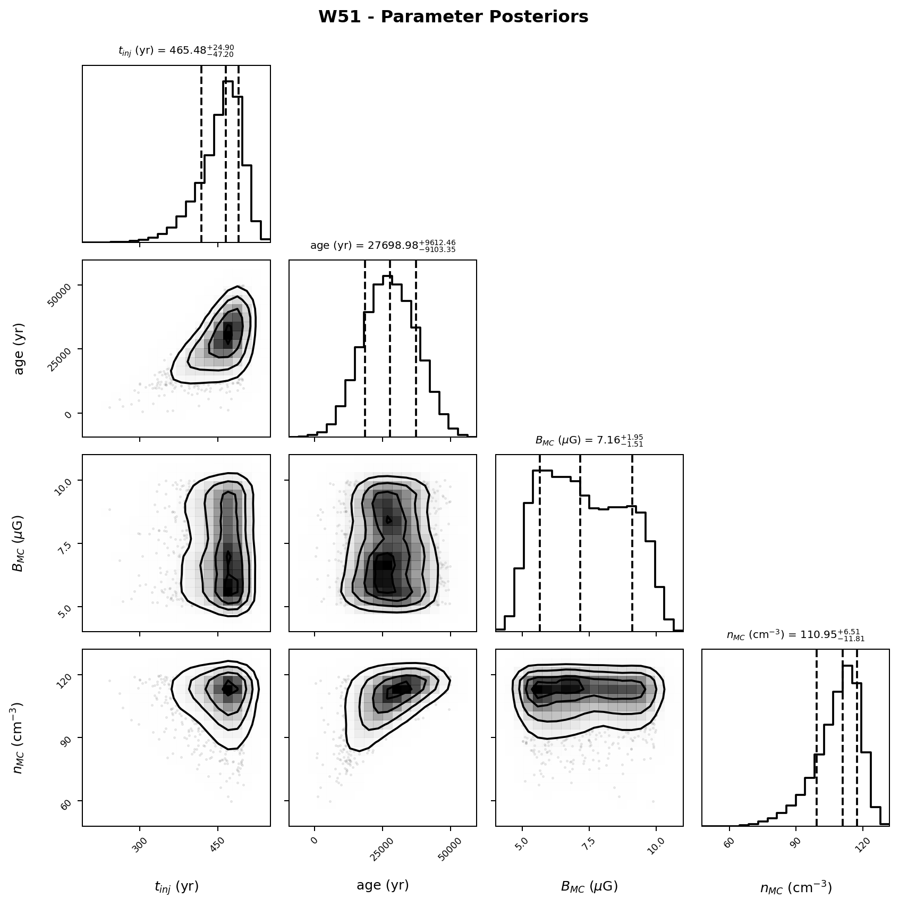
图注：Parameter Posteriors with a fixed injection spectrum into the MCs. The ranges well accommodate the values we obtain from our physically motivated fit.
对应解读：“建议重点查看的图表”第5项；“关键图表逐图导读”图5；模型拟合段落关于注入谱参数、物理参数范围和退化关系的讨论。
入选理由：该图给出固定注入谱下的参数后验分布，正好对应日报中要求检查参数合理性和退化性的部分。虽然候选说明未列出具体坐标轴参数，但它是唯一明确的参数后验/可信区间类图，对评估照明模型是否需要极端参数很重要。
来源与置信度：\(arxiv_source\)；high；\(arxiv_source\) / main.tex:figure[7]
Fig01
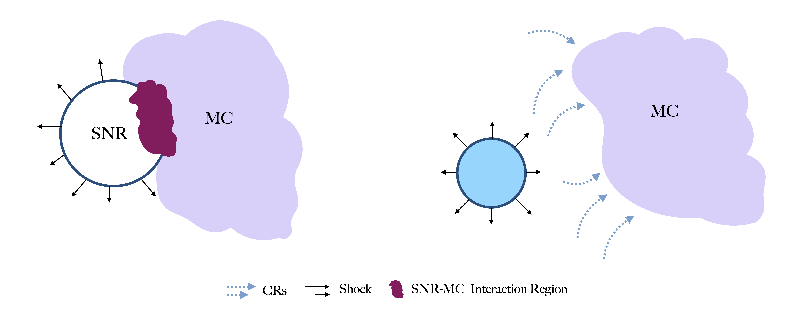
图注：Schematic of the two particle interaction scenarios considered for the W51 complex: direct interaction between the W51C SNR shock and the adjacent MC in W51B, resulting in shock compression within the interaction region (left); and past illumination, where CRs escaping from a nearby accelerator, for example a younger phase of W51C (illustrated by the blue circle), diffuse into the surrounding MC (right).
对应解读：“关键图表逐图导读”图1；详细解释中关于直接激波—云相互作用与历史照明两种物理图景的概念说明。
入选理由：该图是两种粒子相互作用场景的示意图，能帮助读者建立W51C激波、W51B分子云和过去逃逸宇宙线照明之间的几何与物理关系。它不是实际CO、红外或伽马射线空间模板，因此科学诊断价值低于SED和参数后验图，但适合作为模型框架的视觉入口。
来源与置信度：\(arxiv_source\)；high；\(arxiv_source\) / main.tex:figure[1]
强相关工作
这篇工作属于 W51C/W51 复合体强子伽马射线解释和银河 PeVatron 候选体研究的交叉。相似观测包括 Fermi-LAT 对 W51C 的 GeV 研究、MAGIC 和 H.E.S.S. 对 W51 的 TeV 探测，以及 LHAASO 银河源目录或相关 W51 复合体 UHE 报告。同一源背景应检索关键词“W51C Fermi LAT molecular cloud gamma rays”、“MAGIC W51C TeV”、“HESS W51 gamma ray”、“LHAASO W51 Complex UHE gamma ray”。同类源可比较 W44、IC 443、W28 等中年超新星遗迹照亮分子云案例，它们在 GeV–TeV 强子辐射方面很相似，但不一定都能延伸到 UHE。
在理论脉络上，本文与扩散激波加速、宇宙线逃逸后照亮邻近分子云、以及 PeVatron 识别标准相关。相反或存在张力的观点包括：UHE 发射可能来自脉冲星风云或未分辨恒星团源；GeV 与 UHE 可能不是同一物理区域；LHAASO 源的角分辨率和银河弥散背景建模可能导致源关联不唯一。检索关键词可用“cosmic ray illumination molecular clouds”、“runaway cosmic rays gamma-ray clouds”、“Galactic PeVatron molecular cloud confinement”、“hadronic gamma rays W51C”。
同一事件 / 同类源线索：
相似工作：
基础理论 / 方法工作：
- https://ui.adsabs.harvard.edu/abs/1978MNRAS.182..147B/abstract
- https://ui.adsabs.harvard.edu/abs/1983RPPh...46..973D/abstract
- https://arxiv.org/abs/astro-ph/0605585
相反观点 / 张力线索：
（未提供）
2. Joint X-ray and gamma-ray analysis at the photon level: Application to MSH 15-52
- 来源：arXiv / astro-ph.HE
- 链接：https://arxiv.org/abs/2607.29184v1
- 作者：Katharina Egg, Alison M. W. Mitchell
- 评分：novelty 8/10，importance 8/10，relevance 10/10，final 9.70/10
- 推荐理由：展示eROSITA、H.E.S.S.和Fermi数据在Gammapy中的光子级联合X射线/伽马射线分析，并应用于PWN MSH 15-52；方法可复用性强，直接服务伽马射线和MWL高能分析。
中文题目：Joint X-ray and gamma-ray analysis at the photon level: Application to MSH 15-52
做了什么：本文是一篇方法导向的高能天体物理论文，目标是在 Gammapy 中实现 eROSITA X 射线 3D 事件数据与 H.E.S.S. 伽马射线 3D 数据的联合分析，并以 PWN MSH 15-52 为测试对象。作者把 eROSITA 数据转换成 Gammapy 可读格式，先用 PyXspec/OGIP 与 Gammapy 1D/3D 拟合互相验证，再进行 eROSITA 单独 3D 分析和 eROSITA–H.E.S.S.–Fermi 的联合拟合演示。核心结论是：Gammapy 对 eROSITA 谱和背景的处理能与标准 X 射线流程一致，X 射线 3D 分析和跨波段事件级联合拟合在技术上可行。这篇论文的主要贡献是分析框架和验证链，而不是给出 MSH 15-52 的最终物理模型。
为什么重要：这篇论文重要之处在于推动了高能多波段分析从“派生通量点拼接”走向“计数/事件层前向折叠联合拟合”。对于扩展源和低计数数据，后者在统计上更自然，也更容易把响应、背景和空间形态的不确定度纳入同一框架。MSH 15-52 只是示例，但方法可推广到许多复杂高能源。若这条管线成熟，将显著改善 PWN 和其他非热源的跨波段参数约束，并为 CTA 时代的多仪器联合分析奠定软件与统计基础。
理论 / 观测 / 仪器方法价值：理论价值在于它为 PWN 的多波段粒子模型提供更一致的观测接口：同一电子族的同步辐射和逆康普顿辐射可以在更接近原始计数的层面被约束。观测价值在于减少由 flux-point 拼接带来的统计信息损失，使扩展源的空间、谱和背景不确定度能更完整地传播。仪器/软件价值尤其突出：它展示了 eROSITA 数据可被导入 Gammapy，与 H.E.S.S. 这类 Cherenkov 阵列数据在共同框架中分析，为未来 eROSITA、CTA、Fermi、H.E.S.S. 和其他 X 射线任务的联合研究铺路。
为什么应该关注：如果你研究 PWN、SNR、银河面扩展源或任何跨 X 射线—伽马射线的非热辐射源，这篇论文值得关注，因为它处理的是实际分析中最痛的环节：不同仪器、不同软件、不同统计对象之间如何联合。它不是简单多画几个 SED 点，而是把 X 射线事件数据带入 3D likelihood 框架，并用标准 X 射线工具交叉验证。对准备使用 Gammapy、eROSITA 或未来 CTA 数据的读者，它提供了一套可复用的思路和一组必须检查的诊断图。
展开详细解读：文章讲解、背景、理论、重点章节、图表与相关工作
文章详细讲解
本文要回答的主要不是“MSH 15-52 的最终物理模型是什么”，而是“能否把 eROSITA X 射线事件级数据转换进 Gammapy，并与 H.E.S.S. 三维伽马射线数据在同一框架中联合拟合”。这个问题对高能天体物理很实际：PWN、SNR、AGN jet、银河中心弥散辐射等对象都有跨波段、扩展源、复杂背景和响应卷积问题。若能在一个统计框架里处理 X 射线和伽马射线，就能减少手工拼接 SED 时的假设不一致。
方法链条可分为三步。第一步是 eROSITA 数据格式转换：从事件列表、曝光、响应、背景信息出发，构造 Gammapy 可识别的 3D 数据集。第二步是内部验证：用标准 X 射线工具 PyXspec 对 OGIP 光谱做吸收幂律拟合，再用 Gammapy 对同一类 OGIP 光谱、Gammapy 抽取的一维谱和完整 3D 数据集做对应拟合，比较最佳拟合谱形和 flux points。第三步是应用到 MSH 15-52：先做 eROSITA 单独 3D 分析，检查二维高斯或模板空间模型的拟合前后显著性图，再加入 H.E.S.S. 3D 数据和 Fermi 4FGL 目录通量点做联合约束。
关键结果之一是工具链验证。摘要明确指出，Gammapy 提取的一维 eROSITA 谱与 PyXspec 原生分析结果一致；Fig. 7 中不同处理路径下的吸收幂律最佳拟合模型和通量点应相互重叠到误差范围内。这说明至少对于本文测试的 MSH 15-52 数据、能段和区域选择，eROSITA 到 Gammapy 的响应与计数处理没有引入导致谱参数显著偏移的错误。Fig. 6 的背景拟合比较则进一步检查背景端是否在两个生态中保持一致。
关键结果之二是三维 X 射线分析可行。Fig. 8 给出二维高斯空间模型拟合前后的 significance map，读者应看拟合后残差是否从源位置附近的显著正残差变成随机分布，还是仍然保留条带、双峰、边缘结构等系统性形态。Fig. 9 把总计数、总模型、源模型、弥散背景和仪器/粒子背景分量分开显示，是判断背景模型是否主导谱形、源信号在哪些能段最有约束力、误差带是否合理的核心证据。
关键结果之三是跨波段联合拟合的演示。Fig. 12 把 eROSITA 与 H.E.S.S. counts maps 放在一起，并叠加联合拟合最佳区域和 H.E.S.S.-only 最佳区域。读图重点不是单纯比较哪个区域更大，而是看联合拟合是否因 X 射线高角分辨率或不同空间亮度分布而改变了 TeV-only 空间参数；如果两个区域明显不同，就提示多波段联合模型中“共同空间区域”或“共同粒子族”的假设需要谨慎解释。
局限也应明确。摘要没有声称本文完成了完整的时间依赖 PWN 输运建模，也没有说明联合拟合已经替代专门的 X 射线物理分析。eROSITA 与 H.E.S.S. 的能段、PSF、背景、曝光结构和系统误差差异很大，把它们放进同一框架只是第一步。下一步最需要加强的是：对跨仪器交叉归一化、背景模型自由度、空间模板选择、能量相关形态变化和物理粒子谱模型进行系统检验。
关键结果是怎么做出来的
第一条证据链是 eROSITA 数据进入 Gammapy 后能否复现标准 X 射线分析。论文用 MSH 15-52 的 eROSITA DR1 数据，比较了 PyXspec 中的 OGIP 光谱拟合、Gammapy 中的 OGIP 光谱拟合、Gammapy 从 3D 数据集中抽取的一维谱拟合，以及完整 3D 数据集上的模板拟合。摘要明确说 1D fits of Gammapy-extracted eROSITA spectra agree with PyXspec；Fig. 7 和对应参数表应是判断这一点的主要依据。阅读时要看参数的一致性是否包括 \(N_{\rm H}\)、光子指数、归一化和通量，而不只是曲线视觉上相似。
第二条证据链是背景处理。联合分析最容易失败的地方不是源模型，而是不同仪器背景的定义和传播。Fig. 6 比较 eROSITA DR1 背景在 PyXspec 与 Gammapy 中的拟合，Fig. 9 进一步把观测总计数与最佳拟合总模型分解为源、弥散背景和仪器/粒子背景。若论文表格中给出背景归一化或统计量，应检查这些参数是否在合理范围内、误差是否过大、是否与源谱参数强相关。这里的主结果不是“背景很小”，而是“背景可以在 Gammapy 框架中被显式建模或扣除，并与标准流程相容”。
第三条证据链是 eROSITA 的 3D 空间-谱拟合。论文展示了背景 subtraction 和 background modelling 两种模式下的 3D X 射线分析可行性，并用二维高斯空间模型以及模板模型检查 MSH 15-52 的延展形态。Fig. 8 的拟合前后 significance map 是模型是否捕捉主要 X 射线结构的直接诊断；Fig. 11 的双组分模板残差图则说明更复杂空间模型是否改善了单高斯的不足。这里应关注残差是否有空间相关性，而不是只看最佳拟合参数是否收敛。
第四条证据链是 X 射线与伽马射线的联合拟合。论文把 3D eROSITA 数据、3D H.E.S.S. 数据和 Fermi 4FGL 目录 flux points 结合起来。注意，摘要说的是 H.E.S.S. 为 3D 数据、Fermi 为目录通量点；因此“事件级联合”主要指 X 射线和 H.E.S.S. 的 3D 计数层联合，Fermi 信息在统计性质上仍是派生点。Fig. 12 中联合拟合区域与 H.E.S.S.-only 区域的比较，是判断加入 X 射线数据后空间约束如何变化的关键图。
统计检验方面，本文应主要依赖泊松型 3D 似然或 Cash/WStat 类统计量，而非简单 \(\chi^2\) flux-point 拟合。读者需要在结果表中核查每个模型的 fit statistic、自由参数个数和参数误差；若论文没有给出显著性提升的严格模型比较，就不要把双模板优于单高斯理解为强物理发现，而应理解为残差诊断提示的经验改进。对 H.E.S.S.-only 与联合拟合的差异，也应结合置信区间或误差椭圆，而不是只凭轮廓线颜色判断。
系统误差和稳健性是本文最需要细读的部分。eROSITA 的软 X 射线吸收、背景线、曝光不均匀和视场响应，H.E.S.S. 的能量阈值、PSF、背景估计和扩展源泄漏，Fermi 4FGL flux points 的目录假设，都会影响联合结果。论文目前的强结论应理解为“管线和框架可行，并通过了与标准工具的一致性验证”，而不是“MSH 15-52 的所有多波段物理参数已被唯一确定”。
展开背景、理论、公式、模型、章节和图表导读
背景知识
这篇论文的对象是脉冲星风云（PWN）MSH 15-52，也常与年轻脉冲星 PSR B1509-58 及周围复杂结构联系在一起。PWN 的基本图像是：快速自转、强磁场中子星把自转能以相对论性电子/正电子风的形式注入周围介质，粒子在终止激波附近被加速，并在磁场中产生 X 射线同步辐射，同时通过逆康普顿散射背景光场产生 GeV–TeV 伽马射线。MSH 15-52 因为在 X 射线和 TeV 波段都很亮、空间上延展且形态复杂，一直是研究 PWN 多波段形态和粒子输运的经典对象之一。
多波段 PWN 研究的传统做法常常是先用各个仪器自己的软件提取光谱点或通量点，再把这些派生量放进一个谱能量分布（SED）模型里拟合。这样做直观，但统计上会丢失信息：通量点已经包含某种谱假设、背景处理、能量重分布和有效面积校正，而且不同仪器之间的协方差、上限、低计数泊松性质不容易被正确传播。本文的核心动机就是把 X 射线和伽马射线数据尽量推回到“光子事件/计数 cube”层面，用共同的统计框架直接拟合观测计数，而不是只拟合二次加工后的 flux points。
本文的方法学背景也很重要。Gammapy 原本主要面向高能伽马射线分析，特别适合处理三维数据集：两个空间维度加一个能量维度，并通过暴露量、点扩散函数、能量弥散和背景模型预测每个 bin 的计数。eROSITA 则是 X 射线全天巡天仪器，其事件列表、曝光、响应矩阵、背景成分和 OGIP 光谱产品传统上更常用 X 射线生态中的工具处理，例如 XSPEC/PyXspec。论文尝试把 eROSITA 的 3D X 射线事件数据转换为 Gammapy 可读数据集，使 X 射线和 H.E.S.S. 伽马射线数据能在同一似然框架下联合建模。
一个常见误区是把“多波段联合拟合”理解为简单地把 X 射线点和伽马射线点画在同一张 SED 图上。本文真正推进的是联合到事件层或计数层：模型先通过物理谱形和空间模板生成源强分布，再经过每台仪器的响应函数变成预测计数，最后与真实计数比较。这样的做法原则上能更好地处理低计数区、扩展源形态、能量相关 PSF、背景不确定性和不同波段空间区域不完全一致的问题。
另一个需要避免的误解是：X 射线和伽马射线形态必须完全相同。对 PWN 而言，X 射线主要追踪高能电子在较强磁场中快速冷却的区域，TeV 伽马射线则可能追踪能量较低、寿命更长、扩散或平流到更大尺度的电子。因此同一粒子族并不意味着同一空间模板。本文的应用更偏向方法验证：展示 eROSITA、H.E.S.S. 和 Fermi 4FGL 信息能在 Gammapy 中协同使用；读者不应把一个简化空间模型的最佳拟合区域直接过度解释为完整的 PWN 输运物理结论。
基础理论 / 方法脉络
PWN 的辐射基础可以从单个相对论电子出发。电子在磁场中绕磁力线运动，会以同步辐射形式损失能量；同一批电子还会把 CMB、红外和星光光子逆康普顿散射到 GeV–TeV 能段。粗略地说，keV X 射线同步辐射需要非常高能的电子，并且冷却时间较短；TeV 逆康普顿辐射可来自稍低能或在弱磁区寿命更长的电子。因此，多波段拟合既可以约束电子能谱，也能约束磁场、辐射场和输运历史，但这些量之间存在强退化。
从观测角度，X 射线和伽马射线成像谱学都可以被写成同一个问题：给定天区坐标和真实能量上的源模型，经过仪器响应后预测探测器记录到的计数。响应通常包括有效面积、曝光、点扩散函数、能量弥散或响应矩阵，以及空间和能量相关的背景。本文利用这种形式上的统一性，把 eROSITA 事件数据整理为 Gammapy 的 MapDataset 或相近结构，从而能像处理 H.E.S.S. 数据一样处理 X 射线 cube。
论文中的谱模型验证重点是吸收幂律。X 射线中观测到的源谱常写为本征幂律乘以星际吸收项，吸收柱密度 \(N_{\rm H}\) 会显著影响软 X 射线端，而光子指数 \(\Gamma\) 控制谱斜率。PyXspec 与 Gammapy 对 OGIP 光谱和 3D 数据集的拟合若得到一致的 \(N_{\rm H}\)、\(\Gamma\) 与归一化，说明数据转换、响应调用和统计量实现没有产生明显偏差。Fig. 6 和 Fig. 7 正是这种交叉验证的关键图。
三维空间-谱联合拟合的基础统计图像是泊松计数似然。每个空间-能量 bin 里观测到的计数 \(n_i\) 与模型预测 \(\mu_i\) 比较，\(\mu_i\) 由源模型、弥散背景、粒子/仪器背景以及各自响应卷积组成。相对于先提取 flux points 再用 \(\chi^2\) 拟合，泊松似然能更自然地处理低计数、高背景和非高斯误差区间，也能让背景模型参数与源参数一起传播不确定度。
本论文还涉及空间模型选择。二维高斯模型是最简单的延展源描述，参数包括中心位置、宽度、椭率或方向角等；模板空间模型则可以利用已有图像或分量模板描述复杂结构，例如把 MSH 15-52 与邻近/相关结构分为两个空间分量。阅读时要注意，空间模型的改进不只看最佳拟合似然是否提高，还要看 residual/significance map 是否消除了结构性残差，以及新参数是否只是吸收了背景误差或响应不匹配。
公式与推导
可以把本文的方法从“天体源强到探测计数”的前向折叠推导来理解。首先设源在真实能量 \(E\) 和天球方向 \(\Omega\) 上的微分光子通量为
其中 \(\theta\) 表示谱参数、空间参数和可能的物理参数。本文在验证阶段使用的典型谱形是吸收幂律，X 射线观测通量可写为
其中 \(K\) 为归一化，\(\Gamma\) 为光子指数，\(N_{\rm H}\) 为氢柱密度，\(\sigma(E)\) 为光电吸收截面。这个式子解释了为什么软 X 射线端特别敏感于吸收和响应校准。
空间上，简单延展源常用二维高斯近似：
其中 \((x',y')\) 是相对源中心并旋转到主轴后的角坐标。若采用模板模型，则可写成
这里 \(T_k\) 是归一化空间模板，\(a_k\) 是各分量权重；Fig. 11 中的双组分模板就可按这种形式理解。
真实源通量并不会直接等于观测计数，而要经过仪器响应。对第 \(i\) 个空间-能量 bin，源预测计数可概括为
其中 \(R\) 包含 PSF 和能量弥散，\(A_{\rm eff}\) 是有效面积，\(T_{\rm exp}\) 是曝光。Gammapy 的 3D 数据集本质上就是在离散 bin 上实现这种前向折叠。
总预测计数还必须加入背景：
其中 \(m\) 可代表弥散天体背景、仪器背景、粒子背景等，\(\eta_m\) 是背景归一化或形状参数。Fig. 9 中红色观测总计数与紫色总模型的比较，以及蓝/橙/绿分量分解，正对应这个式子。
计数数据通常服从泊松分布：
等价地最小化 Cash 统计量
在低计数或背景主导 bin 中，这比对 flux points 做高斯 \(\chi^2\) 更稳健。
如果需要比较两个嵌套模型，例如单二维高斯与双模板模型，可以使用似然比统计量
其中 1 表示更复杂模型，0 表示基准模型。实际解释时要小心：空间模板边界、非负约束和系统误差可能使 Wilks 定理的简单 \(\sqrt{TS}\) 近似失效。
拟合后可用标准化残差或显著性图检查模型失败位置：
或者使用更适合泊松计数的 Li-Ma 型显著性。在残差图中，若 \(r_i\) 呈现空间相关结构，而不是近似零均值随机分布，就说明模型遗漏了源分量、背景结构或响应效应。
若把辐射物理与拟合谱形联系起来，电子能谱可写为
同步辐射和逆康普顿谱的斜率在简单冷却和 Thomson 极限下与 \(p\) 相关。近似地，同步特征频率满足
而逆康普顿光子能量在 Thomson 极限下为
这说明 X 射线与 TeV 伽马射线虽然可能来自同一电子族，但对电子能量、磁场和目标光场的权重不同，联合拟合时不应默认形态完全一致。
模型拟合 / 应用方法
本文拟合的基本观测量是空间-能量 bin 中的计数，而不是仅仅拟合最终的 SED 点。对 eROSITA，作者验证了 OGIP 光谱拟合、一维 Gammapy 谱拟合和 3D Gammapy 数据集拟合；对 H.E.S.S.，使用 3D 伽马射线数据；Fermi 4FGL 则以目录 flux points 的形式进入。拟合参数至少包括吸收幂律的 \(N_{\rm H}\)、光子指数和归一化，空间模型的中心、宽度或模板权重，以及背景模型的归一化/形状参数。
似然层面，应把它理解为各数据集统计量的联合最小化：eROSITA 和 H.E.S.S. 的 3D 计数部分使用泊松型 likelihood/Cash 统计，Fermi flux points 可能对应高斯或 profile likelihood 近似，具体要以论文实现为准。关键阅读点是哪些参数在 X 射线和伽马射线之间共享：如果共享同一个空间区域或谱模型，物理假设会更强；如果只是共同拟合但各自有独立谱形，方法学意义强于物理约束意义。
残差诊断是判断拟合是否可信的主线。Fig. 8 显示二维高斯拟合前后的 significance map，Fig. 11 显示双模板拟合后的 significance map，Fig. 9 显示能量维度上的计数分解。理想情况下，空间残差应没有成片正负结构，能量残差应没有连续偏离，源和背景误差带应能覆盖统计波动。如果残差在源边缘或某个能段系统偏高，说明模型遗漏了空间复杂性、能谱弯曲或背景结构。
主要退化包括：\(N_{\rm H}\) 与软 X 射线光子指数的退化，源归一化与背景归一化的退化，二维高斯宽度与总通量的退化，模板分量权重与局部背景的退化，以及 X 射线空间模板与 TeV 空间模板不一致导致的跨波段解释退化。对 PWN 而言，磁场强度、电子归一化和目标光场能量密度在物理 SED 模型中也会退化；本文若未进行完整物理粒子模型拟合，就不应从统计模板参数直接推出唯一磁场或电子能谱。
系统误差方面，eROSITA 的响应矩阵、有效面积校准、软 X 射线吸收模型、背景线和扫描曝光；H.E.S.S. 的能量阈值、PSF、背景估计、扩展源区域泄漏；Fermi 4FGL 的源混叠和目录谱假设，都可能改变联合拟合结果。稳健性检验应包括改变能段、空间 ROI、背景自由度、空间模板、能量 binning 和交叉归一化设置，看关键参数和残差结构是否稳定。
模型可能失败的典型表现有三类。第一，PyXspec 与 Gammapy 的同一 OGIP 光谱参数不一致，说明转换或响应调用有问题。第二，3D 拟合后 significance map 仍有显著相干残差，说明空间模型或背景模型不足。第三，联合拟合区域相对单仪器拟合大幅偏移但没有统计误差或物理解释支持，说明共享参数假设可能过强。读者应把这些诊断作为复现或扩展本文管线时的检查清单。
重点章节 / 结果段落怎么读
-
Introduction/Scientific motivation：重点读作者如何界定“photon/event-level joint analysis”相对于传统 SED flux-point fitting 的优势。尤其要找他们是否明确区分了 eROSITA、H.E.S.S. 3D 事件级数据和 Fermi 4FGL 目录通量点的统计性质。
-
eROSITA-to-Gammapy pipeline：这是方法核心。阅读时要跟踪事件列表、空间 binning、能量 binning、曝光、响应、背景、OGIP 产品和 Gammapy Dataset 之间如何映射。任何单位转换、能量边界、区域选择和响应插值都是潜在系统误差来源。
-
Validation against PyXspec：这一节决定论文可信度。应把 Fig. 6、Fig. 7 和参数表一起读，检查 PyXspec 与 Gammapy 在背景、吸收幂律参数和 flux points 上是否一致；若只给出视觉比较，要在心里降低结论强度。
-
3D eROSITA analysis of MSH 15-52：重点看二维高斯和模板空间模型、背景 subtraction 与 background modelling 的差异，以及 Fig. 8、Fig. 9、Fig. 11 的残差诊断。这里是从一维谱验证进入真正三维成像谱分析的过渡。
-
Joint eROSITA–H.E.S.S.–Fermi analysis：这一节要读清联合似然如何构造，各数据集哪些参数共享、哪些参数独立，Fermi flux points 如何并入，以及 H.E.S.S.-only 与 joint fit 的最佳区域为何不同。Fig. 12 和模型参数表应联合阅读。
-
Discussion/Outlook：关注作者承认的限制，例如背景系统误差、复杂空间形态、跨仪器交叉校准、物理模型简化和未来推广到其他 PWN 或扩展源的条件。对方法论文而言，限制段往往比结论段更能告诉读者如何复用这条管线。
建议重点查看的图表
-
数据转换与响应验证图：优先看 OGIP 光谱、ARF/RMF 或等效响应处理是否在 PyXspec 与 Gammapy 中给出一致结果。Fig. 7 属于核心验证图，应检查不同分析路径的吸收幂律曲线和 flux points 是否在误差范围内一致。
-
背景拟合图：Fig. 6 和 Fig. 9 需要重点看背景成分。检查源模型、弥散背景、仪器/粒子背景在能量上的相对贡献，特别是高能端或软 X 射线端是否由背景主导；若背景误差带很宽，源谱参数的可信度也会受限。
-
拟合前后 significance/residual map：Fig. 8 和 Fig. 11 是空间模型诊断。应看拟合后残差是否接近零均值随机噪声，还是在 PWN 边缘、RCW 89 附近或视场结构处留下相干残差。相干残差通常意味着空间模板、背景或 PSF 描述不足。
-
空间模型比较图：二维高斯、单模板和双组分 TemplateSpatialModel 的结果要一起读。注意最佳拟合中心、尺度、方向、区域轮廓的变化，以及这些变化是否有明确物理解释，还是只是模型自由度增加后的经验改善。
-
联合 X 射线/伽马射线 counts map：Fig. 12 是联合分析的代表图。应检查 eROSITA 与 H.E.S.S. 的计数分布是否空间对应，联合拟合区域和 H.E.S.S.-only 区域之间的偏移或尺度差异是否超过各自 PSF 与统计误差可解释的范围。
-
光谱能量分布或 flux point 对比：若正文有联合 SED 图，应检查 Fermi 4FGL flux points 与 H.E.S.S.、eROSITA 模型是否在同一谱模型下连续，是否需要谱断裂或多个电子群；同时注意 Fermi 点是目录派生量，不是本文完全事件级联合的一部分。
-
参数表与统计量表：检查各模型的最佳拟合参数、不确定度、统计量差异、自由参数个数和可能的交叉归一化参数。不要只看曲线重合，要确认统计改进是否相对于新增自由度仍然有意义。
关键图表逐图导读
图 6：这是 eROSITA DR1 背景拟合在 PyXspec 与 Gammapy 中的比较图。读者应先看横轴是否为能量、纵轴是否为计数或计数率，并确认两套工具对背景谱形的峰、边、连续谱和归一化是否一致。关键陷阱是：源谱拟合的一致性可能只是因为源很亮；只有背景模型也一致，才能说明数据转换和响应处理在背景主导能段没有明显偏差。
图 7：这是论文方法验证的中心图，比较 PyXspec OGIP、Gammapy OGIP、Gammapy 从 3D 数据集抽取的一维谱，以及 3D template 模型的吸收幂律拟合结果。坐标轴通常应理解为能量与通量或模型通量，图中多条最佳拟合曲线和 flux points 应在误差范围内重合。读图时要特别看软 X 射线端，因为那里受 \(N_{\rm H}\)、响应和背景影响最大；还要看高能端误差是否变大，避免把低统计尾端的重合过度解释为高精度验证。
图 8：这是使用二维高斯空间模型进行 3D 拟合前后的 significance map。上图拟合前应显示源区域的显著信号，下图拟合后叠加最佳拟合区域并显示残差显著性。若残差在源中心和边缘都接近随机噪声，说明单高斯已经抓住主要形态；若残差仍有双峰或偏置，说明 MSH 15-52 的形态比单高斯复杂，后续模板模型是必要的。
图 9：这是计数谱分解图。红色总计数与紫色最佳拟合总计数的贴合程度是总体拟合质量的第一检查；蓝色源模型、橙色弥散背景、绿色仪器/粒子背景显示不同能段的主导成分。陷阱在于：如果某些能段总模型看似吻合，但源和背景分量之间交叉很强，那么源谱参数可能高度依赖背景先验或背景形状设定。
图 11：这是双组分 TemplateSpatialModel 拟合后的 significance map。它应与图 8 的单高斯残差图对照阅读：双模板是否真正去除了结构性残差？残差是否只是在模板边界或背景不均匀处被重新分配？如果残差仍集中在某些物理结构附近，说明还需要能量相关模板或更多分量，而不仅是静态空间模板。
图 12：这是联合分析最直观的图，展示 eROSITA 和 H.E.S.S. 的 counts maps，并叠加联合拟合最佳区域和 H.E.S.S.-only 最佳区域。读图时要分别考虑两台仪器的角分辨率、能段和背景；联合区域与 H.E.S.S.-only 区域的差异可能来自真实的多波段形态差异，也可能来自模型把 X 射线强约束投射到 TeV 模型上的结果。不要在没有参数表和残差图支持的情况下，把轮廓变化直接等同于物理边界变化。
论文原图 / 可嵌入图片
Fig07
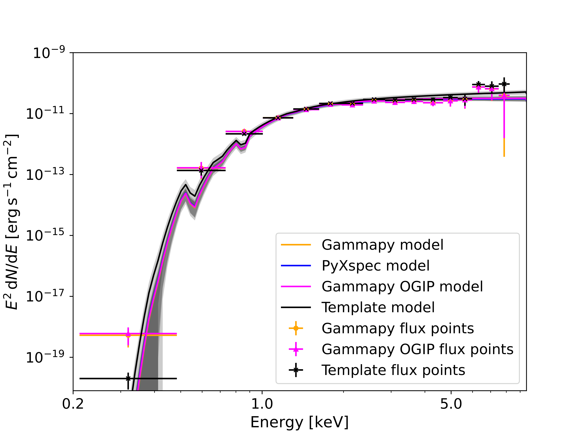
图注：Comparison between absorbed power-law fits using OGIP spectra (in PyXspec), OGIP spectra (in Gammapy), 1D spectra from Gammapy 3D datasets, and 3D datasets using template models on DR1 data. All spectral best-fit models and flux points are shown, see Table \(\ref{tab:validation}\) for fit parameters.
对应解读：对应“建议重点查看的图表”中的模型比较与拟合验证；也对应模型拟合段落中对 PyXspec、Gammapy 1D/3D 分析一致性的检查。
入选理由：该图直接比较 PyXspec OGIP、Gammapy OGIP、Gammapy 3D 提取谱和 3D template 模型得到的吸收幂律最佳拟合与流量点，是验证论文核心方法——在 Gammapy 中进行 eROSITA 3D/1D X 射线分析——是否可靠的关键图。
来源与置信度：\(arxiv_source\)；high；\(arxiv_source\) / aa60153-26.tex:figure[7]
Fig12
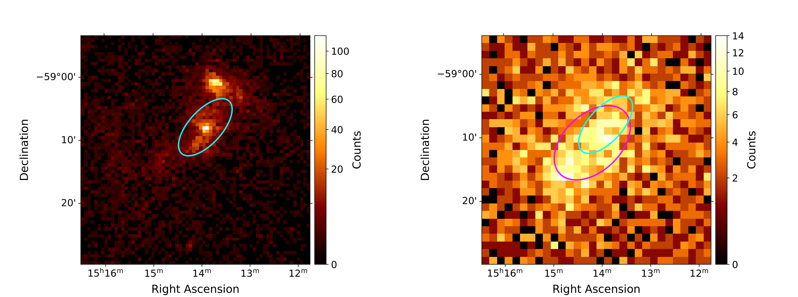
图注：Counts maps of MSH\,15-52 in eROSITA (top) and H.E.S.S. (bottom) with the best-fit region of the joint fit in cyan and the best-fit region of the H.E.S.S.-only fit in magenta.
对应解读：对应联合 X 射线与伽马射线事例级分析的核心结果图表；重点查看 eROSITA 与 H.E.S.S. 计数图、联合拟合区域和 H.E.S.S.-only 拟合区域的差异。
入选理由：论文最重要的科学展示是 eROSITA 3D 数据与 H.E.S.S. 3D 数据的联合拟合。该图同时给出 X 射线和 TeV 伽马射线计数图，并叠加联合拟合与单独 H.E.S.S. 拟合区域，最能体现多波段事例级联合分析带来的空间约束变化。
来源与置信度：\(arxiv_source\)；high；\(arxiv_source\) / aa60153-26.tex:figure[12]
Fig08
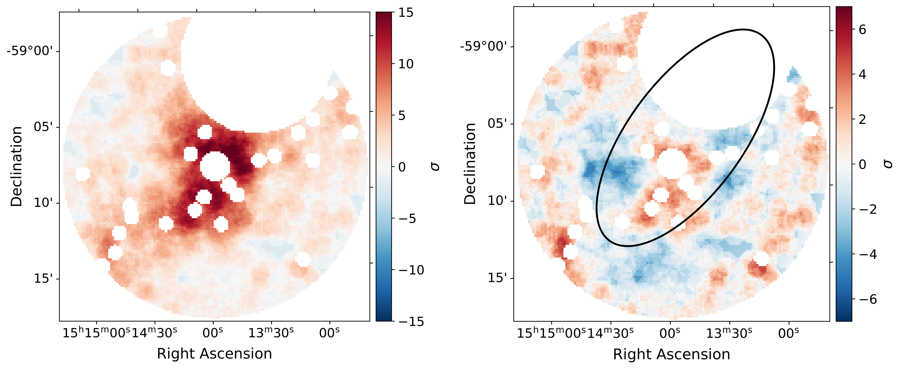
图注：Significance map of MSH\,15-52 before (top) and after (bottom) the 3D fit with a 2D Gaussian spatial model, with the best-fit region overlaid on the residual map (bottom).
对应解读：对应“建议重点查看的图表”中的残差诊断和 3D 空间模型拟合；重点看拟合前后 significance map 以及残差图上的最佳拟合区域。
入选理由：该图展示使用二维高斯空间模型进行 3D 拟合前后的显著性图，是判断单组分空间模型是否充分、残差是否仍有结构的主要诊断图，对理解后续是否需要更复杂模板模型非常关键。
来源与置信度：\(arxiv_source\)；high；\(arxiv_source\) / aa60153-26.tex:figure[8]
Fig09
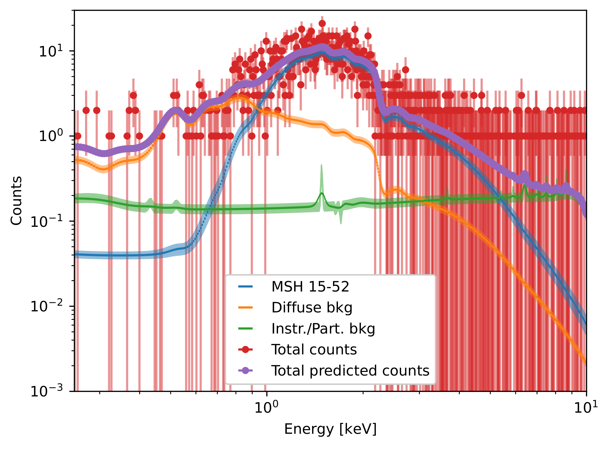
图注：Spectrum of the total counts (red) and total counts predicted by the best-fit model (purple). The source model (blue), diffuse background (orange), and instrumental and particle background (green) components that make up the total predicted counts are also shown. Transparent error bands on the individual model components are shown.
对应解读：对应模型拟合段落中的谱模型分解、背景建模和误差带检查；重点看总计数、最佳拟合总模型、源模型、弥散背景与仪器/粒子背景分量。
入选理由：该图把观测总计数与最佳拟合预测总计数放在一起，并分解为源、弥散背景和仪器/粒子背景，还给出模型分量误差带，是评估背景建模、源谱提取和拟合质量的核心图。
来源与置信度：\(arxiv_source\)；high；\(arxiv_source\) / aa60153-26.tex:figure[9]
Fig06
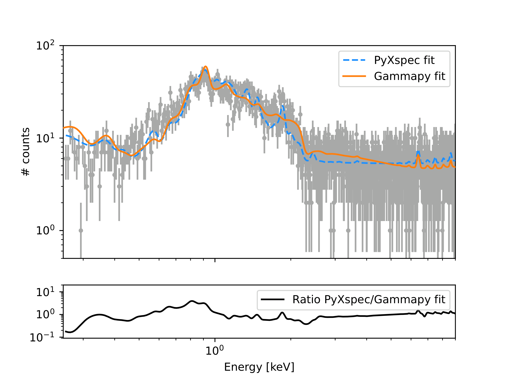
图注：eROSITA DR1 background fits conducted in PyXspec and Gammapy.
对应解读：对应模型拟合与系统误差检查中的背景拟合验证；重点比较 PyXspec 与 Gammapy 对 eROSITA DR1 背景的拟合一致性。
入选理由：联合分析能否可信依赖于 X 射线背景处理。该图直接比较标准 X 射线工具 PyXspec 与 Gammapy 的背景拟合结果，是论文方法学验证中仅次于源谱比较的重要证据。
来源与置信度：\(arxiv_source\)；high；\(arxiv_source\) / aa60153-26.tex:figure[6]
Fig11
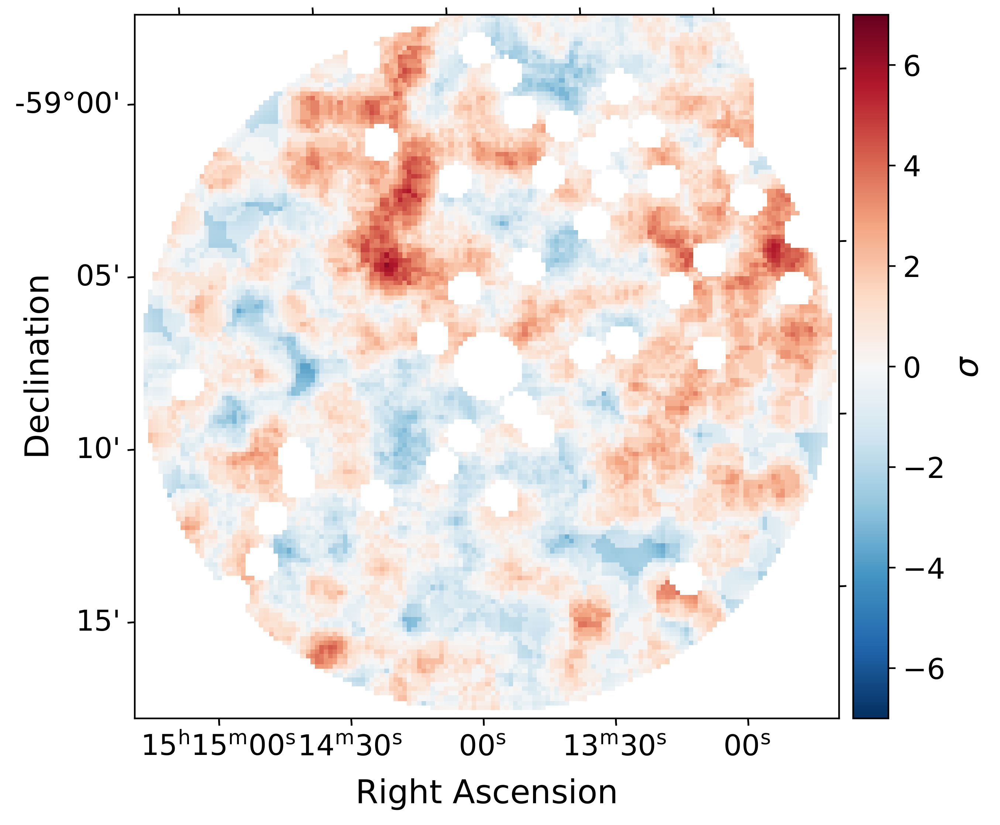
图注：Significance map after the fit with a two-component \(\texttt{TemplateSpatialModel}.\)
对应解读：对应关键图表中的残差诊断和空间模板模型检验；重点查看双组分 TemplateSpatialModel 拟合后的 significance map。
入选理由：该图展示采用 MSH 15-52 与 RCW 89 双组分模板空间模型后的显著性残差，可用于判断更物理或更复杂的空间模板是否改善了单高斯模型残差，是理解 3D 空间建模选择的重要补充。
来源与置信度：\(arxiv_source\)；high；\(arxiv_source\) / aa60153-26.tex:figure[11]
强相关工作
同源/同事件背景方面，MSH 15-52、PSR B1509-58、RCW 89 和 HESS J1514-591 是检索这篇论文上下文的关键名称。应查找同源的 Chandra、XMM-Newton、eROSITA、H.E.S.S.、Fermi-LAT 研究，以及针对 PSR B1509-58/MSH 15-52 的 PWN 形态、谱能量分布和 TeV 发现论文。可靠检索入口包括 arXiv 搜索“MSH 15-52 HESS J1514-591 PWN”、“PSR B1509-58 Chandra PWN”、“MSH 15-52 Fermi LAT”，NASA ADS 的对象名检索，以及 H.E.S.S. Collaboration 的源页面或论文列表。
同类工作方面，应查找 PWN 多波段联合建模论文，特别是把 X 射线同步辐射和 GeV–TeV 逆康普顿辐射放进同一电子族模型的研究。Crab Nebula、Vela X、HESS J1825-137、G21.5-0.9、G0.9+0.1 等都是原型或历史类比对象。它们提供了 PWN 中粒子冷却、能量相关形态和多区模型的常见问题，也能帮助判断 MSH 15-52 是否适合单区或单模板描述。
方法学基础方面，应检索 Gammapy 的核心软件论文、H.E.S.S. 3D likelihood 分析示例、XSPEC/OGIP 光谱标准、eROSITA DR1 数据处理文档，以及多仪器联合似然分析的统计论文。可用的公开入口包括 https://gammapy.org/ 、https://arxiv.org/ 搜索“Gammapy paper”、NASA HEASARC/XSPEC 文档页面、eROSITA DR1 官方数据发布页面，以及 Fermi-LAT 4FGL 目录页面。若需要链接，优先使用 arXiv、ADS、官方软件文档和合作组页面，不要依赖非正式博客。
潜在张力线索主要有三类：第一，传统 flux-point SED 拟合与事件级 likelihood 拟合在参数不确定度上的差异；第二，X 射线与 TeV 形态不一致时，共享空间模型是否物理合理；第三，不同背景处理方式对扩展源通量和大小的影响。检索关键词可以包括“joint likelihood multiwavelength PWN”, “event-level analysis X-ray gamma-ray”, “Gammapy X-ray eROSITA”, “PWN energy dependent morphology”。
同一事件 / 同类源线索：
（未提供）
相似工作：
（未提供）
基础理论 / 方法工作：
（未提供）
相反观点 / 张力线索：
（未提供）
3. Deep Learning-Based Classification and Analysis of Pulsar Candidates in Fermi-LAT Unassociated Sources
- 来源：arXiv / astro-ph.HE
- 链接：https://arxiv.org/abs/2607.28723v1
- 作者：C. Pozo González, R. López-Coto, J. Méndez-Gallego, E. de Oña Wilhelm
- 评分：novelty 7/10，importance 8/10，relevance 10/10，final 9.40/10
- 推荐理由：针对4FGL未关联源的1D-CNN分类，给出高置信伽马射线脉冲星候选并区分年轻脉冲星/MSP，直接服务Fermi-LAT源识别和后续多波段跟踪，相关性很高。
中文题目：用一维卷积网络在 Fermi-LAT 未关联源中筛选脉冲星候选体
做了什么：这篇文章针对第四版 Fermi-LAT 源表中仍未关联的伽马射线源，训练了一个分层深度学习分类器 TabularResCNN：第一步区分活动星系核和脉冲星，第二步把脉冲星再分成年轻脉冲星和毫秒脉冲星。它的核心改进不是简单把源表参数当成彼此独立的表格特征，而是把谱能量分布当成有顺序结构的一维序列来处理，同时加入变源性信息，并刻意不使用银经、银纬作为训练特征以降低空间先验偏置。作者把模型应用于 2563 个未关联源，给出 1136 个活动星系核候选和 202 个高置信脉冲星候选，其中 166 个为年轻脉冲星候选、36 个为毫秒脉冲星候选；这些候选体在事后空间分布上呈现合理的天体物理图像：年轻脉冲星集中在银道面，毫秒脉冲星垂向分布更宽，活动星系核近似各向同性。
为什么重要：Fermi-LAT 的未关联源一直是寻找新伽马射线脉冲星、毫秒脉冲星和潜在暗弱源族的重要样本，但传统分类常被银河坐标、训练样本不平衡和源表特征工程所影响。本文重要之处在于尝试从谱形和变源性本身提取判别信息，尤其是利用一维卷积捕捉谱能量分布相邻能段之间的拓扑关系。这对后续射电、X 射线和计时搜索很实用，因为它给出了一个可按优先级跟进的候选清单，而不是只给出总体分类准确率。
理论 / 观测 / 仪器方法价值：对观测而言，这项工作提供了一个可直接用于 FAST、MeerKAT、SKA 先导阵列、X 射线成像和盲搜计时的目标排序方案。对方法而言，它展示了如何在不显式输入天球位置的情况下，仍能恢复符合物理预期的源族空间分布，从而检验模型是否学到了谱和时域特征而非坐标捷径。对理论和源族统计而言，202 个高置信脉冲星候选如果有相当比例被确认，将明显影响伽马射线脉冲星的光度函数、银河系电子正负电子源预算和未解析伽马射线背景的族群分解。
为什么应该关注：如果你关心 Fermi 未关联源、伽马射线脉冲星普查、机器学习在源表天文学中的可解释性，或者需要为有限的射电/X 射线望远镜时间挑选目标，这篇文章值得看。它的结果不能等同于发现了 202 颗脉冲星，但它把“哪些未关联源最像脉冲星、像哪一类脉冲星、模型为什么这么判”这个问题推进到更可操作的层面。尤其值得关注的是，模型找回了 5 个近期由 FAST 证认的脉冲星，这提供了一个独立的、虽小但很有说服力的 sanity check。
展开详细解读：文章讲解、背景、理论、重点章节、图表与相关工作
文章详细讲解
科学问题：Fermi-LAT 源表已经积累了大量高能伽马射线源，但第四版源表中仍有约三分之一未能与已知天体对应。这些未关联源中既有活动星系核，也可能有大量银河系脉冲星、毫秒脉冲星、脉冲星风云、超新星遗迹相关源，以及少数更特殊的候选体。问题的难点在于，许多源的光子数不高，直接做脉冲周期搜索代价很大；而源表层面的分类如果过度依赖银道坐标，又容易把“在银道面附近”误当成“是年轻脉冲星”的证据。
作者怎么做：本文构建了一个名为 TabularResCNN 的分层一维卷积神经网络。它把 4FGL 目录中的谱能量分布点视为按能量排序的一维序列，让卷积核学习谱形的局部连续结构，例如低能段到高能段的弯曲、截断和能量通量峰值位置。训练策略分两级：第一级在活动星系核与脉冲星之间分类，第二级只在被判为脉冲星的对象中区分年轻脉冲星和毫秒脉冲星。作者还采用 cost-sensitive learning 处理训练集中活动星系核数量远多于脉冲星的问题，并用 Grad-CAM 检查模型在谱能量分布哪些区段上作出判断。
关键结果：应用到 2563 个未关联 4FGL 源后，模型给出 1136 个活动星系核候选和 202 个高置信脉冲星候选，其中 166 个被分为年轻脉冲星候选，36 个被分为毫秒脉冲星候选。作者强调训练没有使用银河坐标，但分类后的空间分布仍然符合天体物理预期：年轻脉冲星更贴近银道面，毫秒脉冲星有更厚的银河盘分布，活动星系核候选则更接近各向同性。这个结果说明模型并非完全依赖隐含位置偏置，而是在谱形和变源性上捕捉到可迁移的判别信息。另一个重要检验是，近期由 FAST 确认的 5 个相关脉冲星全部被模型识别为脉冲星类候选。
局限和下一步：机器学习分类给出的是候选概率而不是源的物理确认。对于靠近银道面的弱源，弥散背景建模误差、源混叠、能谱点不确定度以及 4FGL 目录构建中的选择效应都可能影响输入特征。年轻脉冲星和毫秒脉冲星之间也可能存在谱形重叠，特别是低显著性源的谱曲率和变源性指标更不稳健。下一步最关键的是用独立观测验证候选清单：射电脉冲搜索、X 射线点源定位、伽马射线盲搜计时，以及在更新版 Fermi 源表上重新训练和交叉验证模型。
关键结果是怎么做出来的
本文最重要的证据链从样本构建开始。训练集来自 4FGL 中已经有关联或分类的源，目标应用集是 2563 个未关联源。作者刻意不把银河坐标作为训练特征，这一点对结果解释很关键，因为脉冲星与活动星系核在天球分布上的差异极强，如果直接输入坐标，分类器很容易获得表面上很高的准确率，却无法证明它学到了源的谱和时域物理。输入特征的核心是按能量 bin 排列的谱能量分布以及变源性相关指标。
分类流程采用两级模型比较而不是一次性三分类。第一级判断一个源更像活动星系核还是脉冲星；第二级对脉冲星候选再区分年轻脉冲星和毫秒脉冲星。这种层次化设计符合类别结构：活动星系核与脉冲星的物理差异通常大于年轻脉冲星与毫秒脉冲星的差异。它也有利于处理训练样本不平衡，因为源表中活动星系核数量大得多，而脉冲星尤其是某些子类的样本量有限。
最终应用结果是 1136 个活动星系核候选和 202 个高置信脉冲星候选，其中年轻脉冲星候选 166 个、毫秒脉冲星候选 36 个。这里“高置信”需要读者回到论文中检查概率阈值、验证集性能、混淆矩阵和校准曲线：如果概率未经充分校准，数值上的分类置信度不应直接解释为真实天体类别的后验概率。支撑结论的关键图表通常包括训练/验证性能曲线、混淆矩阵、接收者操作特征曲线或 precision-recall 曲线、未关联源分类概率分布、以及三类候选体的天球分布。
显著性或可信度并不是传统天体物理论文中“多少 sigma 检测”的形式，而是监督学习中的泛化性能和候选概率。应重点看作者如何划分训练、验证和测试集，是否避免同一源族或同一目录版本中的信息泄漏，是否对类别不平衡采用加权损失，是否报告了召回率、精确率和误报率。对于脉冲星候选而言，误报率比总体准确率更重要，因为后续跟进观测的成本由假阳性数量主导。
稳健性方面，本文最有说服力的检查之一是事后空间分布：没有用坐标训练，却恢复了年轻脉冲星贴近银道面、毫秒脉冲星更厚盘、活动星系核近似各向同性的分布。此外，5 个近期由 FAST 确认的脉冲星均被识别为脉冲星候选，这是一个独立外部验证，尽管样本数只有 5，不能单独证明总体性能。系统误差主要来自 4FGL 谱点的统计误差和系统误差、银河弥散模型、源混叠、训练集中已知脉冲星的选择偏差，以及活动星系核中低变源性子类可能与脉冲星谱形相似。
展开背景、理论、公式、模型、章节和图表导读
背景知识
Fermi-LAT 自 2008 年运行以来，把 GeV 天空从少数明亮源扩展到数千个源。4FGL 目录的源数很大，但未关联源仍然占显著比例。所谓“未关联”不是没有探测到源，而是伽马射线源的位置误差椭圆和多波段候选体之间还没有足够证据建立物理对应。对高能天文学来说，这些未关联源既是麻烦，也是资源：它们可能包含新的脉冲星、双星系统、暗弱活动星系核，甚至是更少见的源类。
伽马射线脉冲星是 Fermi 的标志性成果之一。年轻脉冲星通常与恒星形成区、超新星遗迹和银道面相关，年龄较小、磁场较强、自转能损失率较高；毫秒脉冲星则是经过双星吸积再加速的老年中子星，分布更厚，常出现在银道高纬或球状星团中。在伽马射线能谱上，脉冲星常呈现有曲率的谱形和高能截断，而许多活动星系核则更接近幂律或弯曲幂律，并且变源性通常更强。
历史上，Fermi 未关联源分类已经大量使用机器学习方法，包括决策树、随机森林、支持向量机、梯度提升树和浅层神经网络。这些方法通常把谱指数、曲率显著性、变源指数、不同能段通量等看成表格特征。问题在于，谱能量分布本身有天然的能量顺序：相邻能段的通量变化、谱峰位置和高能衰减形状不是彼此独立的标量。把它们完全拆开，可能损失谱形拓扑信息。
为什么现在值得重新看？一方面，4FGL 的时间基线更长，弱源的平均谱和变源性测量更好；另一方面，一维卷积网络已经在时间序列、光谱和医学信号中证明适合捕捉局部形状特征。对于 Fermi 源表，深度模型不一定需要大规模图像输入，也可以在源表级别利用谱序列结构。更重要的是，FAST、MeerKAT 和未来 SKA 的脉冲星搜索能力很强，但望远镜时间有限，需要可靠的候选排序。
该领域常见误区包括：第一，把机器学习候选当成已确认源，这在天文学上是不成立的；第二，只看总体准确率而忽略类别不平衡，活动星系核多得多时，一个偏向多数类的模型也能有不错准确率；第三，把高银纬脉冲星候选自动理解为毫秒脉冲星，实际上高纬也可能有活动星系核或统计涨落；第四，忽视目录输入特征本身来自复杂的似然拟合，源表参数并不是无偏、独立、同方差的实验测量。
基础理论 / 方法脉络
从物理图像看，Fermi-LAT 测到的是来自天空不同方向和能量的伽马射线光子。源分类依赖两个层面的信息：一是能谱形状，即光子通量或能量通量随能量的变化；二是时间行为，即源是否显著变亮变暗。脉冲星的 GeV 辐射通常来自磁层中的相对论粒子加速和曲率辐射，谱形常有明显曲率和高能截断；活动星系核的 GeV 辐射多来自喷流中的非热电子或强子过程，谱形和变源性更受喷流状态影响。
4FGL 目录为每个源给出若干能段的谱能量分布点、整体谱模型参数、探测显著性、变源性指标和关联信息。传统表格模型会把每个能段通量、谱指数、曲率指标等作为独立列输入。本文的关键假设是，谱能量分布的能量排序携带额外信息：如果一个源在中等 GeV 能区达到能量通量峰值并在高能端下降，这种局部形状比单个能段通量更能提示脉冲星性质。
一维卷积网络的物理直觉是用可训练滤波器在能量序列上滑动，寻找局部谱形模式。不同卷积核可以响应不同特征，例如软谱、硬谱、高能截断、谱峰位置或某种相邻能段的弯曲。残差连接则缓解深层网络训练中的梯度退化，使模型既能利用低层局部谱形，也能组合出更全局的分类特征。TabularResCNN 的名字反映了这种混合：输入仍来自源表，但模型结构按序列而非普通表格处理谱信息。
观测统计上，需要注意源表特征不是理想测量。弱源的谱能量分布点常有大误差或上限，银河面附近背景强且结构复杂，弥散模型误差会影响谱曲率和变源指数。活动星系核与脉冲星的分类还存在退化：低变源、弯曲谱的 blazar 可能像脉冲星；弱毫秒脉冲星在谱点稀疏时也可能像非变源活动星系核。本文通过不使用坐标、类别加权和可解释性热图来缓解这些问题，但无法完全消除它们。
从数据分析逻辑看，模型输出的是类别概率或分类分数。这个分数是给定训练集、特征选择、网络结构和损失函数后的判别量，不自动等同于真实天体类别的贝叶斯后验。要把它用于观测排队，还需要考虑候选源的定位误差、射电消色散搜索可行性、X 射线 counterpart 是否存在、银河背景复杂度，以及在不同概率阈值下的假阳性成本。
公式与推导
可以从 LAT 对光子计数的基本关系开始。对某一源，能量区间 \([E_1,E_2]\) 内的期望计数近似为
其中 \(T\) 是曝光时间，\(A_{\rm eff}(E,\theta)\) 是有效面积，\(\theta\) 表示入射角，\(\phi(E)\) 是源的微分光子通量，\(\mu_{\rm bkg}\) 是背景期望计数。4FGL 的谱点和整体谱参数都来自类似的泊松似然拟合。
源表中常用的谱能量分布可写成能量通量形式
其中 \(S_i\) 是第 \(i\) 个能段的能量通量。本文的一维卷积输入可以理解为序列 \(\mathbf{x}=(S_1,S_2,\ldots,S_N,V,\ldots)\)，其中 \(V\) 代表变源性或其他非谱特征；关键在于 \(S_i\) 的顺序不能任意打乱。
脉冲星常用的经验谱形是带指数截断的幂律，物理上对应磁层辐射的曲率和高能衰减：
其中 \(K\) 是归一化，\(E_0\) 是参考能量，\(\Gamma\) 是低能光子指数，\(E_c\) 是截断能量，\(b\) 控制截断形状。卷积网络并不显式拟合这个公式，但其滤波器可学习类似“先上升或平缓、后截断”的谱形模式。
活动星系核在源表中常可用幂律或弯曲谱近似，例如对数抛物线
其中 \(E_b\) 是标度能量，\(\alpha\) 是局部谱指数，\(\beta\) 表示曲率。若 \(\beta\) 较小且源有显著变源性，它与典型脉冲星的区分相对容易；若 \(\beta\) 较大且变源性弱，就会成为分类退化来源。
一维卷积层对谱序列的基本操作可写成
其中 \(h_{j,k}\) 是第 \(k\) 个卷积核在位置 \(j\) 的响应，\(M\) 是卷积核宽度，\(w_{k,m}\) 是权重，\(b_k\) 是偏置，\(\sigma\) 是非线性激活函数。这个式子说明模型比较的是相邻能段组合，而非单独某个 \(S_i\)。
残差块通常可抽象为
其中 \(\mathbf{z}_{\ell}\) 是第 \(\ell\) 层特征，\(F\) 是若干卷积、归一化和激活组成的变换，\(\mathbf{W}_{\ell}\) 是该块参数。残差连接使网络可以在需要时近似恒等映射，从而稳定训练并保留浅层谱形信息。
类别不平衡可通过加权交叉熵表示：
其中 \(N_{\rm src}\) 是训练源数，\(C\) 是类别数，\(y_{n,c}\) 是真实标签的 one-hot 编码，\(p_{n,c}\) 是模型输出概率，\(w_c\) 是类别权重。较大的 \(w_c\) 可以提高少数类脉冲星在损失函数中的影响。
模型输出概率来自 softmax：
其中 \(a_{n,c}\) 是分类头给出的 logit。候选筛选时通常设定阈值 \(p_{n,{\rm PSR}}>p_{\rm th}\)，但 \(p_{n,c}\) 是否校准为真实概率，需要额外用可靠性图或校准误差检验。
分类性能可用精确率和召回率检查：
其中 \(N_{\rm TP}\)、\(N_{\rm FP}\)、\(N_{\rm FN}\) 分别是真阳性、假阳性和假阴性数量。对于后续观测，\(P\) 控制候选清单纯度，\(R\) 控制漏掉真实脉冲星的风险。
可解释性 Grad-CAM 的一维版本可概括为
其中 \(G_j\) 表示能量位置 \(j\) 对类别 \(c\) 的贡献热度，\(Z\) 是归一化因子。若脉冲星判别热区集中在谱曲率和高能截断相关能段，就比只在噪声能段或缺失值模式上激活更可信。
模型拟合 / 应用方法
本文的“拟合”不是传统意义上对单个源做物理谱模型拟合，而是对已标记源样本训练一个判别模型。被拟合的参数是卷积核权重、残差块权重和分类头权重；拟合目标是最小化带类别权重的分类损失。输入量主要来自 4FGL 的谱能量分布和变源性特征，输出量是活动星系核、脉冲星、年轻脉冲星和毫秒脉冲星相关的分类概率或分数。
参数估计的关键在训练/验证/测试划分。读者应检查作者是否采用了独立测试集、交叉验证或重复随机划分，以及各类别在划分中的比例是否保持一致。对于类别不平衡，单纯 accuracy 不够，应更重视 precision、recall、\(F_1\) 分数、ROC-AUC、PR-AUC 和混淆矩阵。尤其在未关联源应用中，脉冲星候选的假阳性率必须足够低，否则 202 个候选中会混入大量低变源活动星系核。
退化关系主要有三类。第一是谱形退化：某些低变源活动星系核的弯曲谱可能接近脉冲星的截断谱。第二是测量退化：弱源的谱能量分布点误差较大，模型可能学习到信噪比或缺失值模式，而非真实物理谱形。第三是选择效应退化：训练集中已确认脉冲星往往是较亮、较容易被射电或伽马计时确认的对象，未关联源中的真实脉冲星可能更暗、更受背景污染，分布不一定与训练集完全一致。
残差诊断在这类论文中应理解为模型误差诊断，而非光谱拟合残差。应看哪些已知脉冲星被错分为活动星系核、哪些已知活动星系核被错分为脉冲星，它们是否集中在低显著性、强背景、低纬或特殊谱型区域。若误分类源集中在某些能量通量缺失模式或某一目录质量标志上，就提示模型可能受系统误差驱动。Grad-CAM 可帮助检查分类依据是否落在物理上合理的能段。
实际应用时，候选概率应与多波段可观测性联合使用。一个高概率年轻脉冲星候选若位于复杂银道面且定位误差大，射电搜索和 X 射线 counterpart 识别仍可能困难；一个高概率毫秒脉冲星候选若在高银纬且有低变源、弯曲 GeV 谱，则可能非常适合深射电脉冲搜索。模型可能失败的情形包括：目录背景模型更新后谱点改变、未关联源实际是混合源、源在长期平均下被洗平了短时变源性、或训练集没有覆盖某些稀有源类。
重点章节 / 结果段落怎么读
数据/样本部分应优先看作者如何从 4FGL 选取已关联训练源和 2563 个未关联应用源。关键问题是哪些类别被纳入活动星系核、脉冲星、年轻脉冲星和毫秒脉冲星标签，是否排除了不确定分类，如何处理缺失谱点、上限和低显著性能段，以及训练集中各类别数量是否严重不平衡。
方法部分应重点读 TabularResCNN 的输入张量定义和网络结构。需要确认一维卷积确实沿能量维度操作，而不是把所有表格列任意排列后卷积；还要看残差块、池化、全连接层和变源性特征如何合并。cost-sensitive learning 的权重设定也很重要，因为它直接影响脉冲星候选的召回率和纯度。
验证部分应看混淆矩阵、ROC 曲线、precision-recall 曲线和概率阈值选择。对天文后续观测而言，最关键的不是模型总体准确率，而是在给定脉冲星候选阈值下的假阳性率和漏检率。若论文提供与传统决策树或其他机器学习方法的对比，应检查改进是否主要来自谱序列卷积，而不是数据清洗、阈值或类别权重差异。
结果部分应看未关联源分类清单：1136 个活动星系核候选、202 个高置信脉冲星候选、其中 166 个年轻脉冲星候选和 36 个毫秒脉冲星候选。读者应检查候选概率分布是否双峰明显，还是大量源堆在阈值附近；还应查看候选体在银河坐标中的事后分布，以判断结果是否符合源族天体物理预期。
讨论和稳健性检验部分应关注两点：一是作者如何解释模型没有使用坐标却恢复空间分布；二是 Grad-CAM 是否显示模型关注谱曲率、高能截断或变源性等物理特征。FAST 确认的 5 个脉冲星全部被识别为脉冲星候选，是值得重点阅读的外部验证段落，但也要注意样本量太小，不能替代大样本后续证认。
建议重点查看的图表
-
样本类别数量图或表：看训练集中活动星系核、年轻脉冲星、毫秒脉冲星数量比例，以及未关联源 2563 个样本的筛选条件。类别不平衡会决定损失权重和误报风险。
-
网络结构示意图：看谱能量分布是否按能量顺序进入一维卷积层，变源性特征在哪里并入，层次化分类的两个阶段如何连接。
-
混淆矩阵：重点看已知脉冲星被错分为活动星系核的比例，以及活动星系核被错分为脉冲星的比例。后者决定候选清单纯度。
-
ROC 曲线和 precision-recall 曲线：类别不平衡时 PR 曲线比 ROC 曲线更有实际意义。应检查高召回区间是否伴随不可接受的假阳性增加。
-
未关联源分类概率分布：看 202 个高置信脉冲星候选是否远离阈值，年轻脉冲星与毫秒脉冲星的概率是否有清晰分离。
-
天球或银河坐标分布图：训练未用坐标，因此事后分布是物理合理性检验。年轻脉冲星候选应集中银道面，毫秒脉冲星候选应更厚盘，活动星系核候选应较各向同性。
-
Grad-CAM 热图：看模型对脉冲星判别最敏感的能段是否对应谱曲率或高能截断，而不是缺失值、低信噪比尾端或目录系统误差。
-
候选清单表：检查每个候选的 4FGL 名称、分类概率、源显著性、变源指数、谱曲率和可能的多波段 counterpart，判断哪些最适合后续观测。
关键图表逐图导读
图 1：如果论文给出样本流程或类别统计图，横轴通常是源类别或样本子集，纵轴是源数量。读图时不要只看总数，要看活动星系核与脉冲星的比例是否悬殊，以及年轻脉冲星和毫秒脉冲星在训练集中是否足够多。若少数类样本太少，模型在第二级分类中的不确定性会明显上升。
图 2：网络结构图通常显示谱能量分布序列进入一维卷积和残差块，再与变源性或其他表格特征合并，最后进入分类头。关键是确认卷积方向对应能量轴，而不是任意特征轴；如果变源性特征在后端合并，说明谱形学习和时域判别在模型中有一定分工。
图 3：混淆矩阵的横轴和纵轴分别是真实类别与预测类别，或反过来，颜色表示归一化比例或源数。读图陷阱是被多数类主导：活动星系核格子的颜色很深不代表模型对脉冲星也好。应重点看脉冲星行/列中的漏检和误报，特别是年轻脉冲星与毫秒脉冲星之间的互相混淆。
图 4：ROC 或 precision-recall 曲线展示阈值变化下的分类性能。ROC 曲线的横轴是假阳性率，纵轴是真阳性率；PR 曲线的横轴是召回率，纵轴是精确率。对于脉冲星候选筛选，PR 曲线更接近实际问题，因为真实脉冲星是少数类。若高召回只在低精确率下实现，后续观测成本会很高。
图 5：未关联源概率分布图通常以分类概率为横轴、源数为纵轴，可能分活动星系核、年轻脉冲星、毫秒脉冲星三类显示。重点看候选是否集中在高概率端，阈值附近是否有大量边界源。边界源不应被过度解读，适合列为次优先级目标或等待更多数据。
图 6：银河坐标分布图的横轴通常是银经，纵轴是银纬，点的颜色或形状表示预测类别。由于模型没有使用坐标，这张图是独立物理检查。年轻脉冲星候选若明显沿 \(b=0^\circ\) 聚集，是合理信号；但也要注意银道面背景复杂，低纬假阳性风险同样更高。
图 7：Grad-CAM 或特征重要性图通常以能量 bin 为横轴、贡献强度为纵轴或颜色。脉冲星分类若在中高能谱曲率和截断附近响应强，解释较可信；若主要响应最低能背景主导区、最高能低计数区或缺失值位置，则需警惕模型学到的是目录系统特征。
论文原图 / 可嵌入图片
Fig02
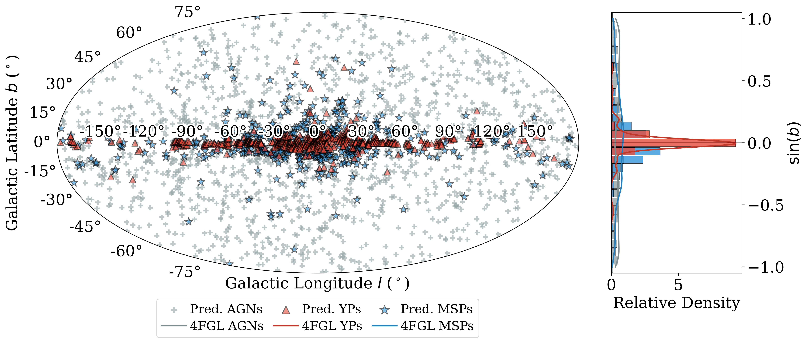
图注：Spatial distribution of classified candidates. Left: Sky map in Galactic coordinates. Right: Marginal histogram of $\sin(b)$ solid and the 4FGL dashed. Note the tight confinement of Young PSRs to the plane versus the broader distribution of MSPs.
对应解读：建议重点查看的图表第 6 项；关键图表逐图导读图 6；详细解读中“训练未用银河坐标但候选空间分布符合预期”的物理一致性检验。
入选理由：这张图直接给出银河坐标天区分布和 sin(b) 边缘分布，能检验年轻脉冲星候选是否贴近银道面、毫秒脉冲星是否更厚盘、以及分类结果是否在未使用坐标的情况下仍符合天体物理预期，是支撑论文核心结论的最关键图。
来源与置信度：\(arxiv_source\)；high；\(arxiv_source\) / main.tex:figure[2]
Fig04
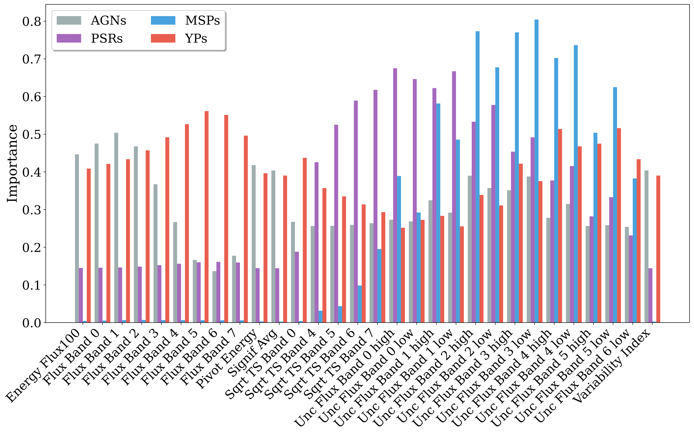
图注：Average Grad-CAM feature importance for Stage 1 and 2
对应解读：建议重点查看的图表第 7 项；关键图表逐图导读图 7；模型拟合段落中关于 Grad-CAM、系统误差和模型是否学习物理谱形的诊断。
入选理由：该图展示 Stage 1 和 Stage 2 的平均 Grad-CAM 特征重要性，可判断模型判别是否集中在物理上合理的谱能量区段，而不是缺失值、低信噪比尾端或目录系统特征；对解释深度学习分类可信度非常重要。
来源与置信度：\(arxiv_source\)；high；\(arxiv_source\) / main.tex:figure[4]
Fig05
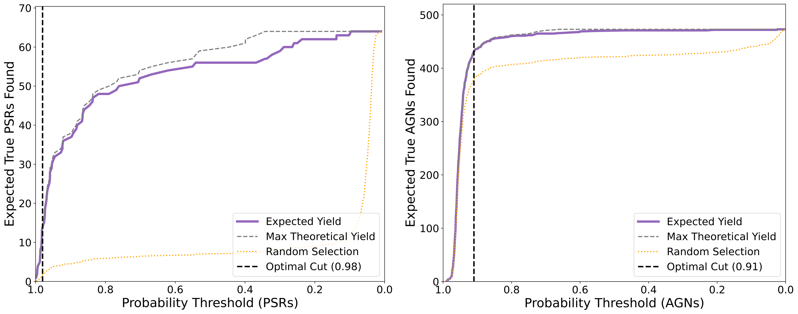
图注：Observational efficiency (expected yield) as a function of the sweeping probability threshold for the unassociated \(\textit{Fermi}-LAT\) dataset. The solid purple line represents the model's expected discovery yield, the grey dashed line illustrates the theoretical maximum yield of the dataset, and the dotted orange line represents the baseline random selection. The vertical dashed black lines mark our physically motivated operational cuts: $P_{PSRs} = 0.96$ and $P_{AGNs} = 0.86$.
对应解读：建议重点查看的图表第 5 项和第 4 项的阈值/候选纯度讨论；模型拟合段落中关于假阳性率、候选概率阈值和后续观测效率的讨论。
入选理由：虽然不是标准 ROC 或 PR 曲线，但它直接展示未关联源样本中随概率阈值变化的预期发现效率，并标出 \(P_PSRs=0.96\) 和 \(P_AGNs=0.86\) 的操作性截断，对理解 202 个高置信脉冲星候选如何定义、以及观测资源投入的收益最有帮助。
来源与置信度：\(arxiv_source\)；high；\(arxiv_source\) / main.tex:figure[5]
Fig06
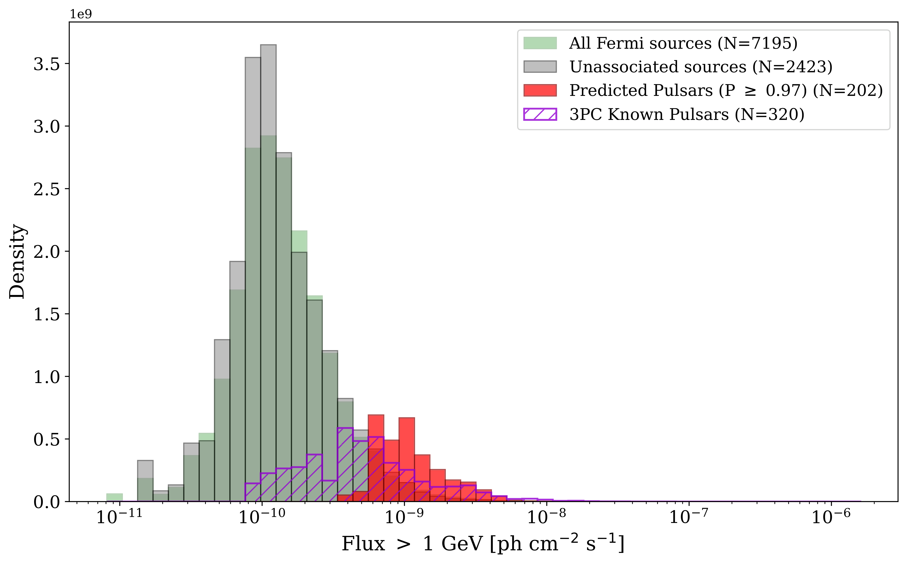
图注：Density distribution of the gamma-ray flux ($> 1 \text{ GeV}$) for different source populations within the \(\textit{Fermi}-LAT\) catalog. The histogram compares all Fermi sources (green, $N=7195$), unassociated sources (grey, $N=2423$), our high-confidence predicted pulsar sample ($P \ge 0.97$, red, $N=202$), and known PSRs from the 3PC catalog (hatched purple, $N=320$). The predicted candidates generally exhibit higher fluxes than the bulk of the unassociated sources, closely matching the typical flux distribution of confirmed 3PC PSRs.
对应解读：候选清单与物理一致性验证；详细解读中关于高置信脉冲星候选是否具有类似已知 3PC 脉冲星的观测性质。
入选理由：该图比较高置信预测脉冲星、未关联源、全部 Fermi 源和已知 3PC 脉冲星的 >1 GeV 伽马射线通量分布，可检验候选样本是否只是弱源噪声或是否接近已确认脉冲星的通量范围，是空间分布和 Grad-CAM 之外的重要外部合理性检查。
来源与置信度：\(arxiv_source\)；high；\(arxiv_source\) / main.tex:figure[6]
Fig03
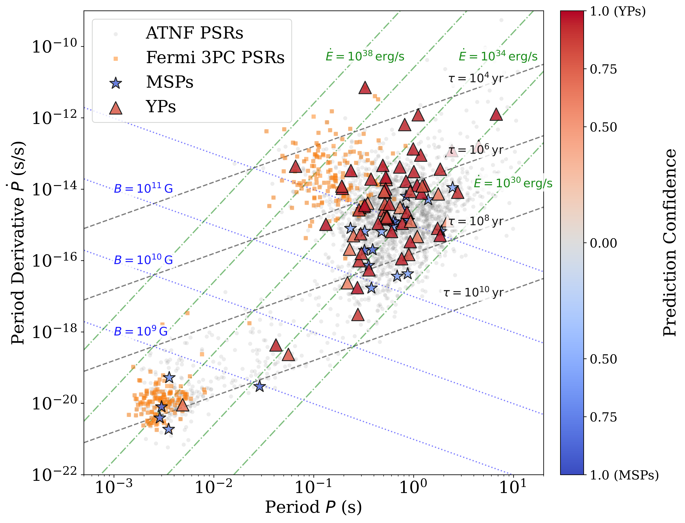
图注：Pulsar candidates for which we have a cross-match with ATNF PSRs in the diagram $P - \dot{P}$. Sources classified by our model as PSRs with $P_{PSRs}>0.46$ in stage 1 and successfully cross-matched with the ATNF Pulsar Catalogue are shown. YPs are represented by triangles, while MSPs are indicated by star symbols. Marker colors encode the classification confidence assigned by the network. The background grey distribution corresponds to the full ATNF pulsar population, and gamma-ray PSRs from the Third \(\textit{Fermi}-LAT\) Catalog of Gamma-ray PSRs (3PC) are also displayed with orange triangles, for reference. Although timing parameters were not used during training, the model naturally recovers the two distinct physical populations in the plane, demonstrating that it implicitly captures underlying pulsar evolutionary properties.
对应解读：详细解读中关于模型能区分年轻脉冲星和毫秒脉冲星、并与已知脉冲星族群物理性质一致的验证。
入选理由：P-\dot{P} 图并非日报最优先列出的图表类型，但它利用 ATNF 交叉匹配显示模型分类出的 YP 和 MSP 落在不同演化族群区域，且训练未使用计时参数，因此可作为层次化分类结果的独立物理检验。
来源与置信度：\(arxiv_source\)；high；\(arxiv_source\) / main.tex:figure[3]
强相关工作
这项工作属于 Fermi 未关联源机器学习分类这一脉络。早期研究已经用随机森林、逻辑回归、支持向量机、神经网络和决策树从源表参数中区分活动星系核、脉冲星和其他类别。本文与这些工作的主要区别在于把谱能量分布当作有序序列，并强调不使用银河坐标来避免空间捷径。检索时可用关键词 “Fermi unassociated sources machine learning pulsar candidates random forest neural network”、“4FGL unassociated source classification”和“gamma-ray pulsar candidates machine learning”。
它也与 Fermi-LAT 脉冲星目录和射电脉冲搜索工作直接相关。若本文候选清单被后续 FAST、MeerKAT 或 SKA 先导观测证认，将对伽马射线脉冲星光度函数和银河毫秒脉冲星族群估计产生影响。相反观点或需要警惕的方向是：机器学习候选可能受目录选择效应、银河弥散背景和训练标签偏置影响；因此应检索 “Fermi diffuse background systematics unassociated sources”、“classification bias gamma-ray source catalogs”和“probability calibration astronomical machine learning”。
同一事件意义不适用，因为本文不是单个瞬变或单一源论文；它涉及的是 4FGL 未关联源这一目录样本和伽马射线脉冲星/活动星系核两大源族。可靠的上下文应从 4FGL 目录、Fermi-LAT 仪器论文、Fermi 脉冲星目录以及相关机器学习分类论文进入。
同一事件 / 同类源线索：
- https://arxiv.org/abs/2607.28723
- https://arxiv.org/abs/1902.10045
- https://arxiv.org/abs/0902.1089
- https://arxiv.org/abs/1305.4385
相似工作：
基础理论 / 方法工作：
相反观点 / 张力线索：
（未提供）
4. Polar cap plasma loading and the morphology of pulsar $γ$-ray light curves
- 来源：arXiv / astro-ph.HE
- 链接：https://arxiv.org/abs/2607.29126v1
- 作者：Jérôme Pétri
- 评分：novelty 7/10，importance 7/10，relevance 10/10，final 9.05/10
- 推荐理由：围绕Fermi-LAT伽马射线脉冲星光变曲线形态，提出电流片发射和极帽等离子体加载的参数化图谱；对高能脉冲星辐射模型和LAT样本解释很相关。
中文题目：极帽等离子体加载与脉冲星伽马射线光变曲线形态
做了什么：这篇论文用条纹风电流片而不是纯磁层缝隙辐射来解释费米望远镜看到的多样化伽马射线脉冲星光变曲线。作者采用解析的 split-monopole 电流片几何，把高能辐射主要放在电流片上，并引入少量描述等离子体加载导致的南北不对称、方位角不对称和空间发射率变化的参数，生成一套伽马射线光变曲线图谱。核心结论是：即使不引入复杂的逐源磁层结构，只要允许电流片发射率不对称，就能自然产生非对称双峰、多峰和精细结构脉冲轮廓，说明极帽 pair plasma loading 可能是控制观测形态的重要物理自由度。
为什么重要：费米已经发现三百多个伽马射线脉冲星，但它们的峰数、峰间距、桥辐射、峰强比和相位偏移差异很大，传统外磁层模型往往需要较多几何和发射区调节。本文的重要性在于把这种形态多样性转化为一个更物理的问题：脉冲星两极注入到风区电流片的等离子体是否对称，以及这种加载如何改变电流片的有效发射率。
理论 / 观测 / 仪器方法价值：对理论而言，文章提供了一个低参数量的条纹风光变曲线图谱，可作为连接磁层 pair cascade、风区重联和观测脉冲轮廓的中间模型。对观测而言，它给出了从光变曲线峰形反推发射率南北不对称、方位角调制和视线几何的思路。对方法而言，它强调用解析电流片几何和参数化 emissivity 快速扫描形态空间，比全局粒子模拟更适合做大样本解释和先验构建。
为什么应该关注：如果你关心伽马射线脉冲星的辐射区位置、pair multiplicity、磁层到风区的能量耗散，或者想用 Fermi-LAT 光变曲线约束脉冲星几何，这篇文章值得看。它不只是多画了一组模型光变曲线，而是在问：观测到的复杂脉冲形态是否已经在告诉我们极帽注入的正负电荷和 pair plasma 在两半球、不同磁经度上并不均匀。
展开详细解读：文章讲解、背景、理论、重点章节、图表与相关工作
文章详细讲解
科学问题：费米时代的伽马射线脉冲星样本显示出非常丰富的光变曲线形态，包括近似对称双峰、强弱不等的双峰、宽桥辐射、多峰结构、窄尖峰和相位偏移很大的射电脉冲—伽马脉冲组合。经典极帽、slot gap、outer gap 或 force-free 外磁层图像都能解释一部分现象，但要同时覆盖大量形态常常需要较复杂的发射区假设。本文把问题重新表述为：如果伽马射线主要来自光圆柱外的条纹风电流片，那么极帽向风区加载的 pair plasma 是否会通过改变电流片发射率来塑造这些形态。
作者怎么做：论文采用 split-monopole 风的解析电流片几何。这种几何牺牲了近星区真实偶极磁场细节，但在光圆柱外可以很好地刻画旋转磁偶极产生的条纹结构和电流片摆动。作者假定高能光子主要从电流片附近发出，并用少数空间相关发射率参数来描述南北半球不对称、方位角不对称以及沿电流片不同区域的亮度变化。这些参数被解释为极帽 pair plasma loading 或电流片局域耗散效率变化的表征，而不是任意的数学调制。
关键结果：模型能够产生一套很宽的光变曲线图谱。通过改变磁倾角、观测视角和发射率不对称参数，可以得到常见的双峰轮廓，也可以得到峰强明显不等、桥辐射增强、多峰或高度结构化的轮廓。关键物理信息是：对称电流片主要给出较规则、镜像性较强的光变曲线；一旦南北或方位角 emissivity 被打破，许多费米脉冲星中常见的峰强比和局部子峰就可自然出现。也就是说，形态复杂性未必要求每颗脉冲星都有完全不同的辐射机制，可能只是等离子体加载和耗散分布不同。
局限和下一步：本文是几何—发射率参数化模型，不是自洽的全球 PIC 或辐射 MHD 计算。发射率参数虽然有物理动机，但尚未从 pair cascade、极帽电流闭合和电流片重联的微观过程直接推导出来。因此下一步应把图谱与 Fermi-LAT 真实光变曲线做系统拟合，联合射电极化、X 射线脉冲、能谱 cutoff 和年龄、磁场、spin-down luminosity 等源参数检验发射率不对称是否有可观测相关性。更进一步，需要把 polar-cap pair loading 的三维模拟结果映射到风区电流片 emissivity。
关键结果是怎么做出来的
本文的主要证据链不是从单个源的最佳拟合开始，而是从一套解析电流片模型出发，构建可以覆盖观测形态空间的光变曲线 atlas。样本意义上的参照对象是 Fermi-LAT 已发现的三百多个伽马射线脉冲星，论文试图解释的是整个样本中峰数、峰强比、桥辐射和不对称结构的多样性，而非报告某个新探测事件。因此，读者应把它看成一个理论图谱和形态学模型比较工作。
数据或模型选择方面，作者选择 split-monopole current sheet 作为发射面。关键输入量包括磁倾角、视线倾角、旋转相位、发射半径范围以及 emissivity 的南北和方位角调制参数。每一组参数生成一个按脉冲相位折叠的模型光变曲线，再比较它是否能产生类似费米伽马射线脉冲星中常见的形态类型。这里的“事件数”对应的不是光子计数，而是参数空间中不同几何和加载组合产生的光变曲线族。
显著性或置信度在这类 atlas 论文中通常不是以某个源的 likelihood ratio 给出，而是以形态覆盖能力和参数经济性来体现。文章的论证重点是：在对称 emissivity 下可得到的轮廓类型相对受限；加入少数不对称参数后，模型能系统地产生非对称、多峰和细结构轮廓。这相当于一种模型比较：同一电流片几何下，是否需要破缺发射率对称性才能进入观测所需的形态区域。
支撑结论的图表应主要是光变曲线图谱、不同几何角度下的相位—强度图，以及改变 emissivity 参数前后的对比图。读者应特别检查峰间距、主峰与次峰强度比、桥辐射水平、低谷是否归零、以及同一参数变化是否会同时改变峰宽和峰相位。如果论文给出二维 sky map 或 caustic map，还要看 bright caustic 是否随南北不对称参数在相位上偏移或分裂。
主要系统误差来自模型简化：split-monopole 忽略近光圆柱内真实磁层的偶极到风区过渡，发射率函数不是从微观 pair cascade 或重联动力学自洽计算的，辐射谱形和能量依赖也可能被压缩成 bolometric 或单能段光变曲线。稳健性检验应关注不同发射半径、不同电流片厚度、不同视线角和磁倾角下，不对称加载是否仍是产生复杂轮廓的必要或高效机制。
展开背景、理论、公式、模型、章节和图表导读
背景知识
研究对象是伽马射线脉冲星，特别是 Fermi-LAT 在百 MeV 到几十 GeV 能段发现的大样本。它们的高能辐射通常被认为来自强磁场、快速旋转中子星磁层或其外侧相对论风中的粒子加速。观测上，一个核心事实是伽马射线脉冲常常相对射电脉冲滞后，并且具有宽峰、双峰和桥辐射，这提示发射区通常不在传统低空极帽附近，而更可能在外磁层或光圆柱附近。
历史上，高能脉冲星模型经历了从 polar cap 到 outer gap、slot gap、two-pole caustic、force-free magnetosphere 以及 striped wind/current sheet 的演化。早期模型强调沿开放磁力线的电场加速和曲率辐射；后来人们认识到相对论传播时间、像差和磁场线几何会在相位空间形成 caustic，从而产生窄而亮的脉冲峰。条纹风模型进一步把辐射区推到光圆柱外，认为磁场极性周期性反转的电流片中可以通过重联加速粒子。
为什么现在值得重新看，是因为 Fermi 样本已经大到足以让“能不能解释某一颗源”变成“能不能解释整个形态分布”的问题。同时，PIC 模拟和 force-free 模拟表明，磁层电流闭合、pair multiplicity 和极帽电荷供给会显著影响加速区位置与耗散分布。也就是说，光变曲线形态不只是几何投影，也可能包含等离子体供给的信息。
该领域常见误区之一是把所有峰形差异都归结为磁倾角和观测倾角。几何当然重要，但如果发射率严格对称且平滑，许多强非对称和高度结构化轮廓并不容易自然产生。另一个误区是把条纹风模型理解为与磁层模型完全对立；实际上，风区电流片的粒子和磁能来自磁层，极帽 pair loading 与电流片辐射可以是同一全局电路的不同部分。
基础理论 / 方法脉络
基础物理图像从旋转磁偶极开始。中子星自转角速度为 \(\Omega\)，光圆柱半径为 \(R_{\rm LC}=c/\Omega\)。在 \(R_{\rm LC}\) 附近，刚性共转要求的线速度接近光速，开放磁力线携带 Poynting flux 向外流出。若磁轴与自转轴夹角不为零，风区磁场的环向分量会随旋转相位交替变号，形成所谓 striped wind，中间的极性反转面就是电流片。
在 split-monopole 近似中，径向磁场在南北半球符号相反，旋转把磁场缠绕成螺旋。电流片的位置可解析表示为半径、极角、方位角和时间的函数。这个近似不能描述星附近的闭合磁力线和偶极结构，但在光圆柱外对捕捉条纹电流片的相位几何很有用。光变曲线的峰主要来自相对论 beaming、传播时延和电流片 caustic 的叠加。
本文的特定假设是高能 emissivity 集中在电流片附近，且 emissivity 可以随空间变化。所谓 polar cap plasma loading，是指两极开放磁力线区域产生并注入 pair plasma 的效率可能不同，或随磁经度变化；这些差异被带到风区后，会表现为电流片不同部分亮度不同。于是，南北对称性和方位角对称性的破缺会直接改变观测相位上的峰强和子结构。
观测或模型输出的关键量是相位折叠光变曲线 \(F(\Phi)\)，其中 \(\Phi\) 是观测脉冲相位。模型需要把三维发射面上的发射事件映射到观测相位，考虑光行时延、像差和 Doppler beaming。常见退化包括磁倾角与观测倾角的退化、发射半径与峰间距的退化、发射率不对称与局部电流片厚度或 Doppler 因子的退化。因此，单靠一条光变曲线很难唯一反演 plasma loading，需要联合能谱、偏振或多波段相位信息。
公式与推导
第一步是定义脉冲星的基本尺度。若自转角速度为 \(\Omega=2\pi/P\)，光圆柱半径为
其中 \(P\) 是自转周期，\(c\) 是光速。这个尺度决定了磁层从近似共转转入相对论风的区域，也是条纹电流片形成和 caustic 相位集中的关键半径。
第二步采用 split-monopole 风的磁场符号结构。理想化径向磁场可写为
其中 \(B_0\) 是参考半径 \(R_0\) 处的场强，\(S=\pm 1\) 表示磁极性。电流片位于 \(S=0\) 的极性反转面附近；真实电流片有有限厚度，但解析模型常先用零厚度面确定几何位置。
第三步给出倾斜 rotator 的电流片条件。常用的 split-monopole 电流片面可由
定义，其中 \(\theta\) 和 \(\phi\) 是球坐标角，\(\alpha\) 是磁倾角，\(v\approx c\) 是风速。括号中的推迟时间项表示风把旋转相位冻结并向外传播。
第四步把发射率集中到电流片。若用 \(g(\Delta)\) 描述离电流片有符号距离 \(\Delta\) 的厚度函数，则体发射率可参数化为
其中 \(j_0\) 是归一化，\(q\) 是径向衰减指数，\(A_{\rm NS}\) 描述南北不对称，\(A_{\phi}\) 描述方位角调制。本文的物理解释是这些 \(A\) 因子可代表 polar-cap pair loading 或局部耗散效率差异。
第五步考虑相对论 beaming。若发射等离子体速度为 \(\boldsymbol{\beta}c\)，洛伦兹因子为 \(\Gamma=(1-\beta^2)^{-1/2}\)，观测方向为 \(\boldsymbol{n}\)，Doppler 因子为
对幂律谱或近似各向同性共动系辐射，观测强度常按 \(\mathcal{D}^{p}\) 增强，其中 \(p\) 取决于谱指数和辐射量定义。这是窄峰和 caustic 形成的重要来源。
第六步把发射位置映射到观测相位。若发射点位置为 \(\boldsymbol{r}\)，发射时刻为 \(t\)，观测相位可写成
其中第二项是光行时延。不同位置的光子若映射到相同 \(\Phi\)，就会在光变曲线上堆积成峰。
第七步得到模型光变曲线。对整个发射体积积分，有
其中 \(\delta\) 函数负责按观测相位分箱。这个式子说明峰形由三部分共同决定：电流片几何、发射率分布和相对论传播效应。
第八步若要与真实 Fermi-LAT 光子数据拟合，可用 Poisson likelihood。第 \(k\) 个相位 bin 的期望计数为 \(\mu_k=s M_k(\boldsymbol{\Theta})+b_k\)，其中 \(M_k\) 是归一化模型，\(s\) 是源强，\(b_k\) 是背景，则
这里 \(n_k\) 是观测计数，\(\boldsymbol{\Theta}\) 包括 \(\alpha\)、视线角和 emissivity 参数。虽然本文主要是图谱计算，这个似然给出了将来逐源定量检验的自然入口。
第九步可用似然比或信息准则比较对称与不对称 emissivity。若 \(\mathcal{L}_{\rm asym}\) 和 \(\mathcal{L}_{\rm sym}\) 分别是不对称和对称模型的最大似然，则
若嵌套条件和大样本近似成立，\(TS\) 可近似转化为显著性；若不成立，则应通过模拟校准。物理上，较大的 \(TS\) 表示光变曲线确实需要 plasma loading 造成的发射率破缺，而不只是几何变化。
模型拟合 / 应用方法
本文本身更像参数化图谱而不是逐源 catalog fitting，但它天然对应一类模型拟合问题。待拟合参数通常包括磁倾角 \(\alpha\)、观测倾角 \(\zeta\)、发射半径范围、径向 emissivity 衰减、当前片厚度、南北不对称幅度、方位角调制相位和调制幅度。若与实际 LAT 光子相位数据比较，还需加入背景水平、总归一化和可能的相位零点偏移。
统计上，最直接做法是对相位分箱光变曲线使用 Poisson likelihood，或对加权光子使用适合 Fermi-LAT photon probability weights 的 likelihood。对于高计数源，可用 \(\chi^2\) 或 Gaussian likelihood 近似，但窄峰和低谷区域通常会受低计数影响，Poisson 形式更稳健。模型比较可在对称 emissivity、仅南北不对称、仅方位角不对称、二者同时存在之间进行，使用 likelihood ratio、AIC/BIC 或 Bayesian evidence。
参数退化是实际应用的核心难点。峰间距常由 \(\alpha\)、\(\zeta\) 和发射半径共同控制；峰强比既可能来自 emissivity 不对称，也可能来自 Doppler beaming 角度变化；桥辐射既可由电流片厚度增大造成，也可由方位角 emissivity 平滑调制造成。若没有射电极化给出的几何约束，\(\alpha\) 与 \(\zeta\) 的后验可能很宽，从而降低对 plasma loading 参数的唯一性判断。
残差诊断应关注相位相关结构，而不只是总的拟合优度。若模型能拟合主峰但系统性低估桥辐射，可能说明发射区不只在薄电流片上；若峰相位正确但峰宽错误，可能是当前片厚度、风洛伦兹因子或发射半径分布有偏；若只在一个峰附近出现残差，可能指向方位角局部加载或局部重联增强。多能段光变曲线也很重要，因为 curvature radiation、synchrotron 或 inverse Compton 过程的能量依赖会改变峰宽和峰强。
模型可能失败的地方包括：真实磁层不是 split-monopole，电流片在光圆柱附近受三维场结构和有限电导影响；发射率参数未必能代表真实 pair cascade；不同脉冲星的 cutoff energy、spin-down power 和磁场可能需要额外物理量。实际应用中，比较合理的路线是先用本文图谱给出几何和 emissivity 的先验范围，再对高信噪比 LAT 脉冲星做全 likelihood 拟合，并联合射电、X 射线和偏振约束打破退化。
重点章节 / 结果段落怎么读
一、引言和问题设置：读者应重点看作者如何界定 Fermi-LAT 脉冲星光变曲线多样性的问题，以及为什么纯磁层几何模型可能不够经济。这里通常会说明条纹风电流片作为高能辐射区的动机，并把 plasma loading 与形态不对称联系起来。
二、电流片几何模型：这是论文技术核心之一。应检查 split-monopole current sheet 的解析表达、坐标定义、磁倾角和观测倾角的约定、发射半径范围以及相位映射方法。读者要确认模型中哪些效应来自几何 caustic，哪些来自人为或物理动机的 emissivity 调制。
三、发射率参数化：这一节最关系到论文结论。应关注作者如何定义南北不对称、方位角不对称和可能的径向权重；参数是否最小化；这些参数与 polar-cap pair loading 的联系是定性解释还是有定量映射。
四、光变曲线 atlas 和结果：应按参数变化逐组阅读，不要只看漂亮的代表性曲线。关键是比较对称模型和不对称模型在峰数、峰强比、桥辐射和子结构上的差异，看是否确实能覆盖观测形态。
五、讨论和局限：重点看作者如何评估 current-sheet scenario 与外磁层模型的关系，以及哪些观测可以区分它们。还应注意作者是否讨论了能谱、偏振、真实磁层结构和 pair cascade 模拟对参数的约束。
建议重点查看的图表
-
电流片几何示意或三维 current-sheet surface：看磁倾角改变时电流片如何摆动，以及发射面相对于观测方向的 caustic 形成位置。
-
对称 emissivity 的基准光变曲线图谱：看在不同 \(\alpha\) 和 \(\zeta\) 下模型本身能产生哪些峰形，这决定了不加 plasma loading 时的形态基线。
-
南北不对称 emissivity 对比图：重点看主峰/次峰强度比、峰相位和桥辐射是否改变，以及这种改变是否足以模拟费米样本中的非对称双峰。
-
方位角调制或局部加载图：看多峰和精细结构是否来自电流片上局部 bright sector，以及参数变化是否造成过度任意化。
-
相位—视线角 sky map 或 caustic map：检查亮带是否连续、是否有相位堆积，以及观测视线切过亮带时如何生成对应光变曲线。
-
参数扫描汇总表或 atlas panel：看模型覆盖的形态是否系统，而不是少数手调例子；特别注意是否存在多个参数组合生成相似轮廓的退化。
关键图表逐图导读
图 1：若论文给出 split-monopole 电流片几何图，横纵轴或三维坐标通常对应 \(r/R_{\rm LC}\)、极角和方位角。读者应看电流片是否呈螺旋状向外传播，磁倾角增大时片面摆幅是否增加。读图陷阱是把该几何误认为近星区真实偶极磁层；它主要适用于光圆柱外风区。
图 2：基准光变曲线图谱通常以脉冲相位为横轴、归一化通量为纵轴，不同 panel 对应不同 \(\alpha\) 和 \(\zeta\)。模型线若在对称 emissivity 下主要产生规则双峰，说明几何 caustic 是基本峰形来源。应注意峰间距是否随视线角系统变化，以及低谷是否仍有桥辐射。
图 3：南北不对称参数变化图应显示同一几何下峰强比和轮廓非对称性的变化。横轴仍是相位，纵轴是归一化 flux；不同颜色或线型代表不同加载不对称幅度。主要结论应是少量 emissivity 破缺就能把原本近似对称的轮廓变成强弱峰差异明显的观测型曲线。陷阱是归一化可能掩盖总 luminosity 改变，因此要区分形态变化和总能量变化。
图 4：方位角调制或 azimuthal asymmetry 的图应关注子峰生成。若某些相位出现额外窄峰或峰肩，说明视线切过电流片上局部增强的发射区。读者要检查这些子结构是否随参数连续变化，而不是只在极端参数下出现；否则模型的物理普适性会较弱。
图 5：sky map 或 observer angle versus phase 图通常以观测相位为横轴、视线角 \(\zeta\) 为纵轴，颜色表示强度。亮色 caustic 带的位置决定光变曲线峰。应看视线水平切线穿过亮带的次数和斜率，这比单条光变曲线更能揭示峰数来源。陷阱是颜色动态范围可能夸大弱结构。
图 6：若有观测轮廓类比或代表性 Fermi 脉冲星形态对照图，应看模型是否匹配峰间距、峰宽、峰强比和桥辐射四者，而不是只匹配两个峰的位置。没有正式 likelihood 的情况下，这种图只能说明可行性，不能证明某个源的唯一物理解释。
论文原图 / 可嵌入图片
Fig09
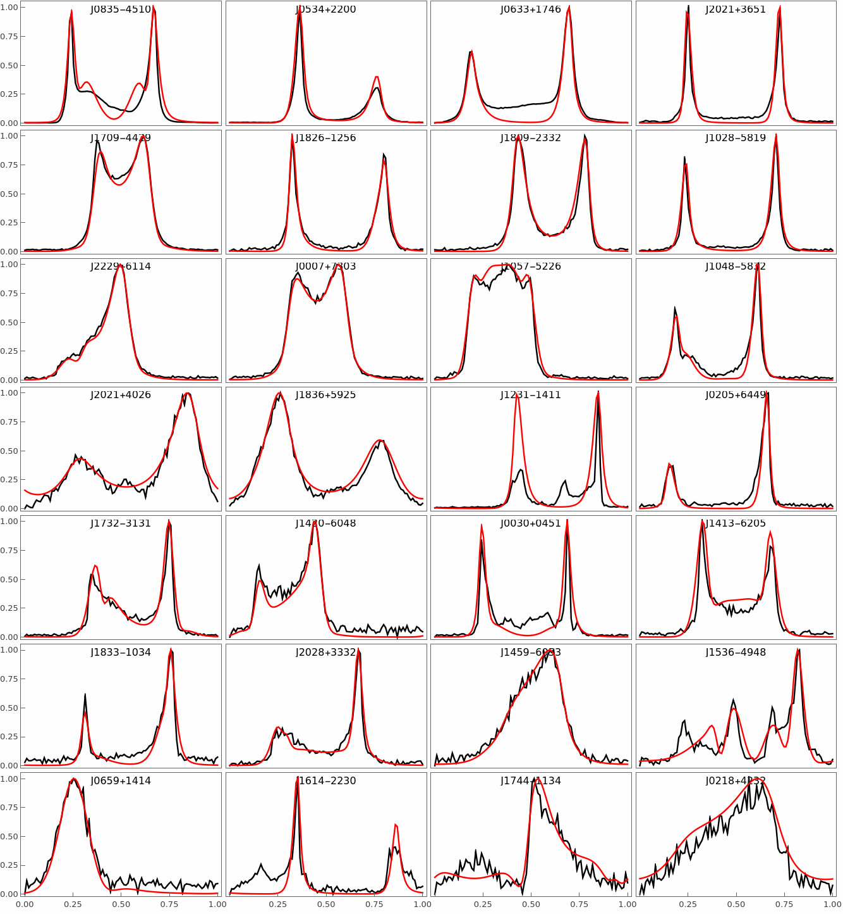
图注：Same as Fig.\(\ref{fig:pulsar_echantillon_mn0_ms0}\) but wit the mode satisfying $m_{\rm N} \leq 4$ and $m_{\rm S} \leq 4$.
对应解读：“图 6：观测轮廓类比或代表性 Fermi 脉冲星形态对照图”以及模型拟合段落中关于高阶南北/方位角 emissivity 参数拟合真实 LAT 光变曲线的讨论。
入选理由：这是候选图中最直接支撑论文核心结论的图：黑线为观测、红线为模型，并允许 \(m_N\)、\(m_S\) 到 4，展示局部/高阶 plasma loading 后模型能覆盖复杂、多峰和非对称的真实伽马射线脉冲星轮廓。相比单纯图谱或参数分布，它最能检验峰间距、峰宽、峰强比和桥辐射是否同时可被复现。
来源与置信度：\(arxiv_source\)；high；\(arxiv_source\) / morphologie.tex:figure[9]
Fig03
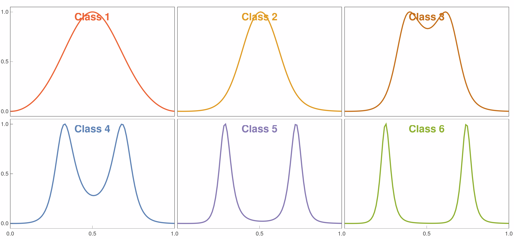
图注：Representative $\gamma$-ray light curves for each morphological class with the parameters $(m_{\rm N}, m_{\rm S}) = (0,0)$ and $\kappa_{\mathrm{S}}/\kappa_{\mathrm{N}}=1$ i.e. a fully symmetric profile. The separation is forced into six classes.
对应解读：“图 2：基准光变曲线图谱”以及“对称 emissivity 的基准光变曲线图谱”。
入选理由：该图给出 \(m_N=m_S=0\) 且 κ_S/κ_N=1 的完全对称 emissivity 基准样本，是判断几何 caustic 在不加 plasma loading 时能产生哪些规则峰形的核心参照。后续所有不对称和高阶模式的形态改变量都需要以这张图作为基线。
来源与置信度：\(arxiv_source\)；high；\(arxiv_source\) / morphologie.tex:figure[3]
Fig05
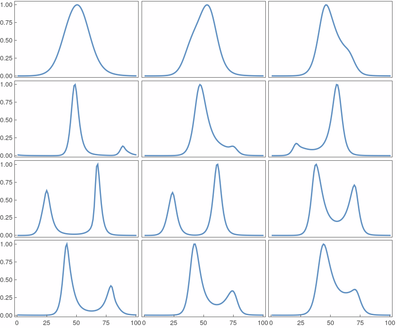
图注：Representative $\gamma$-ray light curves sample for $(m_{\rm N}, m_{\rm S}) = (1,1)$ and $\kappa_{\mathrm{S}}/\kappa_{\mathrm{N}}=1$. The asymmetric nature of these light curves is readily visible.
对应解读：“图 3：南北不对称参数变化图”和“方位角调制或局部加载图”中关于非对称光变曲线、主峰/次峰强度比和子结构的讨论。
入选理由：该图展示 \(m_N=m_S=1\) 时的代表性伽马射线光变曲线，caption 明确指出非对称性清晰可见。它直接对应日报强调的少量 emissivity 对称性破缺即可产生峰强不等、轮廓非镜像和结构化形态，是连接 plasma loading 参数与可观测光变曲线形态的关键图。
来源与置信度：\(arxiv_source\)；high；\(arxiv_source\) / morphologie.tex:figure[5]
Fig04
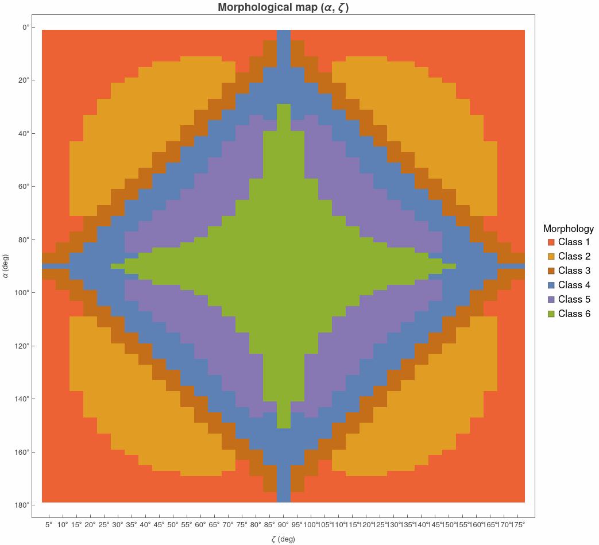
图注：Map of each morphological class in the plane $(\alpha, \zeta)$ for $(m_{\rm N}, m_{\rm S}) = (0,0)$ and $\kappa_{\mathrm{S}}/\kappa_{\mathrm{N}}=1$.
对应解读：“参数扫描汇总表或 atlas panel”以及模型拟合段落中关于 α、ζ 几何退化和形态分类覆盖范围的讨论。
入选理由：该图在 α–ζ 平面上给出对称模式下各形态类别的分布，能系统展示不同磁倾角和视线角如何控制峰形，而不是只给出少数手调例子。它也有助于理解日报中提到的 α、ζ 与峰间距、形态类别之间的退化关系。
来源与置信度：\(arxiv_source\)；high；\(arxiv_source\) / morphologie.tex:figure[4]
Fig07
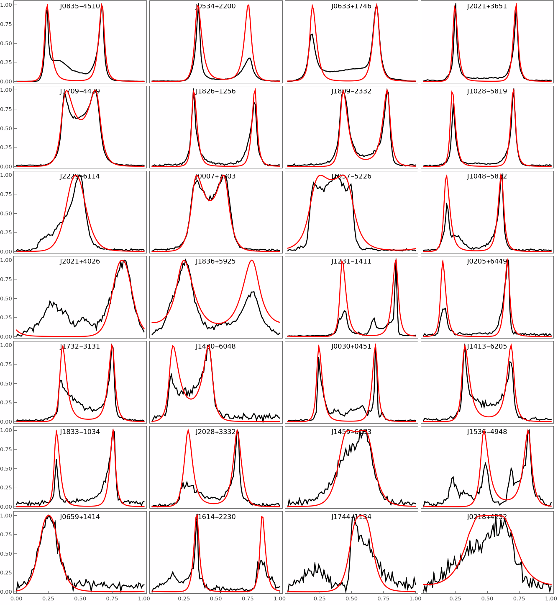
图注：Best model of the pulsars shown in Fig.\(\ref{fig:courbes_gamma_echantillon}\) with the symmetric mode ${m_{\rm N}=m_{\rm S}=0}$. Observations are shown in black solid lines and the model in red solid lines.
对应解读：“模型比较可在对称 emissivity、仅南北不对称、仅方位角不对称、二者同时存在之间进行”以及“图 6：观测轮廓类比”的基准拟合部分。
入选理由：该图把真实观测黑线与完全对称模式 \(m_N=m_S=0\) 的最佳模型红线逐源对比，是评估对称 current-sheet 几何本身拟合能力和系统残差的直接证据。与 Fig09 形成强对照，可说明复杂 emissivity 模式相对对称模型到底改善了哪些峰形细节。
来源与置信度：\(arxiv_source\)；high；\(arxiv_source\) / morphologie.tex:figure[7]
Fig01
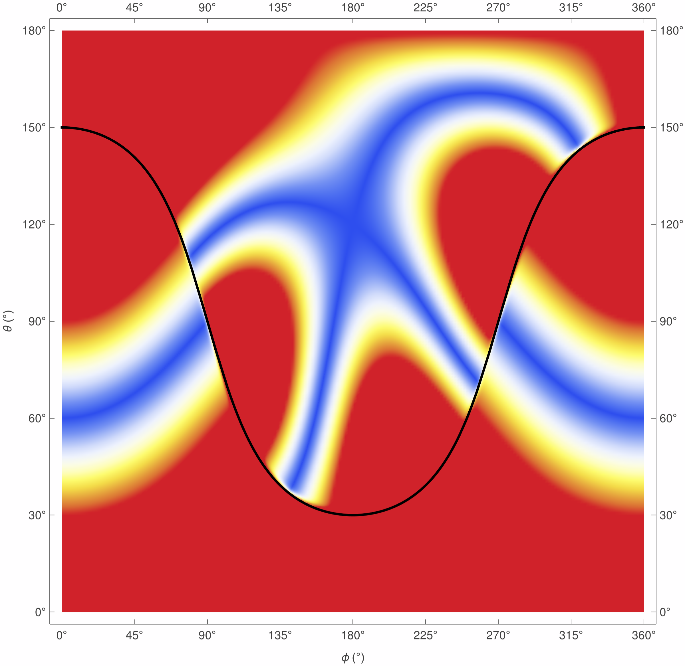
图注：An example of emissivity for an obliquity $\alpha=60\degr$ and the modes $m_{\rm N}=1$ and $m_{\rm S}=2$ in the $(\theta,\varphi)$ plane. The blue colour means zero density whereas red means maximal density normalised to one. The black undulating line depicts the magnetic equator located at $\theta'=\pi/2$.
对应解读：“方位角调制或局部加载图”以及“电流片几何示意或 current-sheet surface”中关于 θ–φ 平面 emissivity、磁赤道 undulating line 和 bright sector 的讨论。
入选理由：该图显示 α=60°、\(m_N=1\)、\(m_S=2\) 时 θ–φ 平面上的 emissivity 分布，并标出磁赤道位置，能直观看到南北和方位角加载模式如何在电流片附近形成非均匀亮区。虽然它不是完整 sky map，但它是理解后续非对称/多峰光变曲线来源的物理输入图。
来源与置信度：\(arxiv_source\)；high；\(arxiv_source\) / morphologie.tex:figure[1]
强相关工作
这篇工作与费米伽马射线脉冲星 catalog 和外磁层几何模型直接相关。同类观测工作包括 Fermi-LAT 脉冲星目录、毫秒脉冲星高能辐射研究，以及对单个亮源如 Vela、Crab、Geminga 的相位分辨光谱分析。建议检索关键词包括 “Fermi LAT gamma-ray pulsar catalog”, “gamma-ray pulsar light curve atlas”, “two-pole caustic model”, “outer gap pulsar”, “slot gap pulsar”。
理论上，它与 striped wind、current sheet reconnection、force-free magnetosphere 和 PIC pair cascade 文献相连。相反或互补观点主要来自外磁层内的 slot gap/outer gap/force-free current sheet near light cylinder 模型，这些模型不一定要求主要辐射发生在远风区。建议检索关键词包括 “striped wind pulsar gamma-ray emission”, “pulsar current sheet radiation”, “polar cap pair loading”, “pair multiplicity pulsar magnetosphere”, “PIC simulation pulsar magnetosphere current sheet”。
同一事件 / 同类源线索：
相似工作：
基础理论 / 方法工作：
相反观点 / 张力线索：
（未提供）
5. Strongly Magnetized Super-Eddington Accretion: How Spin and Accretion Rate Regulate Energy Output and Mass Loss
- 来源：arXiv / astro-ph.HE
- 链接：https://arxiv.org/abs/2607.28919v1
- 作者：Tom Man Kwan, Lixin Dai, Cheuk Kwan Kan, Zepei Xing, Tassos Fragos, Matthew Middleton, Tao Ji, Feng Yuan
- 评分：novelty 8/10，importance 8/10，relevance 8/10，final 9.00/10
- 推荐理由：32个GR辐射MHD超爱丁顿MAD模拟，给出自旋、吸积率对风、喷流、辐射束流和ULX解释的标度关系；对致密天体高能吸积和喷流物理有较高价值。
中文题目：强磁化超爱丁顿吸积：黑洞自旋和吸积率如何调节能量输出与质量损失
做了什么：这篇论文用 32 个广义相对论辐射磁流体力学模拟研究强磁化、磁通量饱和的超爱丁顿吸积盘，系统改变黑洞质量 \(M_{\rm BH}=5,15,30\,M_\odot\)、自旋 \(a=0,0.9\) 和吸积率 \(\dot M_{\rm acc}\approx1-2000\,\dot M_{\rm Edd}\)。核心结论是：在这个质量范围内黑洞质量几乎不影响无量纲输出，但自旋和吸积率强烈控制风、喷流、辐射效率和束射。供给到盘内的气体只有约 \(10\%-40\%\) 真正落入黑洞，其余大多被风带走；高自旋和高供给率会让损失更强。对 \(a=0.9\) 的模型，风功率和喷流功率随 \(\dot M_{\rm acc}\) 超线性增长，喷流在 \(\dot M_{\rm acc}\sim100\,\dot M_{\rm Edd}\) 后趋于饱和，同时漏斗方向辐射强烈束射，面向观测时反束射因子可超过 \(100\)。
为什么重要：超爱丁顿吸积被用来解释 ULX、潮汐瓦解事件、早期宇宙快速黑洞增长和部分 X 射线双星的极亮态，但长期难点是：高光度究竟来自真实高能量输出、几何束射，还是黑洞自旋抽能？这篇工作的重要性在于它把强磁化 MAD 状态、自旋、极高供给率和辐射输运放在同一个 GRRMHD 参数扫描中，而不是只讨论单个代表性模拟。它给出了可用于观测解释的标度关系，使“测到一个表观光度后该推断怎样的 \(\dot M\)、自旋或束射”这个问题更可操作。
理论 / 观测 / 仪器方法价值：理论上，它把超爱丁顿盘的质量留存率、风效率、喷流效率和辐射束射纳入统一的自旋—吸积率图像，强调高自旋不只是改变内边界效率，还会通过磁通量和 Blandford-Znajek 型抽能增强喷流与风。观测上，它为 ULX 的表观超亮、谱态和可能的喷流/风信号提供了一组模拟校准的经验式。方法上，它展示了大样本 GRRMHD 参数扫描如何从单个“漂亮模拟”走向半解析人口模型或拟合模板。
为什么应该关注：如果你研究 ULX、黑洞 X 射线双星、超临界盘、喷流反馈或早期黑洞生长，这篇文章值得关注，因为它直接回答了一个常被含糊处理的问题：同样是超爱丁顿，低自旋和高自旋黑洞的能量预算可以完全不同。它也提醒观测解释中不能只把表观光度等同于真实辐射功率；漏斗束射、风吸收和喷流抽能会把 \(L_{\rm iso}\)、真实 \(L_{\rm rad}\)、\(P_{\rm jet}\) 和 \(\dot M_{\rm BH}\) 之间的关系拉开。
展开详细解读：文章讲解、背景、理论、重点章节、图表与相关工作
文章详细讲解
科学问题：强磁化超爱丁顿吸积盘同时包含辐射压力、磁压力、湍流角动量输运、漏斗束射、强风和相对论喷流。过去许多研究分别强调几何厚盘导致的辐射束射，或 MAD 盘中大尺度磁通量导致的自旋抽能，但缺少覆盖黑洞质量、自旋和很宽 \(\dot M\) 范围的统一比较。本文要问的是：当盘进入强磁化、近 MAD 的超爱丁顿状态时，黑洞质量、自旋和供给率分别如何控制真正落入黑洞的质量、被风带走的质量，以及辐射、风、喷流和电磁通量的能量分配。
作者怎么做：论文进行 32 个广义相对论辐射磁流体力学模拟，黑洞质量取 \(5\,M_\odot\)、\(15\,M_\odot\)、\(30\,M_\odot\)，自旋取 \(a=0\) 和 \(a=0.9\)，吸积率覆盖约 \(1-2000\,\dot M_{\rm Edd}\)。关键设定是强磁化盘，即大尺度磁通量积累到足以阻碍内区流入的磁阻塞状态。模拟输出不是只看总光度，而是分别测量黑洞吞噬率、盘供给率、风质量流率、风动能功率、辐射功率、电磁功率、喷流功率和角向依赖的辐射强度，并整理成关于 \(\dot M_{\rm acc}/\dot M_{\rm Edd}\) 与 \(a\) 的标度关系。
关键结果：黑洞质量在 \(5-30\,M_\odot\) 范围内对无量纲效率和质量分流影响很小，这符合相对论吸积在无量纲化后近似按质量缩放的预期。更重要的是，只有 \(10\%-40\%\) 的供给质量能进入黑洞，其余由风排出；且供给率越高，进入黑洞的比例越低，高自旋时这一比例也更低。对 \(a=0\) 模型，风动能、辐射和电磁效率较温和，并且随 \(\dot M_{\rm acc}\) 变化不大；对 \(a=0.9\) 模型，风功率和喷流功率随 \(\dot M_{\rm acc}\) 超线性增加，喷流功率在 \(\dot M_{\rm acc}\sim100\,\dot M_{\rm Edd}\) 以上出现饱和趋势。辐射沿极向漏斗强烈束射，高自旋高吸积率面向观测时反束射因子超过 \(100\)，这意味着表观各向同性光度 \(L_{\rm iso}\) 可远高于真实辐射光度。
局限和下一步：模拟覆盖的是恒星质量黑洞，虽然无量纲结果可能外推到更大质量，但辐射微物理、温度、热化和谱形成并不必然简单缩放。论文主要给出能量和质量预算，而非完整的合成谱、偏振或时间变异诊断；观测者若要直接拟合 ULX 光谱，还需要辐射转移后处理和吸收/再处理模型。另一个限制是初始磁场拓扑、盘外边界供给和模拟时间可能影响 MAD 饱和程度及风的远区形态。下一步自然是把这些标度关系嵌入人口合成和观测选择函数中，检验 ULX 光度函数、风线速度、喷流无线电功率和视角分布是否能同时被解释。
关键结果是怎么做出来的
本文最关键的证据链来自 32 个模拟构成的参数网格，而不是单个对象的观测拟合。样本选择上，作者固定问题为恒星质量黑洞上的强磁化超爱丁顿 MAD 吸积，改变 \(M_{\rm BH}\)、\(a\) 和 \(\dot M_{\rm acc}\)。这种设计能把质量缩放、自旋效应和供给率效应分离：若无量纲结果随 \(M_{\rm BH}\) 不变，就说明在该质量范围内主控变量不是质量；若 \(a=0\) 与 \(a=0.9\) 分支分离，就可把差异归因于自旋与磁通量抽能。
质量预算的主要结果应来自径向质量通量诊断：比较供给到盘内的 \(\dot M_{\rm acc}\)、穿过视界的 \(\dot M_{\rm BH}\) 与外流积分得到的 \(\dot M_{\rm wind}\)。作者报告 \(\dot M_{\rm BH}/\dot M_{\rm acc}\approx0.1-0.4\)，并且该比例随 \(\dot M_{\rm acc}\) 上升而下降，在高自旋模型中更低。这里读者应关注不同半径处的质量流是否达到准稳态，因为若外层尚未热化或尚未完成流入，风质量流率可能受模拟时间和测量半径影响。
能量预算方面，论文区分辐射光度、风动能功率、电磁功率和喷流功率，并用相对于 \(\dot M_{\rm acc}c^2\) 或 \(\dot M_{\rm Edd}c^2\) 的效率作比较。核心统计不是传统观测中的 \(p\) 值，而是跨模拟网格的系统趋势和拟合标度关系；模型比较体现在低自旋与高自旋两条趋势线的分离，以及是否需要自旋项才能描述输出效率。高自旋模型的 \(P_{\rm jet}\) 随 \(\dot M_{\rm acc}\) 增长后在 \(\sim100\,\dot M_{\rm Edd}\) 附近饱和，是判断磁通量积累和 BZ 抽能上限的重要结果。
束射结果来自辐射通量的角向分布。作者报告高自旋、高 \(\dot M\) 面向模型的反束射因子可超过 \(100\)，这需要查看极向角上的辐射通量曲线或等效的 \(L_{\rm iso}(\theta)\) 图。稳健性上，应检查辐射束射是否只是内区漏斗暂态造成，还是在时间平均后仍稳定；也应比较不同 \(M_{\rm BH}\) 模型是否在同一 \(\dot m\) 下重合，以排除质量相关数值尺度效应。
主要系统误差包括网格分辨率、辐射闭合关系、初始磁通量、盘供给边界、模拟持续时间和外流分类阈值。若风和喷流的定义依赖 Bernoulli 参数、磁化度或极角切分，那么效率数值会随定义改变；但只要低自旋与高自旋趋势在多种定义下保持分离，论文的物理结论就更可信。
展开背景、理论、公式、模型、章节和图表导读
背景知识
超爱丁顿吸积指质量供给率超过按 Thomson 散射平衡定义的爱丁顿吸积率，即 \(\dot M\gtrsim\dot M_{\rm Edd}\)。在薄盘理论中，超过爱丁顿后辐射压力应强烈驱动外流，真实辐射光度只缓慢增加；但在实际系统中，ULX 和一些瞬变源的表观光度远超普通恒星质量黑洞的爱丁顿光度，因此必须同时考虑几何束射、风再处理、喷流和可能的中等质量黑洞解释。
历史上，Shakura-Sunyaev 超临界盘模型提出了厚盘和风的基本图像；后来数值模拟显示，光子俘获、漏斗结构和多维辐射输运会让辐射从极向逃逸。与此同时，磁通量积累形成的 MAD 盘被发现能高效驱动相对论喷流，尤其在高自旋黑洞附近，Blandford-Znajek 机制可从黑洞旋转能中抽取能量。因此超爱丁顿系统的能量输出不能只看辐射，还要看电磁喷流和机械风。
为什么现在值得重新看？一方面，ULX 样本越来越丰富，且一些 ULX 已被确认为中子星吸积，说明强磁场和强外流在极端吸积中很常见；另一方面，GRRMHD 模拟已经能够同时处理相对论磁场、辐射输运和长时间演化。过去用单个模拟解释单个现象很容易混淆 \(\dot M\)、视角和自旋效应，现在参数扫描可以把这些因素拆开。
该领域常见误区之一是把观测到的 \(L_{\rm iso}\) 直接当作真实总辐射功率。若辐射被漏斗束射，面向观测者得到的 \(L_{\rm iso}\) 可能比真实 \(L_{\rm rad}\) 大一个到两个数量级。另一个误区是认为超爱丁顿意味着黑洞实际吞噬同样高的质量；本文强调大部分供给物质可被风带走，视界吸积率远低于盘供给率。还有一个误区是忽略自旋：在强磁化盘里，自旋不仅改变 ISCO，还可能通过磁通量和电磁抽能重塑整个能量预算。
基础理论 / 方法脉络
基本物理图像从爱丁顿限制开始：辐射力与引力平衡给出一个特征光度。若盘的质量供给超过这个标度，薄盘近似失效，盘变厚，辐射扩散时间可能长于流入时间，部分辐射能被气体 advect 到内区或随风带走。厚盘的低密度极区形成漏斗，使辐射和喷流更容易沿旋转轴逃逸。
强磁化 MAD 状态的关键在于大尺度垂直磁通量被吸积流拖向黑洞。当磁压接近内区吸积流的动压时，磁场会间歇性阻碍气体进入视界，形成磁阻塞。此时角动量输运和能量释放不再只由局地湍流决定，大尺度磁场可把能量导入风和喷流。对高自旋黑洞，视界附近的旋转时空还能通过 BZ 机制把黑洞自旋能转为 Poynting 通量。
本文使用的关键量包括盘供给率 \(\dot M_{\rm acc}\)、视界吸积率 \(\dot M_{\rm BH}\)、风质量流率 \(\dot M_{\rm wind}\)、辐射光度 \(L_{\rm rad}\)、喷流功率 \(P_{\rm jet}\)、风动能功率 \(P_{\rm wind}\)、电磁功率 \(P_{\rm EM}\) 和束射因子。它们通常被无量纲化为相对于 \(\dot M_{\rm Edd}\) 或 \(\dot M c^2\) 的效率，以便比较不同质量黑洞。
观测联系主要通过两类量完成：一类是总能量预算，如 ULX 表观光度、喷流无线电功率、风线速度和动能；另一类是视角效应，如面向漏斗看到硬而亮的源，边向看到被风吸收和再处理的较软源。常见退化是 \(\dot M\) 与视角的退化：高 \(L_{\rm iso}\) 既可能来自高真实功率，也可能来自强束射。另一个退化是黑洞质量与束射的退化：一个看似需要中等质量黑洞的光度，也可能由恒星质量黑洞加上高 \(\dot M\) 和小视角产生。
系统误差方面，GRRMHD 模拟依赖辐射闭合、电子温度处理、磁场初始拓扑和外边界供给。若只看 bolometric 输出，微物理影响相对小；但若要预测 X 射线谱线、软硬谱成分或偏振，后处理辐射转移和风电离结构会非常关键。
公式与推导
第一步是爱丁顿光度。对电离氢气体，辐射力与引力平衡给出
其中 \(G\) 是引力常数，\(c\) 是光速，\(\kappa_{\rm es}\) 是电子散射不透明度。它定义了辐射反馈与引力竞争的基本尺度。
给定基准辐射效率 \(\eta_0\)，爱丁顿吸积率可写为
本文讨论的无量纲供给率为
其中 \(\dot M_{\rm acc}\) 是供给到模拟吸积流的质量流率。使用 \(\dot m\) 后，不同 \(M_{\rm BH}\) 的模型可以直接比较。
质量守恒给出盘内质量分流的基本诊断：
在准稳态时 \(dM_{\rm disk}/dt\) 较小，因此
直接衡量供给物质中真正进入视界的比例。本文发现 \(f_{\rm BH}\approx0.1-0.4\)，说明风是质量预算的主通道。
能量效率通常写成
其中 \(i\) 可代表辐射、风动能、电磁通量或喷流。这个定义强调同样的质量供给能转化为多少输出功率；若改用 \(\dot M_{\rm BH}c^2\) 归一化，高风损失模型的表观效率会更高。
风动能功率可由外流积分近似理解为
其中 \(v_{\rm wind}\) 是风的质量加权速度。真实 GRRMHD 计算会使用应力能动张量通量积分，但这个式子说明强风的能量由质量流率和速度共同决定。
高自旋强磁化盘中的喷流可用 BZ 标度理解：
其中 \(\Phi_{\rm BH}\) 是穿过视界的磁通量，\(\Omega_{\rm H}\) 是黑洞视界角速度，\(\kappa\) 是与场几何有关的系数。自旋参数 \(a\) 通过
进入喷流功率，其中 \(r_g=GM_{\rm BH}/c^2\)。这解释了为什么 \(a=0.9\) 模型比 \(a=0\) 模型有更强喷流。
束射可用角向光度定义。若真实辐射光度为
某一视角的表观各向同性光度为
束射因子可写作
本文报告高自旋高 \(\dot m\) 的面向模型可有 \(b^{-1}>100\)，意味着小视角观测会显著高估真实总辐射功率。
若把模拟标度用于观测，可写一个简化的表观光度关系：
该式显示 \(L_{\rm iso}\) 同时受 \(\dot m\)、自旋依赖的 \(\eta_{\rm rad}\) 和视角依赖的 \(b^{-1}\) 控制，因此单独用光度反推质量或吸积率会高度退化。
模型拟合 / 应用方法
本文本身是模拟参数扫描，拟合对象主要是模拟输出的标度关系，而不是对某个观测源做贝叶斯拟合。常见拟合量包括 \(f_{\rm BH}\)、\(\eta_{\rm rad}\)、\(\eta_{\rm wind}\)、\(\eta_{\rm EM}\)、\(P_{\rm jet}\) 和 \(b^{-1}\) 随 \(\dot m\) 与 \(a\) 的变化。读者应关注作者是否分别对 \(a=0\) 与 \(a=0.9\) 给出独立关系，还是使用包含自旋项的统一函数。
从统计角度，模拟论文的“不确定度”通常不是 photon counting 误差，而是时间平均波动、准稳态区间选择、空间积分边界和模型定义造成的系统散布。理想做法是对每个模拟输出给出时间均值与方差，并在拟合标度关系时把这些方差作为权重或误差棒。若某个高 \(\dot m\) 模型的喷流处于强烈间歇状态，那么均值可能不代表典型观测时刻。
参数退化在观测应用中尤其重要。给定一个 ULX 的 \(L_{\rm iso}\)，可以通过更高 \(\dot m\)、更小视角、更高自旋或更大黑洞质量得到相似光度。若再加入风线速度、吸收柱、软 X 射线再处理成分、无线电喷流上限和时间变异，退化才可能被部分打破。本文标度关系的价值就在于把这些量联系到同一组 \(a\) 与 \(\dot m\) 参数上。
模型可能失败的场景包括：源不是黑洞而是中子星；磁场不是 MAD 级别而是弱磁化 SANE 盘；外盘供给不稳定导致系统不处于准稳态；或观测谱主要由远区风再处理决定而非内区漏斗直接辐射。对这类源，直接套用本文的 \(b^{-1}\) 或 \(P_{\rm jet}\) 标度可能会产生偏差。
实际应用时，可以把本文关系作为人口合成的子网格模型：输入黑洞质量分布、自旋分布、供给率分布和随机视角，输出 \(L_{\rm iso}\)、喷流功率和风功率分布，再与 ULX 光度函数或射电/X 射线联合样本比较。也可以用于反馈模型，估算超临界 X 射线双星向周围星际介质注入的机械能。
重点章节 / 结果段落怎么读
数据/模拟设计部分应首先阅读。重点看 32 个 GRRMHD 模型如何覆盖 \(M_{\rm BH}\)、\(a\) 和 \(\dot m\)，初始磁场如何保证强磁化或 MAD 状态，以及作者如何定义 \(\dot M_{\rm acc}\)、\(\dot M_{\rm BH}\) 和准稳态时间窗口。
方法部分应关注通量定义。不同论文对风、喷流和电磁功率的切分标准可能不同，例如按极角、Bernoulli 参数、磁化度或能量通量符号划分。理解这些定义后，才能判断 \(P_{\rm wind}\)、\(P_{\rm jet}\) 和 \(P_{\rm EM}\) 的数值是否可与其他模拟或观测估计直接比较。
主结果部分应按质量预算、能量预算和束射三条线阅读。质量预算看 \(f_{\rm BH}\) 随 \(\dot m\) 与 \(a\) 的变化；能量预算看低自旋和高自旋分支是否明显分离；束射部分看 \(L_{\rm iso}(\theta)\) 或 \(b^{-1}(\theta)\) 是否在高 \(\dot m\) 时急剧增强。
讨论部分要重点看作者如何连接 ULX。特别是哪些 ULX 光度可由恒星质量黑洞加束射解释，哪些情况下仍需要更高质量、更高自旋或不同物理。还应看作者是否讨论中子星 ULX 与黑洞 ULX 的区别，因为两者都可能处于超临界吸积但内边界条件完全不同。
附录或稳健性检验若存在，应检查分辨率、时间平均区间、不同半径通量积分和磁通量饱和程度。对模拟论文而言，这些诊断往往比某条单独的效率曲线更能决定结论可靠性。
建议重点查看的图表
-
参数网格或模拟表：看 \(M_{\rm BH}\)、\(a\)、\(\dot m\) 的覆盖是否均匀，每个模型是否达到 MAD 饱和和准稳态。
-
质量流率随半径或时间的图：重点看 \(\dot M_{\rm acc}\)、\(\dot M_{\rm BH}\) 与 \(\dot M_{\rm wind}\) 是否在内区稳定，以及 \(f_{\rm BH}\approx0.1-0.4\) 是否由多个模型支持。
-
效率随 \(\dot m\) 的图：比较 \(a=0\) 与 \(a=0.9\) 的 \(\eta_{\rm rad}\)、\(\eta_{\rm wind}\)、\(\eta_{\rm EM}\) 或 \(P_{\rm jet}\)，看高自旋分支是否系统性更高。
-
喷流功率饱和图：检查 \(P_{\rm jet}\) 在 \(\dot M_{\rm acc}\sim100\,\dot M_{\rm Edd}\) 以上是否真的变平，还是误差棒和时间波动仍允许继续增长。
-
角向辐射分布或束射因子图：看 \(b^{-1}\) 在极向漏斗内的峰值、半开角和随 \(\dot m\) 的变化；这是连接 ULX 表观光度的关键。
-
质量无关性检验图：若有不同 \(M_{\rm BH}\) 在同一无量纲坐标下的重合图，应检查散布是否小于自旋和 \(\dot m\) 引起的差异。
-
时间序列诊断：查看磁通量、吸积率和喷流功率是否高度间歇；若间歇性很强，单一平均效率用于观测解释时需谨慎。
关键图表逐图导读
图 1：通常应是模拟设置或代表性密度/磁场/辐射通量切片。横纵坐标多为以 \(r_g\) 标度的空间坐标，颜色显示密度、磁化度或辐射能量密度，流线显示磁场或速度。读图重点是是否形成厚盘、低密度极向漏斗和强外流。陷阱是二维切片容易夸大结构清晰度，实际三维流动可能高度湍动。
图 2：质量流率诊断图。坐标轴可能是半径或时间对 \(\dot M\) 的关系，数据线区分 \(\dot M_{\rm acc}\)、\(\dot M_{\rm BH}\) 与 \(\dot M_{\rm wind}\)。主要结论是供给物质大部分没有进入黑洞，而是被风带走。读图时要看不同半径处是否达到准稳态；外半径未稳态会让风积分偏不可靠。
图 3：效率或功率随 \(\dot m\) 的趋势图。横轴应为 \(\dot M_{\rm acc}/\dot M_{\rm Edd}\)，纵轴为 \(L_{\rm rad}\)、\(P_{\rm wind}\)、\(P_{\rm jet}\) 或相应效率，颜色/符号区分 \(a=0\) 和 \(a=0.9\)。核心读法是看低自旋曲线是否平缓、高自旋曲线是否超线性上升。陷阱是功率和效率的归一化不同会改变视觉印象，必须确认纵轴单位。
图 4：喷流功率饱和或电磁抽能图。若纵轴为 \(P_{\rm jet}\) 或 \(\eta_{\rm EM}\)，应看 \(a=0.9\) 在 \(\dot m\gtrsim100\) 后是否出现平台。读者应同时检查磁通量 (\Phi_{\rm BH}
) 或 MAD 参数，因为喷流饱和可能来自磁通量饱和而不是辐射过程。
图 5：束射因子或角向光度图。横轴可能是极角 \(\theta\) 或 \(\cos\theta\)，纵轴是 \(L_{\rm iso}\) 或 \(b^{-1}\)。主要结论是高自旋高 \(\dot m\) 模型在面向方向有极强增强。读图陷阱是极小视角对应的观测概率也小，因此人口解释必须乘以视角选择函数。
图 6：标度关系汇总或观测应用图。若论文给出拟合公式，应看模拟点围绕拟合线的散布，以及 ULX 典型光度区域落在哪些 \(a\)、\(\dot m\)、\(b^{-1}\) 组合上。不要只看能否达到最高光度，还要看对应风和喷流是否与观测限制相容。
论文原图 / 可嵌入图片
Fig04
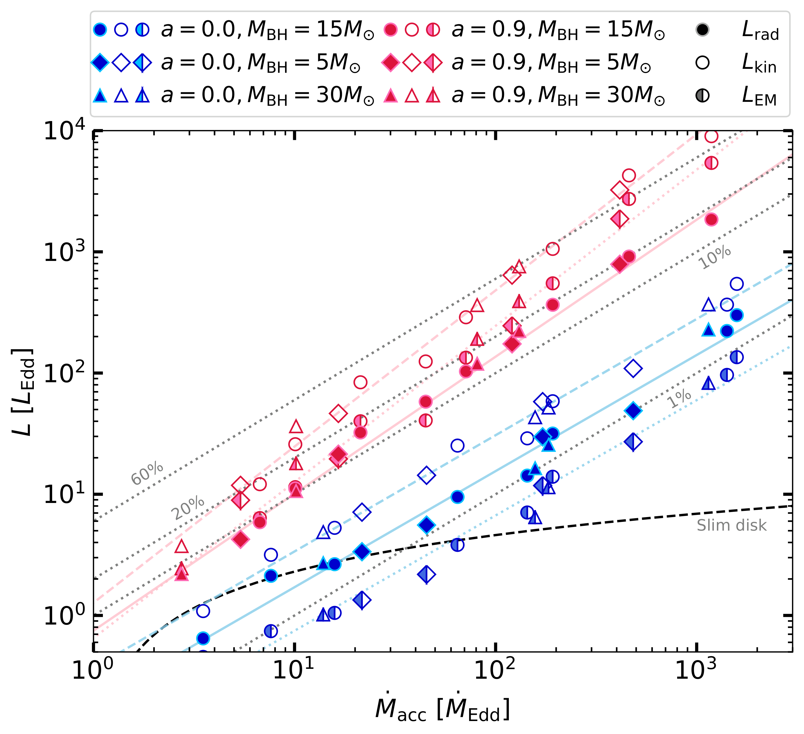
图注：Radiative luminosity $L_{\rm rad}$ (fully filled symbols), kinetic luminosity $L_{\rm kin}$ (open symbols) and EM luminosity $L_{\rm EM}$ (half-filled symbols) of the thermally unbound wind. All quantities are measured at $r = 2000\,r_g$ and expressed in units of Eddington luminosity $L_{\rm Edd}$. For $L_{\rm rad}$, we include only the wind outside the effective photosphere ($\tau_{\rm eff}<1$). Blue and red symbols denote simulations with BH spin $a = 0$ and $a = 0.9$, respectively. Diamonds, circles, and triangles correspond to BH masses of $5$, $15$, and $30\,M_\odot$. The colored solid lines show fits to $L_{\rm rad}$, dashed lines show fits to $L_{\rm kin}$, dotted lines show fits to $L_{\rm EM}$. Grey dotted lines indicate constant energy efficiencies of $1\%$, $10\%$, $20\%$, and $60\%$, while the black dashed curve shows the slim-disk luminosity as a function of $\dot{M}_{\rm acc}$.
对应解读：对应“建议重点查看的图表”第3项，以及“关键图表逐图导读”图3和“模型拟合”中关于辐射、动能、电磁 luminosity/efficiency 随 \(\dot m\) 与自旋变化的标度关系。
入选理由：这是支撑论文核心结论的主图之一：直接在 \(\dot M_{\rm acc}\) 横轴上比较 \(L_{\rm rad}\)、\(L_{\rm kin}\)、\(L_{\rm EM}\)，并用颜色区分 \(a=0\) 与 \(a=0.9\)，符号区分黑洞质量，还给出拟合线和等效率参考线。它同时检验高自旋分支是否系统性更高、低自旋是否较平缓，以及质量差异是否小于自旋和吸积率造成的差异。
来源与置信度：\(arxiv_source\)；high；\(arxiv_source\) / main.tex:figure[4]
Fig05
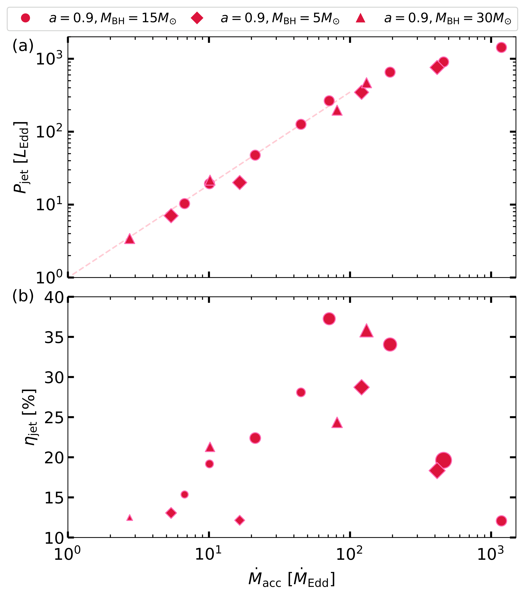
图注：Jet power and jet efficiency for the $a=0.9$ models. Panel (a) shows the time-averaged total jet power $P_{\rm jet}$, measured at $r=2,000 r_g$ and expressed in units of Eddington luminosity $L_{\rm Edd}$, as a function of $\dot{M}_{\rm acc}$. The dashed line shows the best power-law fit to $P_{\rm jet}$ for $1<\dot{m}<100$. Panel (b) shows the corresponding jet efficiency $\eta_{\rm jet}$. The marker size scales with the dimensionless magnetic flux through the horizon $\phi_H$ relative to its maximum among the $a=0.9$ models. $P_{\rm jet}$ increases with $\dot{M}_{\rm acc}$ below $\dot{m} \sim 100$, but saturates at higher $\dot{m}$. $\eta_{\rm jet}$ correspondingly turns over and declines in the hyper-Eddington regime.
对应解读：对应“建议重点查看的图表”第4项，以及“关键图表逐图导读”图4中关于 \(P_{\rm jet}\) 在 \(\dot m\sim100\) 后是否饱和、\(\eta_{\rm jet}\) 是否转折的讨论。
入选理由：该图专门展示高自旋模型的喷流功率和喷流效率，横轴为 \(\dot M_{\rm acc}\)，包含 \(1<\dot m<100\) 的幂律拟合线，并明确显示高 \(\dot m\) 后的饱和/转折趋势。标记大小还编码 \(\phi_H\)，可直接判断喷流饱和是否与 MAD 磁通量变化相关，比一般能量预算图更适合支撑喷流饱和结论。
来源与置信度：\(arxiv_source\)；high；\(arxiv_source\) / main.tex:figure[5]
Fig12
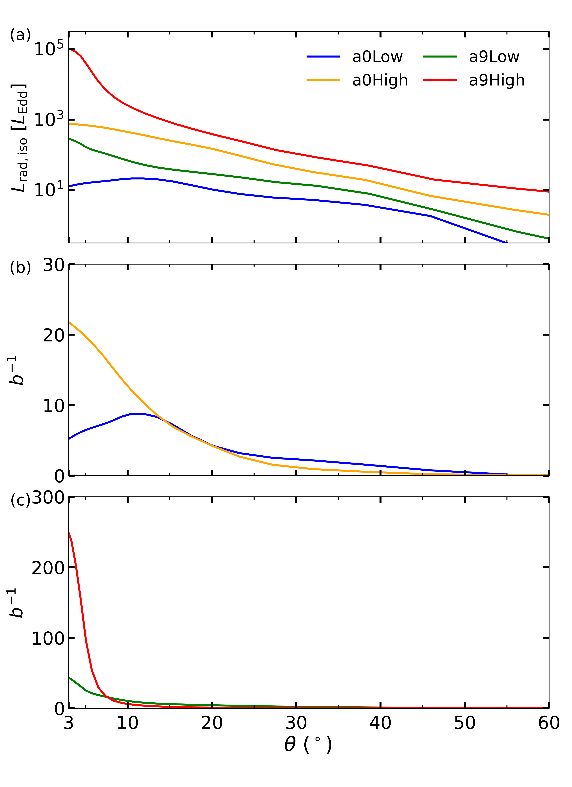
图注：Panels (a)–(c): quantities as a function of inclination angle $\theta$ at $r = 2000r_g$ for the four fiducial models. (a) Isotropic-equivalent radiative luminosity $L_{\mathrm{rad,iso}}/L_{\mathrm{Edd}}$. (b) Inverse beaming factor $b^{-1}(\theta)$ for the $a = 0$ models. (c) Inverse beaming factor $b^{-1}(\theta)$ for the $a = 0.9$ models. Larger $b^{-1}$ indicates stronger beaming.
对应解读：对应“建议重点查看的图表”第5项，以及“关键图表逐图导读”图5中关于角向光度、\(L_{\rm rad,iso}\) 和反束射因子 \(b^{-1}(\theta)\) 的解读。
入选理由：该图直接给出随倾角 \(\theta\) 变化的各向同性等效辐射光度和反束射因子，并分面比较 \(a=0\) 与 \(a=0.9\) 模型，是连接模拟结果与 ULX 面向观测表观光度的关键证据。它比二维形态图更定量，能检验极向漏斗内峰值、半开角和高自旋高吸积率下 \(b^{-1}\) 的增强。
来源与置信度：\(arxiv_source\)；high；\(arxiv_source\) / main.tex:figure[12]
Fig08
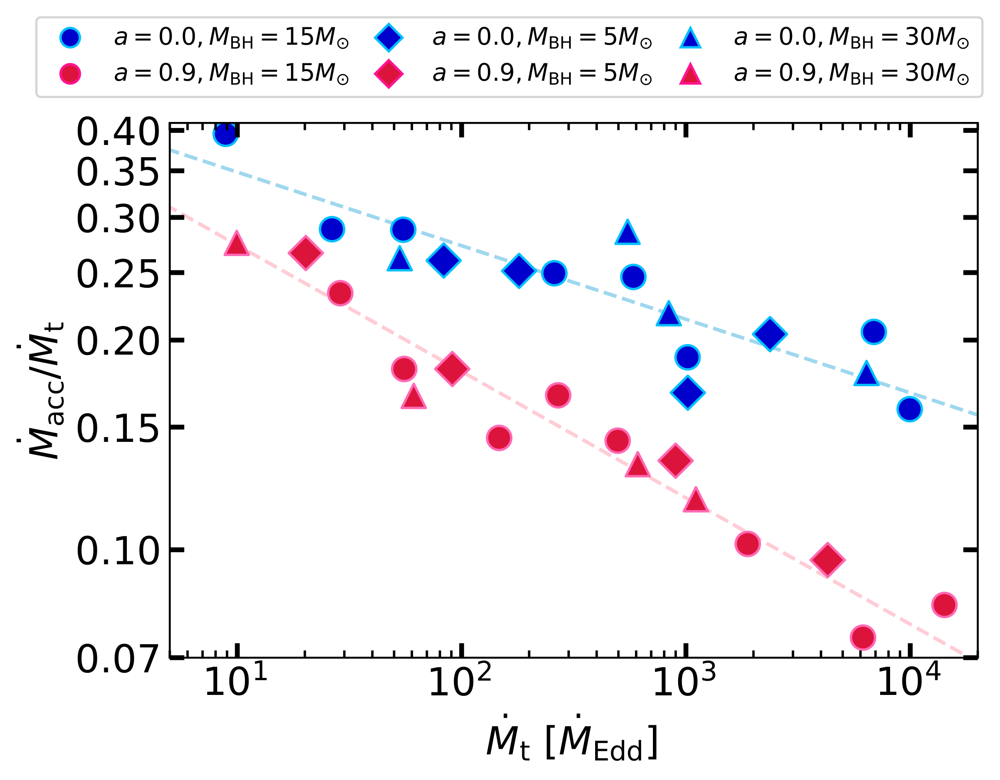
图注：Ratio of BH accretion rate to total mass-supply rate, $\dot{M}_{\rm acc}/\dot{M}_{\rm t}$, as a function of $\dot{M}_{\rm t}$. The total mass-supply is defined as $\dot{M}_{\rm t}=\dot{M}_{\rm acc}+\dot{M}_{\rm wind}$, where the wind rate is measured at $r = 2000 r_g$. Different symbols represent BH masses ($5$, $15$, and $30 M_\odot$); colours distinguish BH spins ($a = 0$ in blue, $a = 0.9$ in red). Colored dashed lines indicate best-fit power-law relations. The ratio decreases with increasing mass supply rate and is systematically lower for $a = 0.9$ than for $a = 0$.
对应解读：对应“建议重点查看的图表”第2项，以及“关键图表逐图导读”图2中关于 \(\dot M_{\rm acc}\)、\(\dot M_{\rm wind}\) 质量分流和 \(f_{\rm BH}\approx0.1-0.4\) 的结论。
入选理由：该图直接绘制黑洞吸积率占总供给率的比例 \(\dot M_{\rm acc}/\dot M_t\)，其中 \(\dot M_t=\dot M_{\rm acc}+\dot M_{\rm wind}\)，最清楚地展示只有少部分供给质量进入黑洞、大部分被风带走。颜色区分自旋、符号区分质量，并给出幂律拟合，能同时支撑吸积比例随供给率下降、高自旋更低和质量无关性的判断。
来源与置信度：\(arxiv_source\)；high；\(arxiv_source\) / main.tex:figure[8]
Fig02
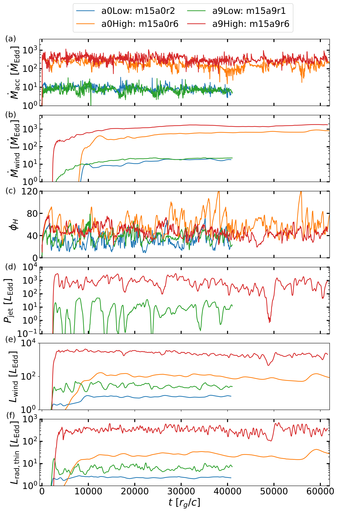
图注：Time evolution of accretion and outflow properties in the four fiducial models (see Table \ref{tab:selected_models}). From top to bottom panel: (a) BH mass accretion rate $\dot{M}_{\rm acc}$, (b) wind-loss rate $\dot{M}_{\rm wind}$, (c) dimensionless magnetic flux at the horizon (the MADness parameter) $\phi_H$, (d) jet total power $P_{\rm jet}$, (e) wind total power $L_{\rm wind}$, and (f) radiative luminosity $L_{\rm{}rad}$ from the outflow region outside the effective photosphere. All outflow quantities (b, d, e and f) are evaluated at $r=2000\, r_g$.
对应解读：对应“建议重点查看的图表”第2项和第7项，以及“模型拟合”中关于时间平均波动、准稳态区间和间歇性系统误差的提醒。
入选理由：该图展示四个代表模型的时间序列，包含黑洞吸积率、风质量流率、MADness 参数 \(\phi_H\)、喷流功率、风功率和辐射光度。它不是只给平均标度，而是能检查模型是否达到 MAD 饱和、喷流和风是否高度间歇，以及平均效率是否可能受时间波动影响，因此对评估模拟结果可靠性非常重要。
来源与置信度：\(arxiv_source\)；high；\(arxiv_source\) / main.tex:figure[2]
Fig06
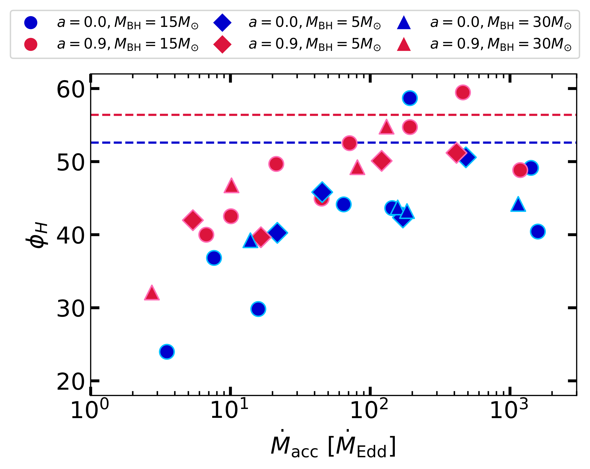
图注：Dimensionless magnetic flux threading the BH horizon $\phi_H$, as a function of mass accretion rate $\dot{M}_{\rm acc}$ for all simulations. Blue and red dashed lines indicate the saturated values found in nonradiative MAD simulations for $a=0$ and $a=0.9$, respectively. The value of $\phi_H$ increases with $\dot{m}$ over $1 \lesssim \dot{m} \lesssim 100$, reaches a maximum around $\dot{m}\sim100$, and declines at the highest accretion rates.
对应解读：对应“建议重点查看的图表”第1项、第4项，以及“关键图表逐图导读”图4中要求同时检查 \(\Phi_{\rm BH}\) 或 MAD 参数的部分。
入选理由：该图汇总所有模拟的黑洞视界无量纲磁通量 \(\phi_H\) 随 \(\dot M_{\rm acc}\) 的变化，并标出非辐射 MAD 模拟的饱和值。它能验证不同模型是否处于强磁化/MAD 状态，也能辅助解释 Fig05 中喷流功率在 \(\dot m\sim100\) 后饱和是否与磁通量达到峰值并在更高吸积率下降有关。
来源与置信度：\(arxiv_source\)；high；\(arxiv_source\) / main.tex:figure[6]
强相关工作
这篇工作与几条研究线直接相连。同类模拟包括超临界盘 GRRMHD、MAD 盘喷流和辐射束射研究；基础理论包括 Shakura-Sunyaev 超临界盘、Blandford-Znajek 机制和 MAD 概念。建议检索关键词包括 “super-Eddington GRRMHD MAD accretion”, “ultraluminous X-ray sources beaming”, “Blandford Znajek magnetically arrested disk”, “supercritical accretion winds”。
与观测工作的关系主要在 ULX 解释上。ULX 领域长期存在恒星质量黑洞加束射、中等质量黑洞、以及中子星超临界吸积之间的解释张力。本文支持一种观点：至少部分极亮表观光度可由恒星质量黑洞在高 \(\dot m\)、高自旋和小视角下产生，但这并不自动排除中子星 ULX 或中等质量黑洞候选。相反观点或需谨慎比较的工作包括主张某些源需要中等质量黑洞质量的动力学或谱态研究，以及认为风再处理会显著改变内区辐射可见性的光谱模型。
同一事件 / 同类源线索：
相似工作：
基础理论 / 方法工作：
- https://ui.adsabs.harvard.edu/abs/1973A%26A....24..337S/abstract
- https://ui.adsabs.harvard.edu/abs/1977MNRAS.179..433B/abstract
- https://ui.adsabs.harvard.edu/abs/2003PASP..115..709N/abstract
- https://ui.adsabs.harvard.edu/abs/2011MNRAS.418L..79T/abstract
相反观点 / 张力线索：
6. Peering through the dip: IXPE unveils the extended scattering environment of GX 13+1
- 来源：arXiv / astro-ph.HE
- 链接：https://arxiv.org/abs/2607.28714v1
- 作者：Alessandro Di Marco, Fabio La Monaca, Luigi Stella, Anagha P. Nitindala, Alexandra Veledina, Anna Bobrikova, Eleonora Veronica Lai, Alessandro Papitto
- 评分：novelty 8/10，importance 8/10，relevance 8/10，final 9.00/10
- 推荐理由：IXPE、NuSTAR、Swift联合观测GX 13+1 dipping过程，给出显著偏振角旋转和散射介质几何约束；是X射线偏振在致密双星吸积结构中的清楚观测结果。
中文题目：穿过掩食低谷看结构：IXPE 揭示 GX 13+1 周围的延展散射环境
做了什么：这篇论文用 IXPE、NuSTAR 和 Swift-XRT 对高倾角中子星低质量 X 射线双星 GX 13+1 做了一次围绕周期性 dip 的协同观测，核心目标是把普通能谱/光变的吸收信息和 X 射线偏振信息结合起来，反推出盘周散射介质的几何。结果显示，dip 中心偏振度升到约 \(9\%\)，显著性超过 \(8\sigma\)，从 dip 到后续非 dip 态偏振角还旋转了约 \(60^\circ\)，且 dip 态偏振有能量依赖。作者用两类几何解释这些变化：一种是扁椭球状延展吸积盘冕，要求赤道半径至少为极向半径的 \(1.5\) 倍、光学深度约 \(0.3\)；另一种是盘风散射，最可能电子密度约 \(1.3\times10^{14}\,\mathrm{cm^{-3}}\)、开角约 \(40^\circ\)、光学深度约 \(0.2\)。这说明 dip 不只是“被遮住变暗”，而是提供了选择性屏蔽直射光、放大散射光偏振信号的天然实验。
为什么重要：GX 13+1 这类高倾角 dipping 源长期被用来研究吸收、盘风和盘冕，但传统光谱很容易在柱密度、覆盖因子、电离度和连续谱变化之间退化。IXPE 给出的偏振度 \(\mathrm{PD}\) 和偏振角 \(\mathrm{PA}\) 是几何敏感量，尤其在 dip 期间直射成分被压低后，散射环境的形状、方位和光学深度会更直接地写入偏振信号。这篇文章的重要性在于，它把 X 射线偏振从“发现某源有偏振”推进到“用相位/状态依赖偏振约束盘冕或盘风几何”。
理论 / 观测 / 仪器方法价值：对理论而言，本文给出了可检验的散射几何约束：延展盘冕需要明显扁平化，或盘风需要特定开角和密度范围。对观测而言，它展示了 coordinated polarimetry 加宽带光谱在 dipping LMXB 中的诊断力，提示 dip 中心可能是测量散射介质的最佳窗口。对方法而言，它强调应联合拟合光变、能谱和 Stokes 参数，而不是只用强度谱讨论吸收。对未来仪器和观测策略而言，本文说明偏振相位分辨观测可以把高倾角双星变成三维几何探针。
为什么应该关注：如果你关心中子星 LMXB 的盘风、吸积盘冕、边缘增亮散射或高倾角源的连续谱解释，这篇文章值得读，因为它直接给出了传统能谱很难单独得到的几何量。它还提醒我们，dip 期间的偏振增强并不一定意味着本征辐射机制突然改变，更可能是直射与散射成分权重变化造成的观测选择效应。未来对其他 dipping 源、Z 源或 atoll 源做 IXPE/后续偏振观测时，这篇论文会是很有用的建模模板。
展开详细解读：文章讲解、背景、理论、重点章节、图表与相关工作
文章详细讲解
科学问题：GX 13+1 是一个高倾角中子星低质量 X 射线双星，光变中出现周期性 dip，通常解释为盘外缘结构、盘风或加厚物质沿视线遮挡中央 X 射线源。传统 X 射线光谱能看见吸收增强、软硬能段变化和可能的电离吸收线，但这些量很难唯一地区分“扁平延展盘冕”与“盘风散射”这样的三维结构。本文的问题不是简单测量 GX 13+1 在 dip 中有多暗，而是问：当直射光被部分遮挡时，剩下的散射光是否携带可测偏振？偏振度 \(\mathrm{PD}\) 和偏振角 \(\mathrm{PA}\) 能否约束散射介质的形状、光学深度和方向？
作者怎么做：作者组织了 IXPE、NuSTAR 和 Swift-XRT 的协同观测，这是第一次专门围绕 GX 13+1 周期性 dip 设计的这类多仪器观测。IXPE 提供 \(2\)--\(8\,\mathrm{keV}\) 左右的 X 射线偏振信息，NuSTAR 提供更硬能段的宽带谱约束，Swift-XRT 补充软 X 射线监测和状态判别。分析上，作者把观测按 dip 中心、dip 过渡和 off-dip 等状态切分，比较各状态下强度谱、硬度、\(Q\) 与 \(U\) Stokes 参数、\(\mathrm{PD}\) 和 \(\mathrm{PA}\)。这种做法的关键在于，dip 是一种时间选择器：它改变直射光和散射光的相对权重，因此能把原本被直射强光淹没的散射偏振显露出来。
关键结果：论文报告 dip 中心 \(\mathrm{PD}\) 达到约 \(9\%\)，置信度超过 \(8\sigma\)，这不是边缘信号，而是非常强的偏振检测。更重要的是，从 dip 到随后的 off-dip 态，\(\mathrm{PA}\) 发生约 \(60^\circ\) 的显著旋转，说明不同状态下主导观测光子的传播路径或散射平面不同。dip 态还表现出能量依赖偏振，意味着低能和高能光子并非简单共享同一个几何成分；吸收、散射和连续谱成分的相对贡献随能量改变。几何建模给出两种可行解释：若采用扁椭球状延展吸积盘冕，则赤道方向尺度至少是极向尺度的 \(1.5\) 倍，且 \(\tau\sim0.3\)；若采用盘风散射，则偏好的电子密度为 \(1.3\times10^{14}\,\mathrm{cm^{-3}}\)，开角约 \(40^\circ\)，对应 \(\tau\sim0.2\)。
局限和下一步：从摘要可知，当前结果能把几何限制到“扁平 ADC”或“盘风”这两类情景，但两者都能解释主要偏振行为，因此并未完全打破几何退化。限制主要来自单源、单次协同观测、dip 相位覆盖、偏振计数统计、连续谱模型和散射介质参数化。下一步应包括：对多个 dip 周期重复观测，检查 \(\mathrm{PA}\) 旋转是否相位锁定；把吸收线速度、等效宽度和电离参数与偏振模型联合拟合；用 Monte Carlo 辐射转移替代理想化解析几何；并在其他高倾角 LMXB 中检验 \(\mathrm{PD}\) 峰值是否普遍出现在 dip 中心。
关键结果是怎么做出来的
本文最核心的证据链是状态分辨偏振。样本并不是一个大源表，而是 GX 13+1 的一次专门协同 campaign；作者用 IXPE 捕捉偏振，用 NuSTAR 和 Swift-XRT 限制同一时期的能谱状态和 dip 发生时间。事件数、曝光分布和各状态的筛选边界需要读者在论文的数据表或观测日志中核对；从摘要可确定的是，分析至少区分了 dip 中心和之后的 off-dip 状态，并围绕周期性 dip 进行了相位/时间切分。这里的“样本量”更应理解为状态分箱后的 IXPE 有效光子统计，而不是源的数量。
偏振检测的统计量来自 Stokes 空间而非只来自光变幅度。IXPE 对每个事件给出与光电子发射角相关的调制信息，经过仪器响应和背景处理后得到归一化的 \(q\) 和 \(u\)，再换算为 \(\mathrm{PD}\) 和 \(\mathrm{PA}\)。论文报告 dip 中心 \(\mathrm{PD}\approx9\%\)，超过 \(8\sigma\) 置信水平；这意味着在 \((Q,U)\) 平面上，信号点远离零偏振点，且不能由统计涨落或普通强度变化解释。读者应重点看 \(Q\)-\(U\) 置信椭圆或 \(\mathrm{PD}\)-\(\mathrm{PA}\) 置信等高线，而不只看标称 \(\mathrm{PD}\) 数字。
偏振角旋转是第二个关键结果。从 dip 到后续 off-dip，\(\mathrm{PA}\) 变化约 \(60^\circ\)，如果该旋转的置信区间与系统误差预算相比仍然很大，就说明几何主轴或主导散射区域发生了可观测转换。支撑这一点的图表通常应包括状态分辨偏振向量图、随时间或相位变化的 \(\mathrm{PD}\) 与 \(\mathrm{PA}\)，以及能谱状态图。这里不能把 \(\mathrm{PA}\) 旋转简单等同于吸积盘物理轴真的旋转；更合理的解释是不同成分的相对通量变化导致合成 Stokes 向量方向改变。
第三个关键结果是 dip 态的能量依赖偏振。作者显然把 IXPE 能段进一步分箱，比较不同能量段的 \(\mathrm{PD}\) 和 \(\mathrm{PA}\)。这一步非常重要，因为若偏振只来自单一、能量无关的 Thomson 散射几何，则 \(\mathrm{PA}\) 通常应较稳定，\(\mathrm{PD}\) 的能量变化也主要由成分稀释决定；若出现明显能量依赖，则需要考虑吸收边、不同连续谱成分、盘冕温度结构或盘风电离结构。读者应检查能量分箱是否有足够统计量，以及是否做了合并分箱或模型依赖的偏振谱拟合。
模型比较方面，作者给出两类可行几何：扁椭球 ADC 与盘风散射。摘要中没有给出贝叶斯因子、\(\Delta\chi^2\)、AIC/BIC 或后验证据的具体数值，因此读者应在正文中寻找模型似然、参数置信区间和残差图。ADC 模型的关键参数是赤道半径与极向半径之比以及 \(\tau\)，盘风模型的关键参数是电子密度、开角和光学深度。稳健性检验应关注背景偏振、源外区选择、IXPE 调制因子标定、dip 边界选择、NuSTAR/Swift 交叉归一化和连续谱模型更换后几何参数是否稳定。
展开背景、理论、公式、模型、章节和图表导读
背景知识
GX 13+1 属于中子星低质量 X 射线双星，伴星物质经 Roche lobe 溢流进入吸积盘，内盘和中子星边界层释放 X 射线。它长期被认为是高倾角系统之一，因为光变出现 dip，并且许多高倾角 LMXB 会显示由盘外缘、吸积流撞击区或盘风造成的周期性遮挡。高倾角是优势也是麻烦：优势是视线穿过盘面附近物质，对盘风和盘冕敏感；麻烦是直射、吸收、散射和遮挡几乎总是混在一起。
历史上，dipping LMXB 的解释主要依靠 X 射线光变和能谱。dip 期间软 X 射线更容易被吸收，所以硬度会变化；若存在电离吸收线，还能估计风的速度、电离参数和柱密度。但只靠能谱常出现多重退化：连续谱本身变软或变硬、局部覆盖吸收、散射损失和反射增强都可能产生相似的谱形。于是，“盘风”和“吸积盘冕”常常都能解释同一套强度谱。
IXPE 改变了这个局面，因为偏振是对几何高度敏感的观测量。Thomson/Compton 散射会让电场矢量偏好垂直于散射平面，因而 \(\mathrm{PD}\) 和 \(\mathrm{PA}\) 记录了光子最后一次散射的位置分布。当直射光很强时，散射偏振会被无偏或低偏振直射成分稀释；当 dip 遮挡直射光时，散射成分占比上升，偏振信号反而可能增强。因此 dip 不是坏数据，而是提供了增强几何信号的窗口。
为什么现在值得重新看？因为 IXPE 已经具备对亮 X 射线双星做状态分辨偏振的能力，同时 NuSTAR 和 Swift-XRT 能补足宽带谱与时间覆盖。对 GX 13+1 这种亮源，偏振统计足以在 dip 内部分箱，进而看 \(\mathrm{PD}\)、\(\mathrm{PA}\) 和能量依赖如何同步变化。过去对 ADC 大小和盘风开角的估计多依赖间接谱模型，现在可以用偏振几何给出独立约束。
该领域常见误区之一是把 dip 期间的光变都理解成冷吸收。实际上，高电离风、部分覆盖、灰色散射和几何遮挡都可能参与。另一个误区是把高 \(\mathrm{PD}\) 直接归因于某种本征发射机制改变；在高倾角 LMXB 中，成分稀释效应同样可以让观测 \(\mathrm{PD}\) 剧烈变化。第三个误区是把 \(\mathrm{PA}\) 当作某条固定物理轴的直接投影；若存在多个偏振成分，合成 \(\mathrm{PA}\) 会随相对通量改变而旋转。
基础理论 / 方法脉络
基本物理图像是：中央 X 射线来自内盘、边界层和可能的热 Compton 化区域，外部存在盘面附近的电子散射介质。对于光学深度不太大的电子云或盘风，许多光子直接到达观测者，另一些光子经历一次或少数几次 Thomson/Compton 散射。散射会引入线偏振，偏振方向与入射和出射方向构成的散射平面垂直。高倾角系统中特别容易看到这种偏振，因为盘面附近的非球对称结构在天球投影上有明显长短轴。
在 IXPE 分析中，偏振不是通过传统成像直接看到的，而是通过光电子角分布的调制测得。每个 X 射线光子在气体像素探测器中产生光电子轨迹，轨迹初始方向相对于入射偏振方向有调制。把许多事件累积后，可得到 Stokes 参数 \(I\)、\(Q\)、\(U\)，其中 \(I\) 是总强度，\(Q\) 和 \(U\) 表示线偏振在两个相差 \(45^\circ\) 的基底上的投影。\(\mathrm{PD}\) 与 \(\mathrm{PA}\) 是从 \(Q\) 和 \(U\) 派生出来的量。
本文的几何假设可以概括为两类。第一类是延展吸积盘冕 ADC：散射电子分布围绕盘面对称，但不是球形，而是赤道方向更宽、极向更薄的扁椭球。此时 \(\mathrm{PD}\) 对轴比、倾角和光学深度敏感。第二类是盘风：电子沿盘面上方某一开角分布，视线在 dip 期间穿过或接近该结构。盘风的密度、开角和径向尺度共同决定 \(\tau\)，而 \(\tau\) 决定散射光占比和偏振强度。
关键退化来自成分混合。观测到的 Stokes 向量是多个辐射成分的矢量和：直射连续谱可能低偏振，散射光偏振较高，反射成分可能有另一偏振方向，吸收会按能量改变各成分权重。因此 \(\mathrm{PD}\) 变大不一定代表单个散射区更有效，也可能只是直射光被遮挡。\(\mathrm{PA}\) 旋转也不一定要求物理结构旋转，而可能是两个近似正交或斜交的偏振分量交替主导。
系统误差方面，需要同时考虑 IXPE 的调制因子、背景估计、源区选择、能量重建、死时间和与 NuSTAR/Swift 的非同时性或交叉定标。对于 dip 源，还要注意相位分箱是否把不同物理状态混在一起；若 dip 边界选得过宽，偏振峰值会被过渡态稀释；若选得过窄，统计误差又会上升。
公式与推导
第一步，从单次 Thomson 散射的角分布出发。对未偏振入射光，散射到方向 \(\theta\) 的微分截面为
其中 \(r_{\rm e}\) 是经典电子半径，\(\theta\) 是散射角。这个式子说明散射不是各向同性的，几何角度会影响进入观测方向的光子数。
第二步，单次散射产生的线偏振度为
当 \( heta=90^\circ\) 时，\(P_{\rm sc}\) 最大；当前向或后向散射时，\(P_{\rm sc}\) 接近零。本文讨论的高倾角盘面散射之所以偏振强，就是因为投影几何容易给出较大的有效散射角和非球对称权重。
第三步，用光学深度连接电子分布与散射概率。沿路径 \(s\) 的 Thomson 光学深度为
其中 \(n_{\rm e}\) 是电子数密度，\(\sigma_{\rm T}\) 是 Thomson 截面。若 \(\tau_{\rm T}\ll1\)，单次散射近似成立，散射光比例约随 \(\tau_{\rm T}\) 线性增加。本文得到的 \(\tau\sim0.2\)--\(0.3\) 正处于“散射明显但多重散射未完全主导”的范围。
第四步，对盘风参数可写成尺度估计
其中 \(\Delta R\) 是视线穿过风的等效路径长度。若给定 \(n_{\rm e}\approx1.3\times10^{14}\,\mathrm{cm^{-3}}\) 和 \( au_{\rm wind}\sim0.2\)，读者可反推模型隐含的 \(\Delta R\) 量级，并检查它是否与盘尺度、轨道尺度和电离参数相容。
第五步，IXPE 实际测量的是 Stokes 参数。对总光子权重求和后可写为
其中 \(\mu\) 是仪器调制因子；若分析产品已校正 \(\mu\)，则 \(\mathrm{PD}=\sqrt{q^{2}+u^{2}}\)。这个式子说明 \(\mathrm{PD}\) 是 \((q,u)\) 平面中离原点的距离。
第六步，偏振角由
给出。前面的 \(1/2\) 来自线偏振方向的 \(180^\circ\) 周期性。本文报告约 \(60^\circ\) 的 \(\mathrm{PA}\) 旋转，本质上就是观测 Stokes 向量在 \((q,u)\) 平面中方向发生了显著改变。
第七步，多个辐射成分混合时，Stokes 量线性相加：
其中 \(I_{k}\)、\(P_{k}\)、\(\psi_{k}\) 分别是第 \(k\) 个成分的强度、偏振度和偏振角。dip 期间若直射成分 \(I_{\rm dir}\) 下降，而散射成分 \(I_{\rm sc}\) 相对增强，合成 \(\mathrm{PD}\) 和 \(\mathrm{PA}\) 都会变化。
第八步，偏振稀释可用一个简单极限表示：
这里假设直射成分近似无偏振，且只有一个散射成分。dip 的作用是降低 \(I_{\rm dir}\)，所以即使 \(P_{\rm sc}\) 不变，\(P_{\rm obs}\) 也会升高。这正是理解 dip 中心 \(\mathrm{PD}\approx9\%\) 的基本物理。
第九步，状态分辨拟合常用的统计量可写成 Stokes 空间的高斯近似：
其中 \(q_{i}\) 和 \(u_{i}\) 是第 \(i\) 个能量或时间 bin 的观测值，\(q_{\rm m}\) 和 \(u_{\rm m}\) 是几何模型预测。这个诊断比只拟合 \(\mathrm{PD}\) 更稳健，因为 \(\mathrm{PD}\) 为正定量，在低信噪比下有偏。
第十步，对几何约束可用轴比或风开角参数化。例如扁 ADC 的形状可概括为
其中 \(R_{\rm eq}\) 是赤道半径，\(R_{\rm pol}\) 是极向半径。\(\mathcal{A}>1\) 表示结构扁平，越扁平越能在高倾角下产生非对称散射和较高偏振。
模型拟合 / 应用方法
本文的拟合对象包括强度谱和偏振谱两类信息。强度谱部分需要描述中子星 LMXB 的连续谱、吸收和可能的散射/反射成分；偏振部分则在状态分箱后拟合 \(Q\)、\(U\)、\(\mathrm{PD}\) 和 \(\mathrm{PA}\)。从摘要可以看出，作者至少把数据分为 dip 中心与 off-dip 等状态，并进一步检查了 dip 态能量依赖。实际阅读时应确认他们是先做光谱分解再给每个成分赋予偏振，还是直接用几何散射模型预测 Stokes 量。
参数估计的核心不是单个 \(\mathrm{PD}\) 数字，而是整个 Stokes 向量随状态和能量的变化。ADC 模型中的主要参数包括轴比 \(R_{\rm eq}/R_{\rm pol}\)、光学深度 \(\tau\)、倾角和散射区尺度；盘风模型中的主要参数包括电子密度 \(n_{\rm e}\)、开角、路径长度或特征半径、\(\tau\) 和视线相对风锥的位置。若论文给出后验分布或置信区间，读者应重点看这些参数是否单峰、是否被先验边界截断，以及 ADC 与风模型是否有可区分的残差。
主要退化关系有三类。第一，\(n_{\rm e}\) 与路径长度 \(\Delta R\) 通过 \(\tau\) 强烈退化；若只知道 \(\tau\)，就不能唯一确定密度。第二，散射成分偏振度与直射成分稀释退化；同样的观测 \(\mathrm{PD}\) 可由更强散射偏振或更弱直射稀释产生。第三，倾角、开角和轴比都能改变投影不对称性，因此几何参数之间会相关。能量依赖偏振和同步宽带谱是缓解这些退化的关键。
残差诊断应优先放在 \(q(E,t)\) 和 \(u(E,t)\) 上，而不是只看 \(\mathrm{PD}\) 残差。若模型能拟合 \(\mathrm{PD}\) 但不能拟合 \(\mathrm{PA}\) 旋转，说明它可能只抓住了散射光比例，没有抓住几何方向。若模型能拟合积分能段但不能拟合能量分箱，说明连续谱成分、吸收或电离结构处理不足。若 dip 过渡阶段残差最大，则可能需要时间依赖遮挡或非轴对称盘缘结构。
系统误差包括 IXPE 背景与调制响应、NuSTAR/Swift 交叉定标、dip 相位定义、持续谱模型选择和源本身短时变。由于 GX 13+1 是亮源，统计误差可能不是唯一限制；状态混合和模型简化会变得重要。实际应用上，这类模型可推广到其他 dipping LMXB：先用光变定义几何选择窗口，再用偏振锁定散射方位，最后用宽带光谱约束电离吸收和连续谱。
重点章节 / 结果段落怎么读
数据/观测部分：首先读观测日志和状态筛选。需要确认 IXPE、NuSTAR、Swift-XRT 的时间重叠程度、总曝光、有效曝光、背景处理和 dip 的定义方式。尤其要看作者如何确定“dip 中心”和“off-dip”，因为偏振峰值和 \(\mathrm{PA}\) 旋转都依赖状态分箱。
光变和能谱部分：接着看光变、硬度比和宽带谱拟合。这里的重点不是连续谱模型名字本身，而是 dip 是否主要表现为吸收增强、覆盖因子变化、散射损失或连续谱改变。NuSTAR 的硬 X 射线覆盖能帮助判断 dip 中硬能段是否也被影响，从而区分纯软吸收与几何遮挡/散射。
偏振测量部分：这是全文关键。读者应仔细看 \(Q\)、\(U\)、\(\mathrm{PD}\)、\(\mathrm{PA}\) 的状态分辨结果，特别是 dip 中心 \(\mathrm{PD}\approx9\%\) 和超过 \(8\sigma\) 的检测如何计算。还要看 \(\mathrm{PA}\) 旋转的误差条、置信轮廓和是否做了能量分辨分析。
几何建模部分：重点比较扁 ADC 与盘风模型。ADC 模型中要看轴比 \(R_{\rm eq}/R_{\rm pol}\gtrsim1.5\) 和 \(\tau\sim0.3\) 的约束来自哪些数据点；盘风模型中要看 \(n_{\rm e}\approx1.3\times10^{14}\,\mathrm{cm^{-3}}\)、开角约 \(40^\circ\) 和 \(\tau\sim0.2\) 是否有宽后验或与其他参数相关。
讨论和稳健性部分：最后读作者如何解释两类模型的物理合理性，以及他们是否与以往 GX 13+1 的吸收线、倾角、轨道周期和盘风研究相容。稳健性检验应包括改变状态边界、改变连续谱模型、改变背景和交叉定标、检查仪器系统偏振以及评估模型选择的不唯一性。
建议重点查看的图表
-
光变与 hardness/dip 标记图：看 IXPE、NuSTAR、Swift-XRT 的时间覆盖是否真正跨过 dip，dip 中心与 off-dip 的选择是否清楚，是否存在多个 dip 或过渡态混合。
-
状态分辨能谱图：看 dip 与 off-dip 的谱比，低能吸收、硬能段衰减和残差结构是否支持几何遮挡/散射，而不仅是冷吸收。
-
\((Q,U)\) 置信轮廓图：这是偏振显著性最直接的诊断。重点看 dip 中心的置信椭圆是否远离原点，以及不同状态的椭圆是否彼此分离。
-
\(\mathrm{PD}\) 与 \(\mathrm{PA}\) 随时间或 dip 相位变化图：看 \(\mathrm{PD}\) 峰值是否与 dip 中心同步，\(\mathrm{PA}\) 的约 \(60^\circ\) 旋转是否发生在明确的状态转换处。
-
能量分辨偏振图：看 dip 态中 \(\mathrm{PD}(E)\) 和 \(\mathrm{PA}(E)\) 的趋势，误差条是否足以支持能量依赖，而不是由少数低统计 bin 驱动。
-
几何模型后验或置信区间图：看 ADC 轴比、\(\tau\)、盘风密度和开角之间的相关性，是否存在多峰或先验边界效应。
-
模型残差图：看 ADC 和盘风模型在哪些状态或能段拟合较差，这比单个最佳拟合参数更能说明哪种物理解释更可信。
关键图表逐图导读
图 1：建议首先看多仪器光变图。横轴应是时间、轨道相位或相对 dip 中心时间，纵轴是计数率或通量，可能分不同能段并附 hardness ratio。图上通常会用阴影或竖线标出 dip、dip 中心和 off-dip 区间。主要结论是观测是否真正覆盖了周期性 dip，并且状态分箱是否有物理依据。读图陷阱是不要把所有低计数率区间都自动当作同一物理状态，过渡段混入会稀释偏振变化。
图 2：状态分辨能谱或谱比图应展示 dip 与 off-dip 的宽带差异。横轴是能量，纵轴可能是 unfolded flux、计数谱或 data/model ratio。若 dip 只在低能强烈下降，冷/温吸收解释更强；若硬能段也明显变化，则说明遮挡或散射损失更重要。读图时要看残差是否集中在吸收边、铁线区或高能尾，因为这些残差会影响偏振成分解释。
图 3：\((Q,U)\) 平面图是判断偏振检测和偏振角变化的关键。横轴为 \(q\) 或 \(Q/I\)，纵轴为 \(u\) 或 \(U/I\)，原点代表零偏振，不同颜色代表不同状态或能段。dip 中心点若远离原点且置信轮廓不包含原点，就对应高显著性偏振；不同状态点绕原点方向变化，则对应 \(\mathrm{PA}\) 旋转。陷阱是 \(\mathrm{PD}\) 正定，低信噪比下会偏高，因此应优先信任 Stokes 平面置信轮廓。
图 4：\(\mathrm{PD}\) 和 \(\mathrm{PA}\) 随相位/时间变化图应展示本文最醒目的结论。横轴是 dip 相位或时间，纵轴分别是 \(\mathrm{PD}\) 和 \(\mathrm{PA}\)。应看到 dip 中心 \(\mathrm{PD}\) 升至约 \(9\%\)，并且从 dip 到后续 off-dip 约有 \(60^\circ\) 的 \(\mathrm{PA}\) 转动。读图陷阱是 \(\mathrm{PA}\) 有 \(180^\circ\) 周期性，跨越边界时要用连续展开后的角度理解。
图 5：能量分辨偏振图应把 dip 态分成若干能量 bin。横轴是能量，纵轴是 \(\mathrm{PD}\)、\(\mathrm{PA}\)、\(q\) 或 \(u\)。若不同能段的偏振明显不同，说明简单单成分散射模型不足，必须考虑能量依赖的吸收、散射或谱成分稀释。读图陷阱是高能 bin 统计通常较差，单个偏离点不应过度解释。
图 6：几何模型约束图可能是后验 corner plot、参数置信区间或模型示意图。对 ADC 模型，应看 \(R_{\rm eq}/R_{\rm pol}\) 是否确实要求 \(\gtrsim1.5\)，以及 \(\tau\sim0.3\) 的误差范围；对盘风模型，应看 \(n_{\rm e}\)、开角和 \(\tau\) 的相关性。陷阱是两种模型都能拟合主要特征时，不能只凭最佳拟合值宣布唯一几何。
论文原图 / 可嵌入图片
Fig06
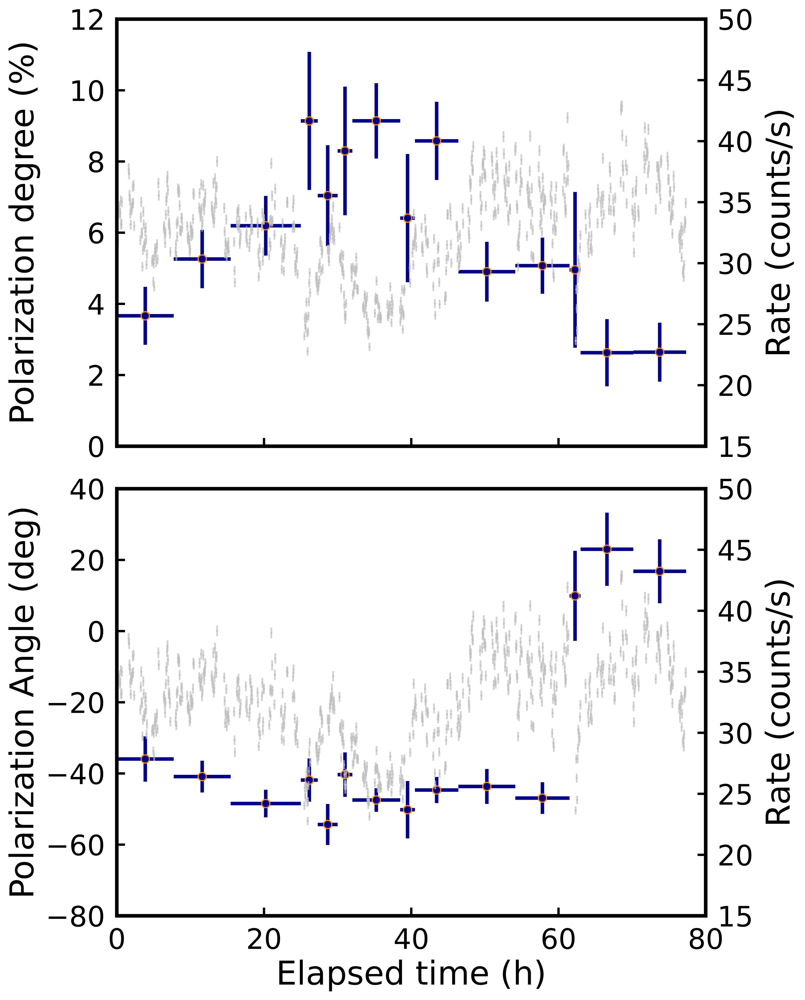
图注：Polarization properties of \(\gx\) as a function of time with narrow selections of the dips. The panels from top to bottom show PD and PA, respectively. The gray points in both panels show the 2--8 keV count rate (right axis). Errors are at 68\% CL.
对应解读：建议重点查看的图表第4项；关键图表逐图导读图4：PD 与 PA 随时间或 dip 相位变化。
入选理由：这张图直接展示本文最核心的观测结果：偏振度和偏振角随时间变化，并把2--8 keV计数率叠加在右轴上，可检验PD峰值是否与dip中心同步，以及从dip到off-dip是否出现约60°的PA旋转。相比只给置信区间的图，它更适合支撑日报对状态转换和dip相位锁定的解读。
来源与置信度：\(arxiv_source\)；high；\(arxiv_source\) / main.tex:figure[6]
Fig04
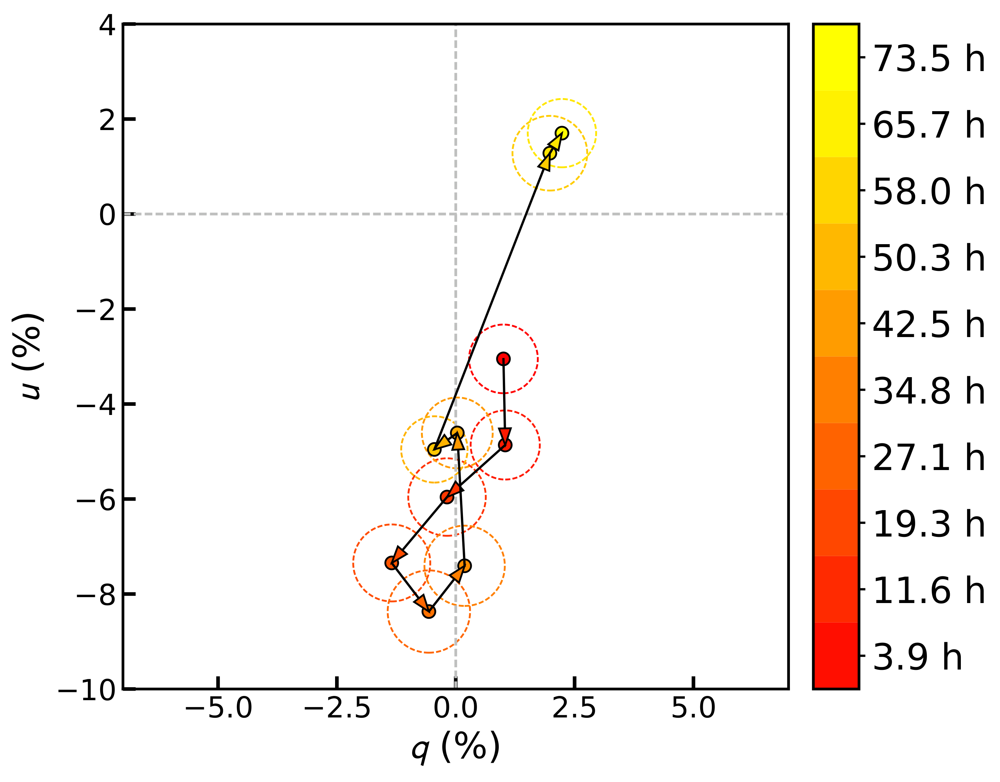
图注：Time dependence of the normalized Stokes parameters $q$ and $u$ using 7.7\,h time bins. The colorbar and the arrows show the time evolution. Confidence regions are reported at 68\% CL.
对应解读：建议重点查看的图表第3项；关键图表逐图导读图3：Stokes参数平面上的偏振显著性和状态分离。
入选理由：虽然日报预期是(Q,U)置信轮廓图，这张图实际给出归一化Stokes参数q、u的时间演化和68%置信区域，是判断偏振变化是否来自真实Stokes向量移动的关键诊断。它能避免只看正定PD导致的偏差，并直接支持PA旋转对应Stokes平面方向变化的解释。
来源与置信度：\(arxiv_source\)；high；\(arxiv_source\) / main.tex:figure[4]
Fig07
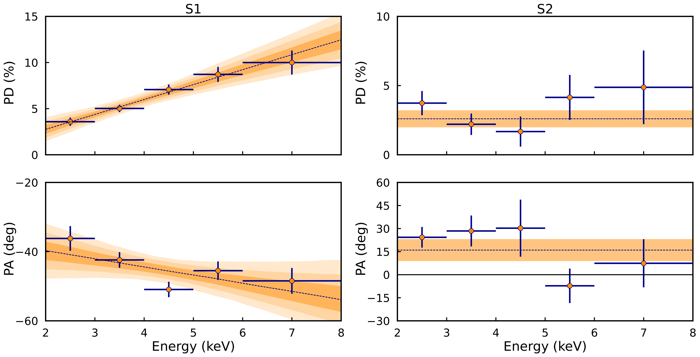
图注：\(\gx\) polarization degree (top) and angle (bottom) as a function of energy for the S1 (left) and the S2 (right) segments. Error bars are at 68\% CL. In the left panels, the blue line represents the best fit for the linear trend, and the shaded regions indicate the uncertainties on it at $1\sigma$, $2\sigma$, and $3\sigma$~CL. In the right panels, the blue lines represent the average PD and PA as obtained in Fig.~\(\ref{fig:pd_flux},\) with orange bars reporting 68\%~CL on these values.
对应解读：建议重点查看的图表第5项；关键图表逐图导读图5：dip态和分段状态的能量分辨偏振。
入选理由：这张图给出S1和S2段中PD、PA随能量的变化，并包含线性趋势最佳拟合及1σ、2σ、3σ不确定区间，最能检验摘要中“dip态存在能量依赖偏振”的说法是否由误差条支持，而不是单个低统计能量bin造成。
来源与置信度：\(arxiv_source\)；high；\(arxiv_source\) / main.tex:figure[7]
Fig01
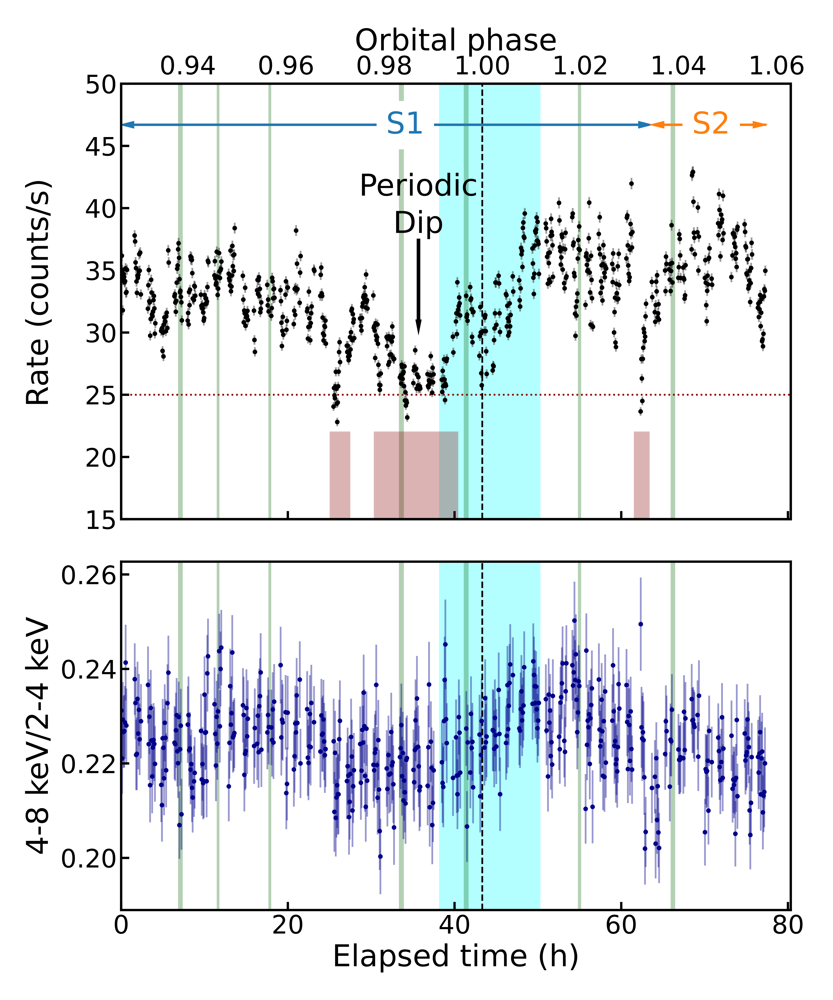
图注：\(\ixpe\) light curve in 2--8\,keV (top) and the hardness ratio (bottom) for the present observation (time bins of 200\,s and 300\,s, respectively). The dashed vertical line reports the expected epoch of the dip, corresponding to orbital phase 1.0. The green and light blue bands report the periods of coverage by \(\swift-XRT\) and \(\nustar,\) respectively. The center of the observed periodic dip is indicated by an arrow, while the dark red bands identify the periods in which two narrow dips are observed (see text). The top horizontal arrows indicate two main segments chosen based on the change of the Stokes parameters (see Sect.~\ref{sec:data_results}).
对应解读：建议重点查看的图表第1项；关键图表逐图导读图1：IXPE、NuSTAR、Swift-XRT的光变、hardness与dip标记。
入选理由：这张图显示IXPE 2--8 keV光变、硬度比、预期dip相位、Swift-XRT和NuSTAR覆盖区间，以及窄dip和主要Stokes分段选择，是判断多仪器观测是否真正覆盖周期性dip、状态分箱是否清楚的基础图。
来源与置信度：\(arxiv_source\)；high；\(arxiv_source\) / main.tex:figure[1]
Fig10
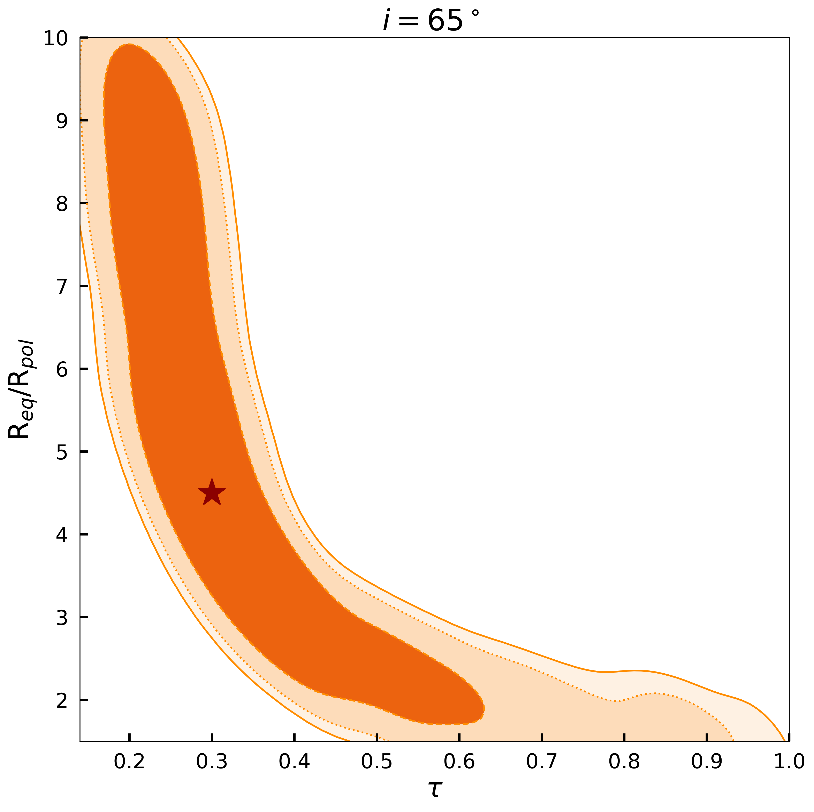
图注：Constraints for the ADC geometry reported in Fig.~\(\ref{fig:geom}--top,\) when Eq.~\(\ref{eq:pd_adc}\) is applied to the $\textrm{PD}=9.1\% \pm 1.1\%$, as measured at the center of the periodic dip, assuming an inclination of 65\degr. The star marker is the most probable value, while contours show the allowed regions at 68\%, 90\% and 95\% CL, respectively.
对应解读：建议重点查看的图表第6项；关键图表逐图导读图6和模型拟合段落：ADC几何模型约束。
入选理由：这张图给出ADC模型在dip中心PD=9.1%±1.1%、倾角65°假设下的参数约束，包含最可能值和68%、90%、95%置信轮廓，可直接检查赤道/极向尺度比和光学深度等几何参数是否真的受到偏振数据限制。
来源与置信度：\(arxiv_source\)；high；\(arxiv_source\) / main.tex:figure[10]
Fig11
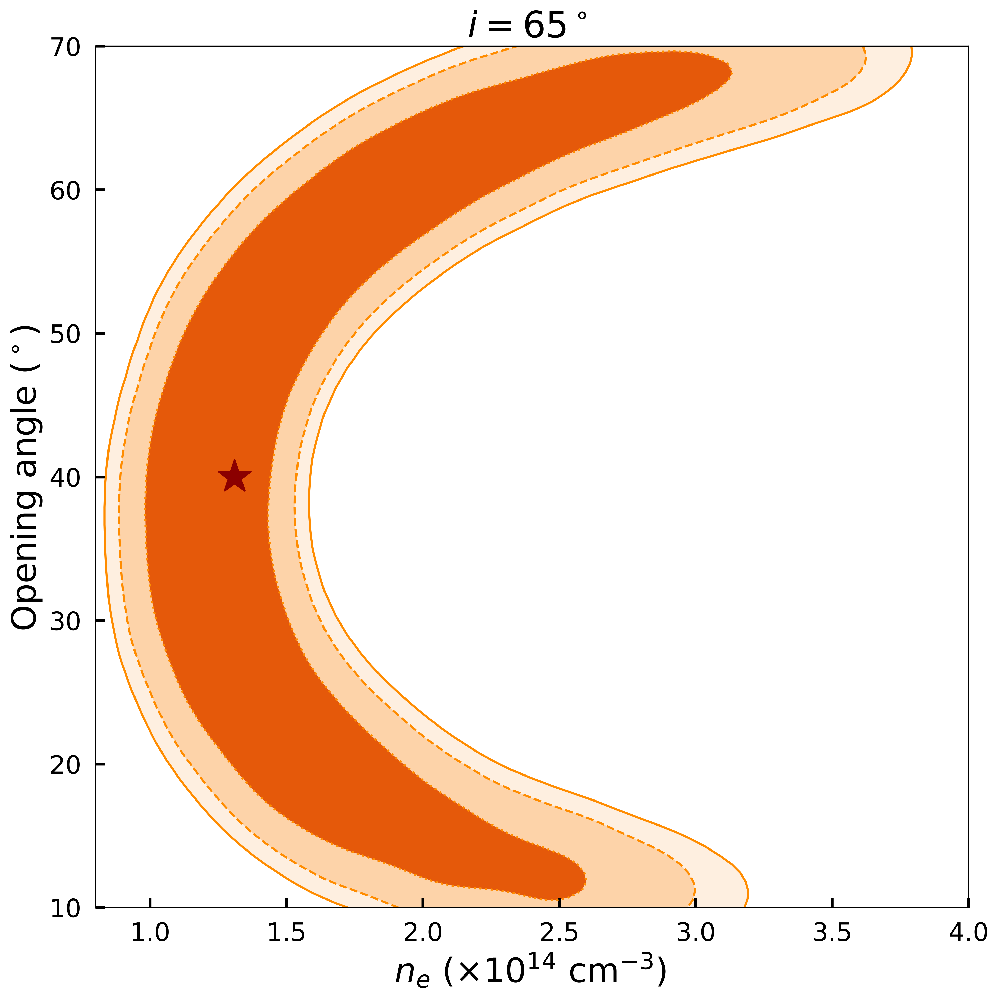
图注：Constraints for the DW geometry reported in Fig.~\(\ref{fig:geom}--bottom,\) when Eq.~\(\ref{eq:pd_dw}\) is applied to the $\textrm{PD}=9.1\% \pm 1.1\%$, as measured at the center of the periodic dip, assuming an inclination of 65\degr. The star marker is the most probable value, while contours show the allowed regions at 68\%, 90\% and 95\% CL, respectively.
对应解读：建议重点查看的图表第6项；关键图表逐图导读图6和模型拟合段落：盘风几何模型约束。
入选理由：这张图是盘风模型对应的参数约束图，包含最可能值和多级置信轮廓，能与ADC约束图并列比较，支撑日报中关于盘风电子密度、开角和光学深度退化关系及两类几何模型并存的讨论。
来源与置信度：\(arxiv_source\)；high；\(arxiv_source\) / main.tex:figure[11]
强相关工作
这篇工作应放在三个脉络里读。第一是同一源 GX 13+1 的历史 X 射线光谱、dip 和盘风研究；检索关键词可用 “GX 13+1 dipping source”, “GX 13+1 disk wind”, “GX 13+1 XMM Newton Chandra absorption lines”, “GX 13+1 inclination”。这些研究通常提供电离吸收线、柱密度、速度和倾角约束，可与本文的 \(n_{\rm e}\)、开角和 \(\tau\) 互相检验。第二是同类高倾角 LMXB 的 dipping 和 ADC 研究；检索关键词包括 “dipping low mass X-ray binaries accretion disk corona”, “extended ADC LMXB”, “X-ray polarimetry neutron star LMXB”.
第三是 IXPE 对 X 射线双星的偏振观测系列。许多 IXPE 结果已经显示，中子星和黑洞 XRB 的 \(\mathrm{PD}\) 与 \(\mathrm{PA}\) 对吸积状态、倾角和散射几何非常敏感；本文的特色在于利用 dip 这个自然遮挡实验把散射环境凸显出来。可能的相反观点或张力来自传统谱模型：有些谱拟合可能用复杂部分覆盖吸收解释 dip，而不需要明显延展散射结构；本文的偏振角旋转和高 \(\mathrm{PD}\) 正是检验这些解释是否充分的新约束。
同一事件 / 同类源线索：
- https://arxiv.org/abs/2607.28714
- https://arxiv.org/pdf/2607.28714
- https://simbad.cds.unistra.fr/simbad/sim-id?Ident=GX%2013%2B1
- https://ixpe.msfc.nasa.gov/
相似工作：
（未提供）
基础理论 / 方法工作：
相反观点 / 张力线索：
（未提供）
7. Energy-dependent Optical/Near-infrared and X-ray Correlations in Swift J1727.8-1613
- 来源：arXiv / astro-ph.HE
- 链接：https://arxiv.org/abs/2607.28852v1
- 作者：Ruican Ma, Federico Vincentelli, Diego Altamirano, Alexandra Veledina, Poshak Gandhi, Piergiorgio Casella, Tariq Shahbaz, Sian Woahene-Demehin
- 评分：novelty 7/10，importance 8/10，relevance 8/10，final 8.70/10
- 推荐理由：Swift J1727.8-1613的同步X射线到OIR快速时变和QPO相关分析，能量依赖滞后揭示喷流/热流耦合，对黑洞X射线双星高能时域研究值得阅读。
中文题目：Swift J1727.8-1613 中光学/近红外与 X 射线相关性的能量依赖
做了什么：这篇文章分析黑洞 X 射线暂现源 Swift J1727.8-1613 在中间态的一组严格同时观测：Insight-HXMT 覆盖 \(2\text{--}150\,\mathrm{keV}\) 的 X 射线，ULTRACAM 覆盖 \(g_s\)、\(i_s\) 光学，HAWK-I 覆盖 \(K_s\) 近红外。作者重点不是做平均谱，而是做快速时变：功率谱、互相关、相干性和能量分辨时延。结果显示，\(K_s\)、\(i_s\) 与 X 射线都有强准周期振荡，宽带互相关同时包含延迟的光学反相关、强红外正相关，并且这些结构随 X 射线能量明显改变；但在准周期振荡频率处，光学/近红外相对 X 射线的时延约为 \(60\text{--}80\,\mathrm{ms}\)，一直延伸到 \(150\,\mathrm{keV}\) 且能量依赖不强。作者据此认为单一再处理或单一喷流区难以解释全部现象，更像是小尺度喷流与热吸积流、甚至多个 Comptonisation 区域共同参与。
为什么重要：黑洞 X 射线双星的喷流、热内流和冷盘之间到底如何在毫秒到秒尺度耦合，是理解吸积态转换的核心问题。Swift J1727.8-1613 的亮度高、时变强，且这次观测同时覆盖光学、近红外和硬 X 射线到 \(150\,\mathrm{keV}\)，使它成为检验喷流底部、热 Compton 化区和盘再处理之间因果关系的优质样本。尤其重要的是，文章把互相关特征按 X 射线能量拆开，直接触及不同高能辐射区域是否具有不同几何和响应时间的问题。
理论 / 观测 / 仪器方法价值：对理论而言，这篇文章给出了比单波段功率谱更强的约束：模型不仅要产生 QPO，还要同时解释光学反相关、红外正相关、\(60\text{--}80\,\mathrm{ms}\) 的 QPO 时延以及宽能段硬 X 射线的一致性。对观测而言，它展示了多波段高速光变与能量分辨 X 射线时序结合的诊断能力。对方法而言，它强调不能只看全能段 X 射线与 OIR 的平均互相关，因为不同 X 射线能段可能混合了不同 Comptonisation 区的贡献。
为什么应该关注：如果你关心黑洞双星喷流如何被吸积流驱动，这篇文章值得读，因为它把“喷流—内流耦合”从概念图推进到可测时延和能量依赖。如果你做 X 射线时序，它提醒你 QPO 频率处的相位滞后和宽带互相关可能在物理上不是同一个成分。如果你做多波段观测规划，它说明毫秒级 OIR 数据和硬 X 射线同时覆盖能直接区分再处理、同步辐射和 Compton 化几何。
展开详细解读：文章讲解、背景、理论、重点章节、图表与相关工作
文章详细讲解
科学问题：黑洞 X 射线暂现源在硬态到软态转换的中间态中，内吸积流、喷流底部和外盘再处理区会同时贡献光学、近红外和 X 射线辐射。Swift J1727.8-1613 在 \(2023\) 年爆发期间非常亮，并表现出强 QPO，因此它提供了一个罕见机会：不只是问某个波段亮不亮，而是问不同波段在 \(10^{-2}\text{--}10^{1}\,\mathrm{s}\) 尺度上谁领先谁、相关还是反相关、这种关系是否随 X 射线能量改变。这个问题重要，因为简单盘再处理通常预期 OIR 滞后 X 射线且为正相关；小尺度喷流同步辐射也可给出短时延正相关；而热内流几何变化或多区 Compton 化则可产生更复杂的正负相关组合。
作者怎么做：文章使用 \(2023\) 年 \(9\) 月 \(9\) 日的协同观测，X 射线来自 Insight-HXMT 的宽能段覆盖，光学来自 ULTRACAM 的 \(g_s\) 与 \(i_s\) 高速测光，近红外来自 HAWK-I 的 \(K_s\) 数据。分析流程围绕时域和频域展开：先构造各波段光变曲线并统一时间基准，再计算 Fourier 功率谱以确认 QPO；随后做 OIR 与 X 射线之间的互相关函数，检查滞后结构；最后把 X 射线分成不同能段，计算能量依赖的互相关、相位滞后和相干性。这样的设计使他们能够分辨“全 X 射线能段平均后看到的相关”是否掩盖了能量相关的内部结构。
关键结果：功率谱中，\(K_s\)、\(i_s\) 和 X 射线都显示强 QPO，说明 OIR 快速变率不是慢速外盘背景的微弱附加，而是与内区动力学相关。宽带互相关更复杂：光学存在延迟反相关成分，即某些 X 射线增强之后，光学在相应滞后处下降；近红外则有强正相关，指向更直接的喷流或热电子辐射联系。最有信息量的是能量依赖：互相关形状和幅度随 X 射线能量明显变化，暗示低能和高能 X 射线并非同一个均匀 Compton 化区的简单缩放。与此同时，在 QPO 频率处 OIR 相对 X 射线的滞后约 \(60\text{--}80\,\mathrm{ms}\)，并且可追踪到 \(150\,\mathrm{keV}\)，没有表现出与宽带互相关同样强的能量依赖。
局限和下一步：这是一组特定日期、特定吸积态的观测，不能直接代表 Swift J1727.8-1613 整个爆发，也不能单凭一晚数据唯一确定几何模型。OIR 波段可能混合喷流同步辐射、盘再处理、热流同步辐射和伴星/外盘慢变背景；X 射线能段也可能混合多个谱成分。下一步需要在不同硬度、不同 QPO 频率和不同亮度阶段重复同样的能量分辨互谱分析，并将时序约束与同时谱拟合、偏振或射电喷流监测结合。理论上，需要构建能同时输出光变、谱形、相位滞后和 QPO 调制的多区模型，而不是只用一个经验滞后时间解释全部现象。
关键结果是怎么做出来的
数据和样本选择方面，本文聚焦一组同时性很强的多设施观测，而不是从整个爆发中堆叠许多不同时态的数据。X 射线由 Insight-HXMT 提供，覆盖 \(2\text{--}150\,\mathrm{keV}\)，这是本工作的关键优势，因为许多 OIR/X 射线相关性研究只覆盖软 X 射线或中等硬 X 射线。OIR 端，ULTRACAM 的 \(g_s\)、\(i_s\) 与 HAWK-I 的 \(K_s\) 提供高速光变，使得作者能比较光学和近红外是否代表同一个辐射成分。读者应特别注意各光变曲线的重叠时段、时间分辨率、去趋势方式以及是否剔除了仪器间不同采样造成的窗口函数效应。
事件数意义在这里不是瞬变搜索中的“多少个事件”，而是时间序列中的有效独立 Fourier 频率、时间段数和能段分箱数。作者通过功率谱确认 QPO 在 \(K_s\)、\(i_s\) 和 X 射线中都显著存在，说明后续相位滞后不是从纯噪声中硬找出来的。关键诊断包括 QPO 峰的中心频率、宽度、品质因子、均方根变率，以及 OIR 与 X 射线 QPO 是否频率一致。若论文表格给出 Lorentzian 拟合参数，应优先检查 QPO 的置信区间是否在各波段重叠，以及 continuum noise 的建模是否会改变 QPO 峰的显著性。
统计链条主要由互相关函数和 Fourier 互谱构成。互相关揭示宽时间尺度上的正负相关结构，例如延迟光学反相关和红外正相关；互谱则在频率空间给出相位差、时延和相干性。本文最核心的证据是：宽带互相关随 X 射线能量明显变化，但 QPO 频率处的 OIR 滞后约 \(60\text{--}80\,\mathrm{ms}\) 且能量依赖弱。换句话说，时间域中混合的响应结构和频率域中 QPO 选择出来的相干调制并不完全相同。读图时要区分 CCF 峰/谷的滞后与 QPO 相位滞后，两者不是自动等价的物理量。
支持结论的图表应包括多波段光变曲线、各波段功率谱、按 X 射线能量分箱的 CCF、QPO 附近的 lag-energy 或 lag-frequency 图，以及相干性图。显著性通常来自功率谱峰相对连续噪声模型的超额、互谱相位误差以及不同能段重复出现同一滞后趋势的稳定性。若作者使用 Monte Carlo、bootstrap、segment averaging 或不同能段划分来估计误差，这些稳健性检验尤其重要，因为 OIR 高速测光容易受大气透明度、seeing、背景扣除和有限采样影响。
系统误差方面，最需要关注三类：第一，绝对时间校准误差是否小于 \(60\text{--}80\,\mathrm{ms}\) 的目标滞后；第二，OIR 慢变趋势或闪烁是否会在 CCF 中制造宽峰或反相关谷；第三，X 射线不同能段信噪比和死时间修正是否会改变硬能段互谱。本文结论的强点是多波段一致性和能量分辨信息，弱点是几何解释仍有非唯一性。一个模型若只解释红外正相关而不解释光学反相关，或只解释 QPO 滞后而不解释宽带 CCF 的能量依赖，都还不是充分模型。
展开背景、理论、公式、模型、章节和图表导读
背景知识
Swift J1727.8-1613 是一个银河系黑洞候选 X 射线暂现源，在爆发期间经历典型的吸积态演化。黑洞 X 射线双星的暂现爆发通常从硬态开始，进入中间态，再可能转入软态，最后衰减回硬态。不同状态对应不同几何：硬态常被理解为截断冷盘加内热流并伴随紧致喷流；软态中冷盘深入内区，稳态喷流被抑制；中间态则是几何快速重组、QPO 活跃和喷流变化最剧烈的阶段。
OIR 与 X 射线快速相关性长期被用作“内区耦合”的探针。若 OIR 主要来自外盘对 X 射线的再处理，预期 OIR 会滞后 X 射线，滞后尺度大致对应光行时和热响应时间，通常比几十毫秒更长，且颜色和转移函数应反映盘半径分布。若 OIR 来自喷流同步辐射，时延可短得多，并可能对应扰动从 X 射线热内流传播到喷流发射区的时间。若 OIR 来自热流内部的同步辐射或同步自 Compton 相关过程，则可能出现更复杂的相位关系甚至反相关。
历史上，XTE J1118+480、GX 339-4、MAXI J1820+070 等黑洞双星都显示过快速 OIR/X 射线相关或反相关结构。这些结果推动了小尺度喷流、磁化热内流、内部激波和 Lense-Thirring 进动等模型的发展。但一个常见问题是，许多研究的 X 射线覆盖较窄，或者只用全 X 射线能段作为参照，因此难以判断不同 X 射线谱成分是否对应不同滞后。Swift J1727.8-1613 这类明亮源使硬 X 射线端也能做高信噪比时序分析，正好补上这一缺口。
现在重新看这个问题的原因是仪器和方法都更成熟了。高速三色光学相机、近红外高速观测和宽能段 X 射线卫星可以在同一晚获得足够高的时间分辨率和能量分辨率；互谱分析也能把 QPO 调制与宽带噪声分开。常见误区是把“某个滞后”直接等同于“某个距离”，例如把 \(70\,\mathrm{ms}\) 简单乘以光速得到发射区尺寸。真实情况中，观测滞后可能是传播时间、冷却时间、辐射转移函数、相位调制和多个成分混合后的有效相位。
另一个误区是认为光学和近红外必然同源。实际上 \(g_s\)、\(i_s\) 和 \(K_s\) 可能处在不同谱段：光学更容易受外盘、热流和再处理影响，近红外更容易受喷流自吸收转折附近的同步辐射影响。因此本文发现光学反相关与红外正相关并存，并不必然矛盾，反而是多成分混合的自然表现。
基础理论 / 方法脉络
基本物理图像可以从扰动传播开始理解。黑洞附近的吸积流会产生质量吸积率、磁场和几何厚度的波动，这些波动改变热电子云的 Compton 化 X 射线输出，也可能沿磁场进入喷流底部并改变同步辐射。若同一个扰动先影响 X 射线、再影响 OIR，就会出现 OIR 滞后；若几何变化导致一个成分增强时另一个成分减弱，就可能出现反相关。QPO 则可以看成某种准周期几何或动力学调制，例如内流进动、振荡激波或辐射区周期性变化。
X 射线端常用热 Compton 化描述：软光子进入热电子区域，被多次散射到更高能量，形成从几 \(\mathrm{keV}\) 到上百 \(\mathrm{keV}\) 的硬谱。若存在多个 Comptonisation 区域，例如一个较软、较冷、较外的区域和一个较硬、较热、较内的区域，那么不同 X 射线能段的光变不一定同步，也不一定以同样方式关联 OIR。本文的能量依赖互相关正是在检验这种多区结构。
OIR 端的候选机制包括外盘再处理、喷流同步辐射、热内流同步辐射以及这些成分的叠加。外盘再处理一般产生较平滑、较长滞后的正相关；喷流同步辐射可在红外更强并具有短滞后；热流同步辐射可能与 X 射线 Compton 化共享电子群，从而产生短时标相关或反相关。不同机制在颜色、滞后、相干性和频率依赖上有不同指纹，因此多波段高速时序比单一平均谱更有判别力。
方法上，互相关函数衡量两个光变在时间平移 \(\tau\) 后的线性相关程度，适合直观看到峰和谷；Fourier 互谱则在每个频率 \(f\) 上衡量相位差，适合隔离 QPO 频率处的行为。若一个宽带 CCF 同时含有多个成分，峰值位置可能不是任何单一物理距离；而 QPO 频率处的相位滞后更像是某个相干调制模式的响应。本文的一个关键信息就是这两类诊断给出的能量依赖不同。
常见退化包括：较长的再处理转移函数与多个短滞后成分叠加可能产生类似宽峰；不同 X 射线能段的谱混合会稀释真实能量依赖；OIR 中稳定盘光会降低变率幅度并改变相关系数；有限时间窗会把低频红噪声泄漏到 QPO 附近。理解这些退化后，读者才能正确评价 \(60\text{--}80\,\mathrm{ms}\) 滞后和能量依赖 CCF 的物理含义。
公式与推导
第一步，把观测光变写成平均值加涨落。对 X 射线能段 \(E\) 与 OIR 波段 \(b\)，可写为
这里 \(x_E(t)\) 是某个 X 射线能段的计数率，\(o_b(t)\) 是 \(g_s\)、\(i_s\) 或 \(K_s\) 的通量或相对通量。去均值后的 \(\delta x_E(t)\) 与 \(\delta o_b(t)\) 才是时序相关分析的对象。
第二步，时间域互相关可定义为
若 \(\tau>0\) 处出现正峰，表示 OIR 滞后 X 射线并同向变化；若 \(\tau>0\) 处出现负谷，表示 OIR 滞后 X 射线但反向变化。本文提到的延迟光学反相关和强红外正相关就是从这类函数中读出的。
第三步，在频域中，对每个分段做 Fourier 变换
功率谱为
QPO 表现为 \(P(f)\) 中叠加在红噪声连续谱上的窄峰，其中心频率和宽度可用 Lorentzian 描述。
第四步，一个常用的 QPO Lorentzian 分量可写成
其中 \(f_0\) 是 QPO 中心频率，\(\Delta\) 是半宽度，\(r\) 对应该分量的分数均方根变率。品质因子为
若 OIR 与 X 射线中的 \(f_0\) 一致，说明它们至少共享同一个准周期调制。
第五步，互谱定义为
其中星号表示复共轭。相位滞后为
本文所谓 QPO 频率处 OIR 滞后约 \(60\text{--}80\,\mathrm{ms}\)，就是在 QPO 频率附近对 \(t_{\rm lag}(f)\) 或相位进行估计。
第六步，相干性衡量两个波段在某个频率上线性相关的程度：
若 \(\gamma^2\) 接近 \(1\)，说明该频率处相位关系稳定；若显著小于 \(1\)，可能是多个不相干成分、噪声或非线性响应混合。解释 QPO 滞后时必须同时看相干性，而不能只看相位。
第七步，多区 Compton 化可以用线性混合的光变近似表达：
其中 \(\delta c_k(t)\) 是第 \(k\) 个 Comptonisation 区的光变，\(w_k(E)\) 是该区对能量 \(E\) 的权重。若不同 \(k\) 有不同滞后或与 OIR 的不同耦合，\(\mathrm{CCF}_{b,E}(\tau)\) 就会随 \(E\) 改变。
第八步，若 OIR 是 X 射线驱动响应的线性卷积，可写成
其中 \(\Psi_b(\tau)\) 是再处理或传播转移函数，\(\delta j_b(t)\) 是喷流或内流的额外本征变率。纯再处理模型要求 \(\Psi_b(\tau)\) 多为正且滞后由几何光行时控制；本文的光学反相关和红外正相关并存说明 \(\delta j_b(t)\) 或多成分混合不可忽略。
第九步，若把滞后粗略解释为传播距离，可得到尺度估计
对 \(t_{\rm lag}\sim 70\,\mathrm{ms}\)，若 \(\beta\sim 1\)，尺度约为 \(2.1\times10^9\,\mathrm{cm}\)。但这只是上限式直觉，因为观测相位滞后可能由辐射冷却、几何相位、多个响应函数叠加和谱混合共同决定。
模型拟合 / 应用方法
本文的拟合核心不是传统意义上的宽带能谱拟合，而是时序模型拟合和统计诊断。功率谱通常需要用若干 Lorentzian 分量加红噪声连续谱描述，其中每个 Lorentzian 对应宽带噪声、QPO 基频或可能的谐波。拟合量包括中心频率 \(f_0\)、宽度 \(\Delta\)、分数均方根 \(r\) 和背景噪声水平。读者应关注 QPO 参数在 \(K_s\)、\(i_s\) 和 X 射线中是否一致，以及连续谱建模的改变是否影响 QPO 的存在性。
互相关分析中的“拟合”更接近响应结构诊断。CCF 的峰、谷和宽度可以用经验函数描述，但其物理解释依赖成分分解。若用单一 Gaussian 峰去描述红外正相关，可能忽略同时存在的负相关或长尾；若用单一延迟解释光学反相关，可能误把多个成分叠加后的零点当成物理时延。因此实际应用中应比较不同能段 CCF 的整体形状，而不仅是最大峰位置。
互谱参数估计通常通过分段平均降低方差。相位滞后误差依赖相干性、分段数和信噪比；硬 X 射线到 \(150\,\mathrm{keV}\) 时计数率下降，误差和背景系统会更重要。若 QPO 频率处 \(t_{\rm lag}\) 在多个能段一致，应检查这种一致性是否仍成立于不同分段长度、不同 QPO 积分频宽、不同参考能段选择和不同噪声扣除方式下。
参数退化主要来自谱成分混合。一个给定 X 射线能段可能同时包含盘、软 Compton 化和硬 Compton 化；一个给定 OIR 波段可能同时包含再处理、喷流和热流同步辐射。观测到的滞后是这些成分按变率振幅加权后的有效相位，而不是某个干净物理区域的单独时钟。因此能量依赖的 CCF 可以提示多区结构，但不能独立给出每个区域的温度、光深、尺寸和速度。
系统误差还包括时间校准、探测器死时间、OIR 大气闪烁、背景扣除、采样不均匀和红噪声泄漏。实际拟合时应使用模拟光变或重采样检验：在相同采样窗口和噪声条件下，纯再处理模型、纯喷流传播模型、多区 Compton 化模型是否能复现观测 CCF 和 lag-energy 曲线。若一个模型只在平均滞后上拟合成功，却不能复现相干性或能量依赖残差，就应被视为不充分。
重点章节 / 结果段落怎么读
数据/观测部分应先看。重点确认 Insight-HXMT、ULTRACAM 和 HAWK-I 的同时覆盖窗口、时间分辨率、能段/滤光片定义以及光变预处理。对于毫秒级滞后研究，绝对时间校准、重心修正、背景扣除和不同仪器采样对齐不是技术细节，而是结论前提。
功率谱部分是第二个重点。读者应查看 \(K_s\)、\(i_s\) 和 X 射线功率谱中 QPO 的中心频率、宽度和幅度，并注意是否存在谐波或能量依赖的均方根变率。这里决定了后续在 QPO 频率处讨论 OIR/X 射线滞后是否有物理基础。
互相关分析部分是本文最直观的结果段落。建议按 X 射线能段逐一比较 OIR 与 X 射线的 CCF，特别关注光学反相关谷的位置、红外正相关峰的位置和幅度，以及这些特征如何随 X 射线能量改变。不要只看全能段平均 CCF，因为平均可能掩盖多区结构。
互谱和 QPO 滞后部分是最关键的物理约束。读者应看 lag-frequency、lag-energy 和 coherence 诊断，确认 \(60\text{--}80\,\mathrm{ms}\) 的 OIR 滞后是在 QPO 附近稳定出现，还是受宽带噪声影响。若论文给出不同波段或能段的误差条，应检查硬端 \(>50\,\mathrm{keV}\) 的结果是否仍有足够信噪比。
讨论部分应重点阅读作者如何比较小尺度喷流、热吸积流和多 Comptonisation 区解释。好的阅读方式是把每个模型能解释的观测项列出来：红外正相关、光学反相关、QPO 同频、QPO 滞后弱能量依赖、宽带 CCF 强能量依赖。哪个模型需要额外假设最多，哪个模型留下最大残差，是判断论文物理结论强弱的关键。
建议重点查看的图表
-
多波段光变曲线：检查 X 射线、\(g_s\)、\(i_s\)、\(K_s\) 的同时覆盖、采样间隔和明显耀发/低频趋势。关键是看是否有数据缺口或非平稳段可能影响 CCF。
-
各波段功率谱：检查 QPO 峰在 \(K_s\)、\(i_s\) 和 X 射线中的中心频率是否一致，QPO 宽度和强度是否随波段改变，以及连续噪声模型是否合理。
-
全能段 OIR/X 射线 CCF：检查光学反相关谷和红外正相关峰的滞后位置、宽度和误差。注意 CCF 的归一化方式和正滞后方向定义。
-
能量分辨 CCF：这是本文最应细看的图。检查不同 X 射线能段下 CCF 的峰/谷是否系统移动或幅度变化，而不是在误差内随机散布。
-
lag-frequency 图：检查 QPO 频率附近是否有清晰相位滞后特征，并区分它与低频宽带噪声的滞后行为。
-
lag-energy 图：检查 \(60\text{--}80\,\mathrm{ms}\) 的 OIR 滞后是否从软 X 射线到 \(150\,\mathrm{keV}\) 保持一致，硬端误差条是否显著增大。
-
coherence 或相干性诊断：检查 QPO 频率处 OIR 与 X 射线是否高度相干。低相干性会削弱相位滞后的物理解释。
-
参数表或稳健性检验表：检查不同能段、不同波段、不同频率范围的 QPO 参数和滞后估计是否稳定。
关键图表逐图导读
图 1：通常应是观测概览或多波段光变。横轴为时间，纵轴为 X 射线计数率和 OIR 相对通量。读者应先看同时覆盖是否完整，再看是否存在明显非平稳趋势。读图陷阱是把肉眼看到的慢变同向变化当成毫秒级相关；真正的相关需要后续 CCF 和互谱支持。
图 2：应重点关注功率谱。横轴为 Fourier 频率，纵轴为功率密度或分数均方根归一化功率。数据点代表各波段功率谱，模型线通常为连续噪声加 Lorentzian QPO。主要结论是 \(K_s\)、\(i_s\) 和 X 射线都存在强 QPO。读图陷阱是忽略红噪声连续谱；QPO 显著性必须相对正确的噪声模型评估。
图 3：全能段 CCF 图应展示 OIR 相对 X 射线的相关结构。横轴为滞后 \(\tau\)，纵轴为相关系数；正 \(\tau\) 的定义必须确认，通常表示 OIR 滞后 X 射线。应看 \(g_s\)、\(i_s\)、\(K_s\) 是否具有不同峰谷形状。主要结论是光学可出现延迟反相关，而近红外显示强正相关。陷阱是只报最大峰位置而忽略负谷和宽尾。
图 4：能量分辨 CCF 是物理解释的核心图之一。横轴仍为滞后，纵轴为相关系数，不同颜色或面板对应不同 X 射线能段。应看峰/谷幅度是否随能量单调变化，或是否在某些能段发生形状转换。若高能段误差大，不能过度解读微小位移；但若整体形态随能量系统改变，就支持多 Comptonisation 区或多成分混合。
图 5：lag-frequency 图应以频率为横轴、时间滞后或相位滞后为纵轴，标出 QPO 频率范围。关键是 \(60\text{--}80\,\mathrm{ms}\) 的 OIR 滞后是否局限在 QPO 附近，还是宽频范围都存在。若 QPO 频带内相干性高、误差条小，则该滞后是强约束；若只在少数频点跳变，则需谨慎。
图 6：lag-energy 图应以 X 射线能量为横轴、OIR 相对该能段 X 射线的滞后为纵轴。本文的重要结论是 QPO 频率处滞后到 \(150\,\mathrm{keV}\) 仍约 \(60\text{--}80\,\mathrm{ms}\)，没有像宽带 CCF 那样强烈能量依赖。读图陷阱是把硬端大误差内的一致性解释为精确常数；应关注置信区间允许的斜率范围。
图 7：若有相干性或稳健性图，应看横轴频率或能量、纵轴 \(\gamma^2\) 或重复分析所得参数。主要作用是判断 lag 测量是否由稳定线性关系支撑。若相干性在 QPO 处高而在其他频率低，说明 QPO 调制比宽带噪声更适合做几何解释。
论文原图 / 可嵌入图片
Fig03
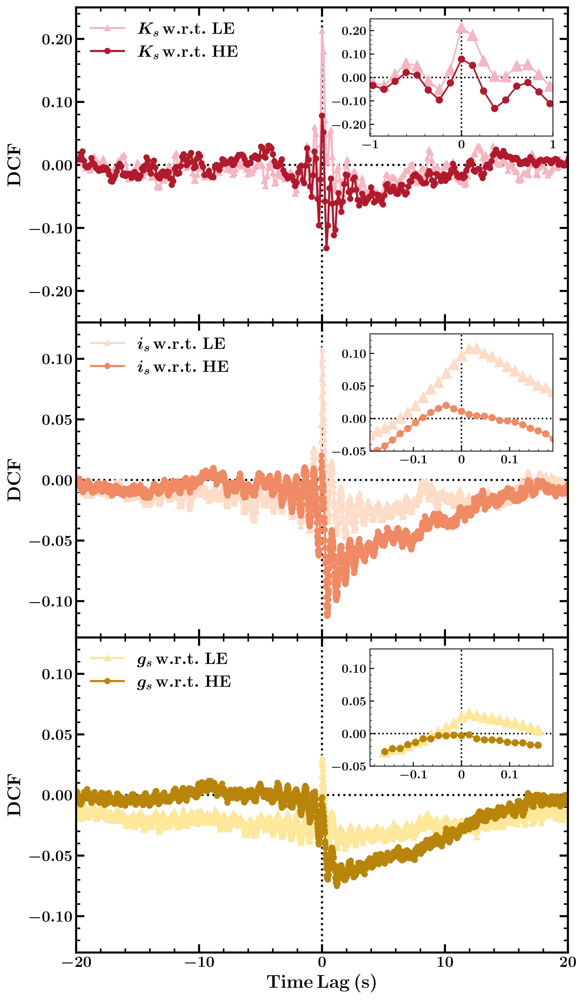
图注：From top to bottom, the DCFs of the $K_s$, $i_s$, and $g_s$ bands \(\textit{w.r.t.}\) the LE (2--10\,keV) and HE (27--150\,keV) bands of Swift J1727.8--1613 are shown. The correlations with the LE and HE bands are marked by light/dark red triangles/dots, light/dark orange triangles/dots, and light/dark yellow triangles/dots, respectively. In all panels, the X-ray band is taken as the reference band. The inset panels show zoomed-in views of the central peaks. A strong anti-correlation is observed in the $i_s$ and $g_s$ bands when the HE band is used as the reference band.
对应解读：建议重点查看的图表 3、4；关键图表逐图导读中的图 3 和图 4；模型拟合段落关于 CCF 整体形状、峰谷和能量依赖的讨论。
入选理由：这是最直接支撑本文核心结论的互相关图，展示 \(K_s\)、\(i_s\)、\(g_s\) 相对软 X 射线 LE 与硬 X 射线 HE 的 DCF，并明确给出近红外正相关、光学反相关以及软/硬 X 射线参考能段下形态差异。它比单纯功率谱或光变概览更能检验日报强调的能量分辨 CCF、峰/谷位置、幅度变化和多成分耦合解释。
来源与置信度：\(arxiv_source\)；high；\(arxiv_source\) / 0main_arxiv.tex:figure[3]
Fig05
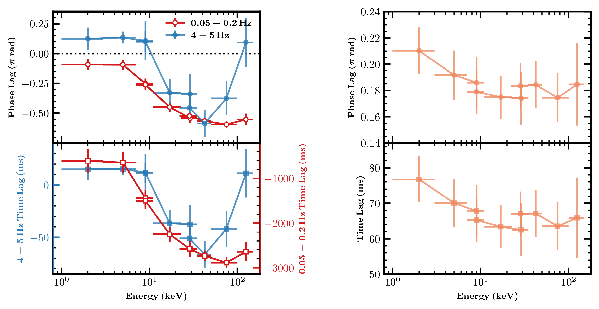
图注：Phase-lag (top panel) and time-lag (bottom panel) spectra of the optical ($i_s$) band \(\textit{w.r.t}\) the X-ray band (2--150\,keV) for Swift J1727.8--1613. The left panels show the results for the LFBN (red open symbols; 0.05--0.2\,Hz) and HFBN (blue filled symbols; 4--5\,Hz), while the right panels present the corresponding QPO (1.22--1.58\,Hz) results. A positive lag denotes optical lagging X-rays.
对应解读：建议重点查看的图表 6；关键图表逐图导读中的图 6；详细解读中关于 QPO 频率处 60--80 ms OIR 滞后可追踪到 150 keV 的结论。
入选理由：该图给出 \(i_s\) 相对 2--150 keV X 射线的 lag-energy 谱，并区分 LFBN、HFBN 与 QPO 频段，是检验 QPO 处 OIR 滞后是否随 X 射线能量保持一致的关键图。它直接对应日报中最重要的 lag-energy 诊断，比宽带平均滞后更能约束硬 X 射线端到 150 keV 的系统误差和误差条增大问题。
来源与置信度：\(arxiv_source\)；high；\(arxiv_source\) / 0main_arxiv.tex:figure[5]
Fig04
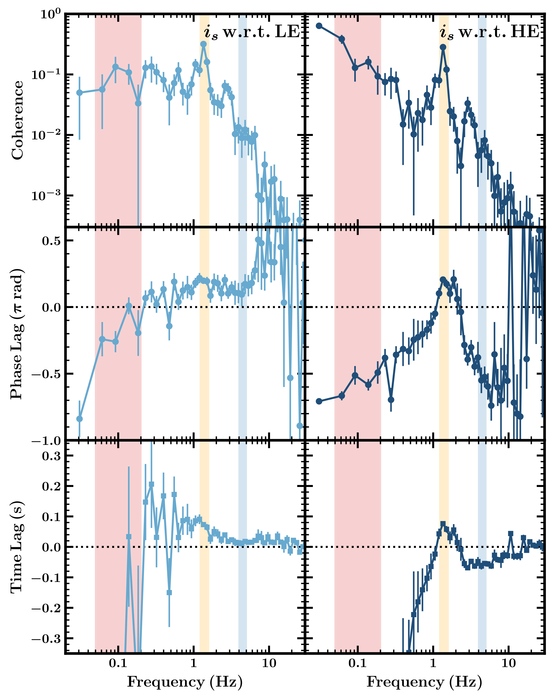
图注：Coherence (top panel), phase lag (middle panel) and time lag (bottom panel) of optical ($i_s$) \(\textit{w.r.t.}\) LE (2--10\,keV; left panel) and HE (27--150\,keV; right panel) bands for Swift J1727.8--1613. A positive lag denotes optical lagging X-rays. The orange, red, and blue shaded regions indicate the QPO frequency range ($\nu_c \pm $FWHM), the LFBN band (0.05--0.2\,Hz) and the HFBN band (4--5\,Hz), respectively.
对应解读：建议重点查看的图表 5、7；关键图表逐图导读中的图 5 和图 7；模型拟合段落关于互谱相位滞后误差与相干性的讨论。
入选理由：该图同时显示 optical \(i_s\) 相对 LE 与 HE 的 coherence、phase lag 和 time lag 随 Fourier 频率变化，并标出 QPO、LFBN、HFBN 频段。它能判断 60--80 ms 滞后是否集中在 QPO 附近，以及 QPO 处相干性是否足以支撑物理解释，是连接 CCF 与互谱分析的核心证据。
来源与置信度：\(arxiv_source\)；high；\(arxiv_source\) / 0main_arxiv.tex:figure[4]
Fig09
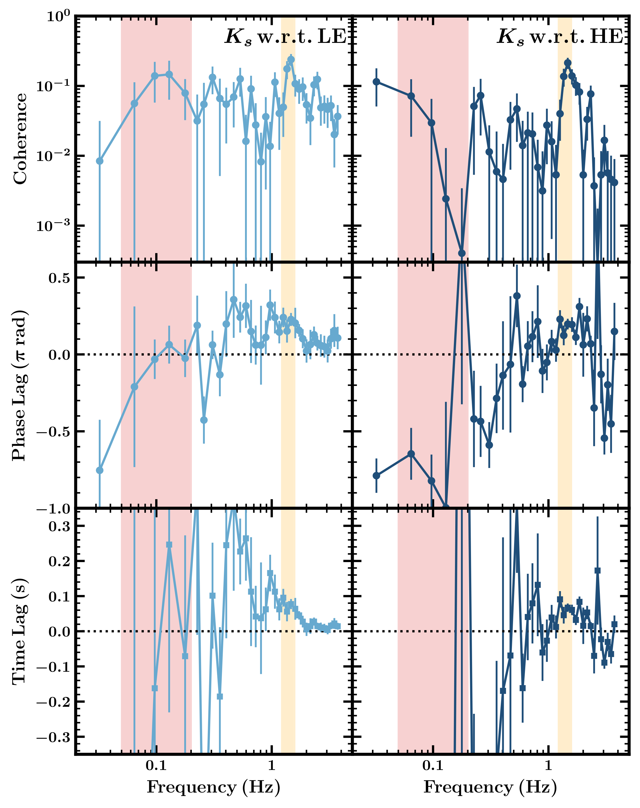
图注：Coherence (top panel), phase lag (middle panel) and time lag (bottom panel) of NIR ($K_s$) \(\textit{w.r.t.}\) LE (2--10\,keV; left panel) and HE (27--150\,keV; right panel) bands for Swift J1727.8--1613. A positive lag denotes NIR lagging X-rays. The orange and red shaded regions indicate the QPO frequency range ($\nu_c \pm $FWHM), and the LFBN band (0.05--0.2\,Hz), respectively.
对应解读：建议重点查看的图表 5、7；详细解读中关于近红外 \(K_s\) 强 QPO和 OIR/X 射线滞后关系的讨论。
入选理由：该图是 \(K_s\) 近红外相对 LE 与 HE 的 coherence、phase lag 和 time lag 频率谱，补充了 Fig04 只覆盖 optical \(i_s\) 的限制。由于日报特别强调近红外强正相关和 \(K_s\) 中的 QPO，该图能检验近红外通道的相干性和滞后是否与光学一致或存在差异。
来源与置信度：\(arxiv_source\)；high；\(arxiv_source\) / 0main_arxiv.tex:figure[9]
Fig02
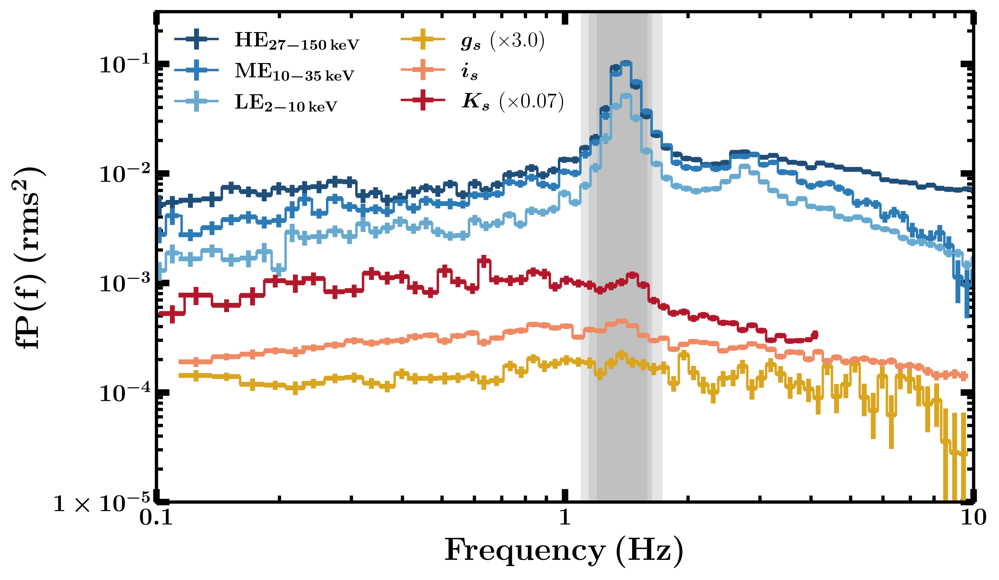
图注：PDS of Swift J1727.8--1613 in the X-ray (LE: 2--10 keV, ME: 10--35 keV, and HE: 27--150 keV; shown from light to dark blue), optical ($g_s$ and $i_s$; yellow and orange), and NIR ($K_s$; red) bands. For visual clarity, the $g_s$ and $K_s$ PDS are multiplied by factors of 3 and 0.07, respectively. The grey shaded region marks the QPO frequency range ($v_c \pm$FWHM) derived from the X-ray data.
对应解读：建议重点查看的图表 2；关键图表逐图导读中的图 2；模型拟合段落关于 Lorentzian QPO、连续噪声和不同波段 QPO 一致性的讨论。
入选理由：该图汇总 X-ray、\(g_s\)、\(i_s\)、\(K_s\) 的功率谱，并用灰色区域标出 X-ray 推导的 QPO 频率范围，是确认 \(K_s\)、\(i_s\) 与 X 射线中强 QPO 是否同频的基础图。它支撑后续所有 QPO 频段互谱和 lag-energy 分析，能帮助读者区分真实 QPO 与红噪声连续谱。
来源与置信度：\(arxiv_source\)；high；\(arxiv_source\) / 0main_arxiv.tex:figure[2]
Fig08
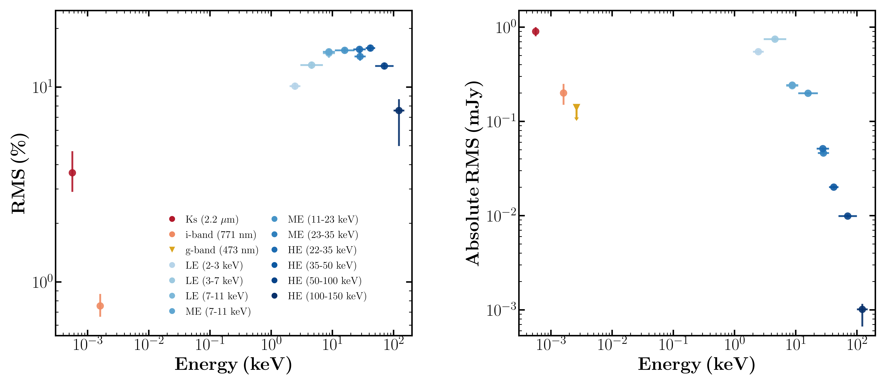
图注：QPO rms (left) and absolute rms (right) of Swift J1727.8--1613 in NIR ($K_s$), optical ($i_s$ and $g_s$), and X-ray (2--150\,keV). Since no significant QPO was detected in the $g_s$ band, only an upper limit on the QPO absolute rms is shown for this band.
对应解读：建议重点查看的图表 8；模型拟合段落关于 QPO 参数、分数 rms 和不同波段稳定性的讨论。
入选理由：该图给出 NIR、optical 和 X-ray 的 QPO rms 与 absolute rms，并标明 \(g_s\) 中未显著探测到 QPO 的上限。它不是主 CCF 或 lag 图，但对判断不同波段 QPO 强度、OIR 快速变率来源以及为何某些波段滞后解释更可靠很有价值，可作为功率谱结果的定量补充。
来源与置信度：\(arxiv_source\)；high；\(arxiv_source\) / 0main_arxiv.tex:figure[8]
强相关工作
这篇工作属于黑洞 X 射线双星高速多波段时序研究，与 XTE J1118+480、GX 339-4、MAXI J1820+070 等源的 OIR/X 射线相关性研究直接相关。相似工作的核心问题是：短时标 OIR 是否来自喷流底部、热内流同步辐射，还是外盘再处理。建议检索关键词包括 “black hole X-ray binary optical X-ray cross-correlation”, “infrared lag compact jet”, “MAXI J1820+070 optical X-ray timing”, “GX 339-4 infrared X-ray lag”。
在理论上，本文与紧致喷流模型、内部激波模型、热内流 Compton 化和 Lense-Thirring 进动 QPO 模型都有联系。它对简单单区模型形成压力：如果只有一个 Compton 化区和一个 OIR 响应区，就很难同时解释宽带 CCF 的强能量依赖和 QPO 滞后的弱能量依赖。相反观点或张力主要来自外盘再处理解释以及单一喷流传播解释；这些模型可以解释部分正滞后，但需要额外机制处理光学反相关和能量分辨行为。建议检索 “Swift J1727.8-1613 QPO”, “Swift J1727.8-1613 jet”, “multiple Comptonisation regions black hole transient”, “Lense-Thirring precession QPO optical infrared”。
同一事件 / 同类源线索：
相似工作：
基础理论 / 方法工作：
- https://arxiv.org/abs/astro-ph/0409360
- https://arxiv.org/abs/1108.0789
- https://arxiv.org/abs/1301.4244
相反观点 / 张力线索：
（未提供）
说明
评分由 LLM 给出初评，再由本地阈值策略过滤；IACT、TeV 伽马射线和高能中微子天文学按重点方向处理。